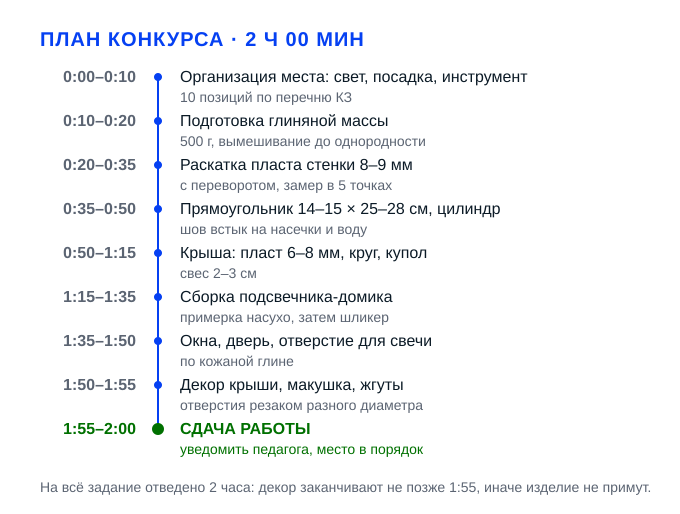
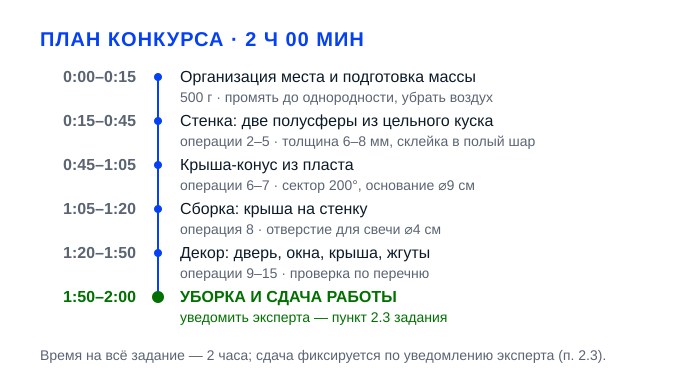
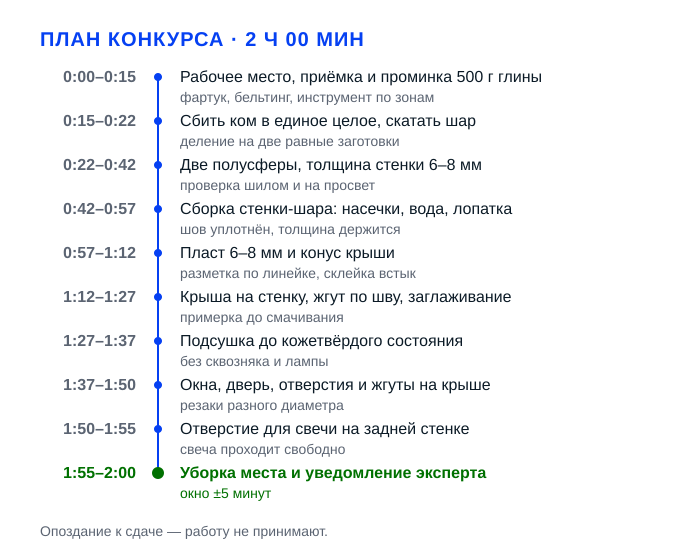

Ручная лепка из глины (ФВ)
Задания ниже — официальные файлы «Абилимпикс» (источник: abilympics-russia.ru), разложенные по категориям. Решения написаны по тексту задания, регламенту и критериям оценки; в них указано, что именно проверяет эксперт.
Школьник
14–16 лет, базовый уровень заданияВ официальном файле категории не разделены отдельными разделами — приводим задание целиком; различия по категориям смотрите в таблице модулей.
Пошаговое решение
За два часа вам нужно слепить из пятисот граммов глины сказочный домик — подсвечник, внутри которого поставят свечу и через прорези в стенах и крыше будет видно живой огонь. Конкурсное задание разбито на пять этапов: подготовка глиняной массы, стенка домика в виде цилиндра, крыша из полукруглого пласта, сборка подсвечника и декоративное оформление. Внутри этих этапов есть всего несколько цифр, которые решают результат: стенка раскатывается до восьми-девяти миллиметров, крыша — до шести-восьми, прямоугольник стенки вырезается четырнадцать-пятнадцать сантиметров на двадцать пять-двадцать восемь, и всё это склеивается только встык, на насечки и воду. Домик, который развалился на стыке или пошёл трещинами, не спасает никакой декор, поэтому время уходит не на украшения, а на толщину пласта, ровный срез и шов. Шаги идут по этапам задания и по времени, отведённому на каждый.

Задача 1. Организовать рабочее место и подготовить глиняную массуЭтап 1 КЗ · 0:00–0:20
Первые двадцать минут кажутся самыми простыми, но именно здесь закладывается всё остальное. Нужно разложить десять инструментов из перечня КЗ так, чтобы до каждого можно было дотянуться не вставая, поставить свет слева и сесть так, чтобы до работы оставалось тридцать пять-сорок сантиметров. Затем глину надо размять до полной однородности: комок в пятьсот граммов должен перестать щёлкать и сопротивляться, а из него должны уйти все пузырьки воздуха. Если этот этап сделать наспех, дальше пласт восьми миллиметров будет рваться, а стенка после сборки пойдёт трещинами — и виноватой окажется не техника лепки, а непромешанная глина.
Действие 1.1. Разложить инструмент и настроить рабочее место
Шаг 1.1.1
Садимся за рабочее место и первым делом ставим свет: он должен падать на бельтинг слева, а не сзади и не прямо в глаза. Спина при этом касается спинки стула, локти лежат на столе, а расстояние от глаз до глины — тридцать пять-сорок сантиметров; проверьте это линейкой один раз, чтобы потом не наклоняться к каждому шву. Стул пододвигаем так, чтобы можно было работать двумя руками и не тянуться к дальнему краю стола. Если лампа стоит справа, просто переставьте её, пока стол ещё пустой.
Требования охраны труда в конце задания перечисляют эти три вещи прямым текстом: освещение слева, посадка с опорой на спинку, дистанция тридцать пять-сорок сантиметров. На оценку это влияет дважды: во-первых, организация рабочего места проверяется как отдельный пункт, во-вторых, при плохом свете вы физически не увидите, что пласт получился шесть миллиметров вместо восьми — тень от собственной руки скроет перепад толщины.
Проверьте себя тремя признаками: тень от правой руки не ложится на заготовку, спина касается спинки стула, а между глазами и бельтингом свободно проходит ладонь, поставленная на ребро. Если приходится наклоняться, чтобы разглядеть край пласта, — место настроено неправильно.
Самая частая ошибка — сесть лицом к окну или к лампе: заготовка оказывается в контровом свете, и все неровности выглядят сглаженными, а на самом деле там яма в два миллиметра. Вторая ошибка — работать стоя или на краю стола, свесив руку: тогда давление скалки уходит в сторону, и пласт получается клином, толстым с одного края и тонким с другого.
Эксперт обходит рабочие места в первые минуты конкурса и отмечает именно стартовую картину: как расположен свет, как сидит участник, есть ли на столе свободная зона для раскатки и не приходится ли ему наклоняться к заготовке.
Шаг 1.1.2
Выкладываем на стол весь инструмент по перечню задания: бельтинг, скалку, шило, стеки, стаканчик с водой, кисточку, лекало, фартук, резак для глины и линейку. Раскладываем не кучей, а по зонам: справа от бельтинга — скалка, линейка и резак, слева — шило, стеки и кисточка, вода стоит чуть в стороне, чтобы её не опрокинуть локтем. На самом бельтинге не должно лежать ничего, кроме глины: любой инструмент, забытый на подложке, отпечатается на пласте, когда вы его перевернёте.
Перечень оборудования на участника в задании закрытый: каждая позиция там названа, и всё перечисленное должно быть в работе, а не лежать в сумке. Логика простая: если шило окажется в другом конце стола, вы будете искать его в момент, когда шов уже подсох, и потеряете минуту-две на каждом соединении. За два часа таких минут набегает на целый этап, а время — единственный ресурс, который нельзя добрать.
Все десять позиций на месте, каждая в пределах вытянутой руки, бельтинг свободен. Пройдите взглядом по списку и назовите про себя каждый предмет — если на каком-то пункте вы запнулись, значит, его нет на столе. Скалка должна быть сухой и чистой, без прилипших кусочков глины от прошлых раскаток.
Первая ошибка — оставить инструмент в упаковке «до начала»: потом выясняется, что резак затуплен, а лекало другого размера. Вторая, более коварная, — положить стаканчик с водой прямо у бельтинга: одно неосторожное движение локтем, и вода льётся на пласт, глина размокает, и участок приходится переделывать.
Эксперт смотрит, разложен ли инструмент по зонам и умеет ли участник работать, не отвлекаясь на поиски. Отдельно отмечается порядок на бельтинге в середине конкурса, когда уже появились обрезки и глиняная крошка.
Шаг 1.1.3
Надеваем фартук и подворачиваем рукава выше локтя, чтобы манжета не смахивала глиняную стружку на только что выглаженную поверхность. В стаканчик наливаем воду примерно на треть и ставим кисточку ворсом вверх, а рядом кладём влажную, хорошо отжатую губку. Кисточку смачиваем и проверяем, что ворс мягкий и не сыпется: жёсткой кистью вы не нанесёте тонкий слой воды на насечки, а зальёте шов, и он поплывёт.
Вода в этом задании — единственный клей, и работает он только в малом количестве: смоченные насечки дают шликерную плёнку, которая схватывает два края в одно целое. Если воды много, край размягчается, теряет форму и вместо соединения встык получается вмятина. Губка нужна для противоположной задачи — снимать лишнюю влагу и затирать швы, и без неё поверхность остаётся липкой и «сальной» на вид.
Воды примерно треть стакана, губка влажная, но с неё не течёт, кисточка держит каплю и не роняет её сразу. Проверьте рукой: если при нажатии на губку на бельтинге остаётся лужица — отожмите сильнее. Всё остальное должно быть сухим: скалка, линейка, стол вокруг бельтинга.
Типичная ошибка — макать палец в воду и размазывать ею шов: слой получается неравномерным, один участок размокает, другой остаётся сухим, и шов расходится именно там, где сухо. Вторая — поставить открытый стакан на край стола, откуда его сносит рукавом в самый неподходящий момент.
Эксперт обращает внимание на аккуратность: сухой ли стол, нет ли разлитой воды, пользуется ли участник кисточкой по назначению, а не льёт воду из стакана. Разлитая вода считается нарушением организации места.
Шаг 1.1.4
Отдельно договариваемся с инструментом о безопасности: шило кладём остриём от себя, резак — рядом с собой лезвием к стене, а не к соседу. Работая шилом, ведём его на себя и вниз, никогда не разворачиваем острие в сторону рядом сидящего человека, даже если он отошёл. Глину и инструмент не берём в рот и не облизываем пальцы, чтобы «смочить» шов: для этого есть кисточка и стаканчик.
Требования охраны труда в задании перечисляют именно эти пункты: нельзя делать резких движений шилом в направлении соседа, нельзя оставлять инструменты остриём к себе и к ближайшим участникам, нельзя брать материалы в рот. Нарушение любого из них — это не замечание, а остановка работы, и никакая красивая крыша уже не будет иметь значения, потому что изделие к оценке не допустят.
Шило лежит остриём от вас, резак — на подставке или у дальнего края стола, свободная рука не тянется через бельтинг. Проверьте зону в радиусе локтя: там не должно быть ничего острого, что можно задеть при раскатке. Если инструмент неисправен — ручка шатается, лезвие погнуто, — сразу просите замену, а не работайте «как-нибудь».
Частая ошибка — бросить шило на бельтинг остриём вверх: при следующем движении ладонь находит его раньше, чем глаза. Вторая — работать резаком, держа линейку пальцами в зоне движения лезвия: при соскальзывании порез гарантирован, и помощь займёт время конкурса.
Эксперт фиксирует нарушения техники безопасности по ходу всей работы, а не только на входе. Это единственный критерий, который может обнулить результат целиком, поэтому за положением шила и резака он следит постоянно.
Действие 1.2. Подготовить глиняную массу
Шаг 1.2.1
Достаём ком глины в пятьсот граммов и первым делом оцениваем его на ощупь: сжимаем в кулаке и смотрим, как он себя ведёт. Хорошая рабочая глина мягкая, прохладная, пластичная, почти не липнет к ладони и не крошится по краям. Если комок липнет и пачкает пальцы, как тесто, он переувлажнён, и его нужно подсушить на бельтинге десять-пятнадцать минут. Если крошится и трескается при сжатии — глина подсохла, и её надо сбрызнуть водой из кисточки и вымесить.
С консистенцией связана вся геометрия изделия. Из переувлажнённой глины не получить пласт восьми миллиметров: он прилипает к скалке, тянется за ней и рвётся, а потом стенка цилиндра оседает под собственным весом. Из пересушенной глины не сделать шов встык: края не схватятся, как их ни смачивай, потому что внутри уже нет пластичности. Проверка консистенции занимает минуту и экономит полчаса переделок.
Нажмите большим пальцем в комок: след должен остаться ровным, без разрывов по краю отпечатка, и глина не должна прилипать к пальцу при отрыве. Скатайте между ладонями колбаску толщиной с палец: она должна гнуться дугой и не трескаться по внешней стороне изгиба. Если трещины пошли сразу — глина суховата, добавьте воды и вымесите ещё раз.
Ошибка новичка — начать работать с глиной прямо из упаковки, не проверив её: сверху комок может быть мягким, а внутри уже подсохшим, и первая же раскатка вскроет твёрдые комки, которые придётся вырезать вместе с пластом. Вторая ошибка — доливать воду «на глаз» стаканом: переувлажнённую глину сушат долго, а время конкурса уже идёт.
Эксперт может подойти и помять глину на вашем столе: слишком липкая или слишком крошащаяся масса сразу читается как неподготовленное рабочее место. Проверяет он это в начале, ещё до раскатки пласта.
Шаг 1.2.2
Мнём глину обеими руками пять-семь минут: кладём комок на ладонь, второй ладонью прижимаем и отводим от себя, разворачиваем на девяносто градусов и повторяем. Полезно сложить раскатанный блин пополам, прижать края и снова размять — так из массы выгоняется воздух. Каждые полторы-две минуты переворачиваем комок и меняем направление движений, чтобы не осталось непромешанной сердцевины.
В задании подготовка глиняной массы названа первым пунктом и объяснена прямо: глина должна быть хорошо перемята для удаления из неё пузырьков воздуха. Пузырёк — это полость внутри стенки; при сушке и обжиге воздух расширяется и рвёт изделие изнутри, а на поверхности появляется вздутие или трещина. Кроме того, перемешанная масса имеет одинаковую влажность по всему объёму, поэтому пласт сохнет равномерно и не коробится.
Разрежьте комок шилом или стеком пополам и посмотрите на срез: он должен быть ровным, матовым, без мелких тёмных точек и раковин. Прокатайте комок в ладонях — он не должен щёлкать и похрустывать. Глина готова, когда она стала однородной на вид и «послушной» на ощупь: держит форму, но легко меняет её под пальцами.
Самая опасная ошибка — помять глину минуту и считать, что этого достаточно: снаружи масса выглядит гладкой, а внутри остаются воздушные карманы, и они проявятся именно на тонкой стенке. Вторая — мять на сухом бельтинге без подпыла: глина прилипает к подложке, и вы вымешиваете её вместе с ворсом и пылью.
Эксперт смотрит на сам процесс: сколько времени участник мнёт массу, меняет ли направление движений, проверяет ли срез. Быстрые торопливые движения в этом шаге хорошо заметны, и по ним видно, понимает ли участник, зачем нужна подготовка.
Шаг 1.2.3
После вымешивания скатываем комок в шар, сбрызгиваем поверхность водой из кисточки и накрываем влажной тканью или плёнкой, пока готовим инструмент к раскатке. Держим глину закрытой всё время, когда она не в руках: открытый комок на воздухе за десять-пятнадцать минут покрывается тонкой корочкой. Перед раскаткой корочку снимаем: смачиваем ладонь и проходим по всей поверхности, затем разминаем ещё полминуты, чтобы влага разошлась внутрь, а не осталась на кожуре.
Корочка — главный враг шва встык. Если раскатать пласт вместе с ней, поверхность будет казаться гладкой, но при сворачивании в цилиндр корочка треснет по линии сгиба, и шов получится с расходящейся щелью. Задание требует склейки встык на насечки и воду: насечки режут именно по телу глины, а по сухой корочке они крошатся, не давая сцепления. Поэтому влажность поддерживается постоянно, а не один раз в начале.
Поверхность комка на ощупь прохладная, слегка влажная, палец оставляет на ней ровный след без белых разломов по краю. Под тканью не должно быть лужицы: если вода стоит на бельтинге, комок размок снизу. Проверьте через пять минут — глина должна остаться такой же мягкой, какой была, без плотной плёнки сверху.
Типичная ошибка — накрыть глину мокрой тряпкой, с которой течёт: снизу комок размокает, и его приходится подсушивать, теряя время. Вторая — оставить глину открытой на десять минут, пока размечаете линейку: корочка образуется незаметно, и вы почувствуете её только на сгибе пласта, когда переделывать уже поздно.
Эксперт оценивает, накрыта ли глина между операциями. Это видимый признак того, что участник понимает свойства материала, а не просто выполняет последовательность движений: открытый комок к середине конкурса покрывается корочкой.
Задача 2. Сформировать стенку домика в виде цилиндраЭтап 2 КЗ · 0:20–0:50
С этого этапа начинается собственно изделие: из подготовленной массы нужно раскатать пласт толщиной восемь-девять миллиметров, вырезать по линейке прямоугольник четырнадцать-пятнадцать сантиметров шириной и двадцать пять-двадцать восемь длиной и свернуть его в цилиндр так, чтобы края сошлись ровно. Соединение делается только встык: по кромкам насечки шилом, вода кисточкой, прижим на двадцать-тридцать секунд. От того, насколько ровными получились кромки и совпала ли толщина по всей площади, зависит, будет ли шов виден после сборки и выдержит ли стенка вес крыши.
Действие 2.1. Раскатать пласт для стенки толщиной 8–9 мм
Шаг 2.1.1
Кладём комок на бельтинг, прижимаем ладонью в лепёшку и начинаем раскатывать скалкой от центра к краям, короткими движениями, держа скалку двумя руками за концы. Давим равномерно: скалка должна идти по глине, а не врезаться в неё одним краем. Каждые пять-шесть проходов останавливаемся, поддеваем пласт ладонью, переворачиваем и продолжаем с другой стороны — задание требует переворачивать глину во время раскатки, и это не формальность.
Переворот даёт две вещи сразу. Во-первых, пласт не прилипает к бельтингу и не рвётся, когда его поднимают. Во-вторых, толщина выравнивается: глина тянется в том направлении, куда её катают, и если не переворачивать, один край неизбежно становится тоньше другого. Равномерные восемь-девять миллиметров по всей площади — это условие прочности цилиндра: там, где стенка тоньше, она просядет при установке крыши и треснет при сушке.
Пласт не липнет к скалке, свободно отходит от бельтинга при подъёме за угол и не заворачивается по краям. Если при перевороте слышен хлопок или пласт натягивается резиной — глина слишком влажная, дайте ей пару минут полежать. Раскатывайте до размеров не меньше двадцати восьми на шестнадцать сантиметров, чтобы из пласта вышли все заготовки.
Первая ошибка — катать в одном направлении, не переворачивая: пласт прилипает, при подъёме рвётся по центру, и переделка начинается с нуля. Вторая — давить на скалку всеми силами сразу: глина выходит за края неровными волнами, а в середине остаётся толстая линза десять-двенадцать миллиметров, которую потом придётся долго выравнивать.
Эксперт смотрит на сам приём раскатки: держит ли участник скалку двумя руками за концы, переворачивает ли пласт после пяти-шести проходов, не рвёт ли его при подъёме за угол. Приём виден за десять секунд.
Шаг 2.1.2
Проверяем толщину в пяти точках: по четырём углам пласта и в центре. Делаем это линейкой, поставленной на ребро, — она должна лечь на поверхность без качания, и по её делению видно, сколько до бельтинга. Второй способ быстрее: проткнуть пласт шилом и посмотреть глубину прокола, а отверстие сразу загладить пальцем. Норма — восемь-девять миллиметров; если где-то шесть, этот участок надо докатать, если двенадцать — подкатать именно это место, прикрыв остальное ладонью.
Толщина восемь-девять миллиметров взята из задания не случайно: это компромисс между прочностью и весом. Тоньше шести миллиметров — стенка не держит форму, проминается от пальца и рвётся по шву, когда её сворачивают. Толще двенадцати — домик становится тяжёлым, крыша его подминает, а при сушке массивная стенка садится неравномерно и даёт трещины. Проверка в пяти точках ловит те перепады, которых глаз не видит.
Разница между самым толстым и самым тонким местом не больше одного миллиметра. Пласт лежит на бельтинге ровно, без бугров и волнистых краёв, при нажатии пальцем пружинит одинаково по всей площади. Если линейка качается на поверхности — под ней бугор, и его надо докатать, а не замазывать.
Частая ошибка — проверить толщину только в центре: именно там она чаще всего в норме, а по краям пласт тоньше, потому что скалка уходила за границу. Вторая — докатывать тонкое место, нажимая на него ладонью: так вы не утолщаете пласт, а просто вминаете его в бельтинг, и толщина остаётся прежней.
Эксперт может подойти с линейкой и замерить толщину сам, в любой точке пласта. Поэтому ровность важна не «в среднем», а везде: разница между центром и краем в три миллиметра фиксируется как отклонение от восьми-девяти.
Шаг 2.1.3
Когда толщина вышла в норму, проходим по всей поверхности подушечками пальцев и ищем мелкие бугорки — под ними воздух. Каждый такой бугорок прокалываем шилом, выпускаем воздух и заглаживаем отверстие пальцем, смоченным водой. Затем подрезаем края пласта резаком, чтобы получился ровный прямоугольник с прямыми углами, и оставляем пласт полежать две-три минуты под влажной тканью, чтобы он отдохнул после раскатки и не садился при сворачивании.
Воздушные карманы — это те же пузырьки, которые не ушли при вымешивании, только крупнее. На тонкой стенке они дают вздутия: при сушке поверхность вспучивается, а при обжиге лопается, и вся работа выглядит бракованной. Отдых пласта нужен по другой причине: только что раскатанная глина напряжена и при сгибе стремится вернуться в плоское состояние, из-за чего шов расходится через минуту после склейки.
На поверхности нет бугров и ямок, при взгляде на пласт сбоку линия ровная. После двух-трёх минут отдыха пласт остаётся таким же мягким, не покрылся корочкой и не начал заворачиваться краями вверх. Углы прямые, кромки чистые, без заусениц.
Ошибка — прокалывать бугорки и не заглаживать отверстия: остаются точки, которые при декорировании придётся маскировать. Вторая — оставить пласт отдыхать под сухой тканью на десять минут: он схватится корочкой, и при сворачивании пойдёт сетка мелких трещин, которую уже не убрать.
Эксперт обращает внимание на поверхность: гладкая она или в мелких кавернах, есть ли следы непромешанной глины. Осматривает он заготовку до сворачивания, потому что после сборки внутренняя сторона стенки уже недоступна.
Действие 2.2. Вырезать прямоугольник 14–15 на 25–28 см
Шаг 2.2.1
Размечаем пласт шилом по линейке: сначала отмеряем длину — двадцать пять-двадцать восемь сантиметров, потом ширину — четырнадцать-пятнадцать. Линейку прижимаем левой рукой так, чтобы она не сдвинулась, а шилом ведём тонкую линию, почти не нажимая: глубокий след не нужен, он только деформирует кромку. Отсчёт начинаем от ровного края пласта, а не от середины, и проверяем углы — они должны быть прямыми, иначе при сворачивании один край окажется длиннее другого и выступит над швом.
Размеры прямоугольника прямо связаны с диаметром будущего домика. Двадцать пять сантиметров длины дают окружность диаметром около восьми сантиметров, двадцать восемь — около девяти; значит, круг для крыши надо вырезать на два-три сантиметра больше, чтобы получился свес. Если разметить на глаз, края не сойдутся встык: один будет нависать, другой не дотянется, и шов придётся закрывать жгутом.
Линии тонкие, замкнутые, углы совпадают при пересечении. Противоположные стороны равны: проверьте линейкой обе длинные кромки и обе короткие, расхождение не больше двух-трёх миллиметров. Диагонали прямоугольника должны быть одинаковыми — это самый быстрый способ убедиться, что углы прямые, а не завалены.
Ошибка — размечать, не прижимая линейку: она сдвигается на миллиметр-два, и линии получаются непараллельными, а такой пласт при сворачивании даёт перекошенный цилиндр. Вторая — царапать шилом на всю глубину: по этим бороздам глина начинает рваться, когда пласт поднимают.
Эксперт смотрит на разметку как на признак владения линейкой: параллельность линий и прямые углы видны сразу, без всяких измерений. Отдельно отмечается, отмерял ли участник от ровного края или начинал от середины.
Шаг 2.2.2
Вырезаем по разметке резаком для глины, прижимая линейку левой рукой и ведя лезвие вдоль неё одним протяжным движением. Резак держим вертикально, под прямым углом к столу: наклонное лезвие даёт косой срез, и кромка получается скошенной, как фаска. Режем на себя, спокойно, без «пиления» туда-сюда — глина не пилится, а прорезается. Сначала проходим две длинные стороны, потом две короткие, и только после этого приподнимаем обрезки за угол и убираем их с бельтинга.
Вертикальный срез — это условие склейки встык. Два косых среза, приложенных друг к другу, дают клиновидную щель: сверху она почти незаметна, а внутри остаётся пустота, и шов расходится при первой же сушке. Ровный вертикальный срез даёт полный контакт по всей толщине восемь-девять миллиметров, и насечки с водой схватывают его надёжно. Кроме того, по ровной кромке потом легче выровнять цилиндр и добиться, чтобы верхний торец был горизонтальным.
Кромки вертикальные, без фаски и «ступеньки», при взгляде с торца пласт одинаковой толщины по всей длине среза. Пальцем проведите вдоль кромки: она должна быть ровной, без заусениц и вырванных кусочков. Обрезки отделяются легко, не тянут за собой основной пласт.
Первая ошибка — резать, наклонив лезвие, «как удобнее руке»: кромка получается косой, и шов потом зияет. Вторая — вести резак в несколько проходов по одному месту: в глине образуется рваная борозда, кромка крошится, и при склейке от неё остаётся неровный валик, который видно на готовом домике.
Эксперт проверяет кромки пальцем и на просвет: наклонный срез выдаёт себя неровной линией на торце. Делает он это до сворачивания, потому что после склейки кромки уже скрыты внутри шва.
Шаг 2.2.3
Снимаем вырезанный прямоугольник с бельтинга, придерживая его всей ладонью, а не за угол, и укладываем на чистую сухую поверхность лицевой стороной вверх. Ещё раз проверяем размеры линейкой и, если нужно, подрезаем кромки на один-два миллиметра, чтобы убрать случайные неровности. Затем проходимся по кромкам влажным пальцем, сглаживая заусеницы, но не размачивая срез: он должен остаться плотным и вертикальным.
Подрезать кромки надо сейчас, потому что после сворачивания исправить их будет невозможно: доступ к внутренней стороне шва закрыт, а любая подрезка на собранном цилиндре деформирует окружность. Сглаживание заусениц влажным пальцем нужно для того, чтобы насечки ложились ровно, а не крошились: шило, идущее по рыхлому краю, оставляет рваные борозды, и сцепление получается слабым.
Длина и ширина совпадают с задуманными, кромки плотные, без крошки и заусениц. Пласт не растянулся при переносе: если после подъёма он стал длиннее на сантиметр, значит, вы тянули его за угол, и теперь геометрия нарушена — такой пласт лучше подровнять по новой разметке.
Ошибка — поднимать пласт за один угол: он вытягивается и перекашивается, а потом цилиндр получается с разной толщиной стенки по высоте. Вторая — слишком долго тереть кромки мокрым пальцем, превращая их в размокшую кашу: такой край не держит форму и расползается под насечками.
Эксперт оценивает заготовку до сворачивания: размеры, ровность кромок, отсутствие растянутых участков. Заготовка, вытянутая за угол, видна по разной толщине стенки у основания и у верха.
Действие 2.3. Свернуть пласт в цилиндр и склеить шов встык
Шаг 2.3.1
Кладём прямоугольник на бельтинг, приподнимаем дальний от себя длинный край и начинаем сворачивать его в цилиндр, подгибая глину постепенно, сантиметр за сантиметром. Не тянем и не надавливаем: пальцы только задают направление, а форма получается сама. Когда края подойдут друг к другу, выравниваем их по высоте и совмещаем так, чтобы они сошлись ровно, без нахлёста, — задание требует склейки именно встык.
Диаметр цилиндра получается из длины пласта: двадцать пять сантиметров дают около восьми, двадцать восемь — около девяти. Этот диаметр важен для крыши: круг для неё вырезается по этому же размеру с припуском на свес, и если цилиндр вышел эллипсом, крыша сядет криво. Сворачивать надо свободно: сжатая стенка утолщается в одном месте и утоньшается в другом.
Цилиндр стоит на бельтинге ровно, не заваливается набок, верхний торец горизонтальный. Посмотрите на него сверху: окружность должна быть круглой, а не овальной, и края сходятся по всей высоте, а не только сверху или снизу. Диаметр одинаков и у основания, и у верха — это значит, что стенка вертикальная.
Типичная ошибка — свернуть пласт вокруг руки, как кулёк: получается конус, у которого низ шире верха, и крыша на него не садится. Вторая — тянуть край, чтобы он дотянулся до другого: глина вытягивается, становится тоньше, и в этом месте стенка рвётся при сушке.
Эксперт осматривает цилиндр со всех сторон и сверху, отмечая, круглая ли окружность и совпадают ли края по высоте. Диаметр он может измерить сам — от него зависит, сядет ли крыша.
Шаг 2.3.2
На обеих кромках делаем насечки шилом: идём по срезу наискосок, через каждые пять-семь миллиметров, на глубину один-два миллиметра, под углом примерно сорок пять градусов. Насечки на одной кромке должны смотреть вверх, на другой — вниз, чтобы при совмещении они перекрещивались, а не совпадали в одну линию. Затем смачиваем обе кромки кисточкой: не льём воду, а проводим ворсом два-три раза, пока поверхность не заблестит, и сразу прижимаем края друг к другу.
Насечки плюс вода — это и есть склейка встык, которую требует задание. Вода превращает поверхностный слой глины в шликер, который работает как клей; насечки увеличивают площадь контакта в несколько раз и не дают шликеру выдавиться при прижиме. Перекрещивающиеся насечки цепляются друг за друга механически. Сухие края не соединятся вообще, а залитые водой — размокнут и потекут.
Насечки идут равномерно по всей длине, без пропусков, глубина одинаковая. После смачивания поверхность кромок блестит, но не блестит настолько, чтобы с неё текло. При прижиме из шва выступает тонкая полоска шликера — это признак того, что соединение состоялось, и её надо убрать, а не размазывать.
Первая ошибка — насекать только одну кромку: сцепление получается вдвое слабее, и шов расходится при сушке. Вторая — макать кромку в стакан с водой: глина размокает, превращается в кашу и оседает, вместо того чтобы держать форму; шов получается вдавленным и заметным.
Эксперт смотрит на характер насечек и на то, пользуется ли участник кисточкой или льёт воду прямо из стакана. Перекрещивающиеся насечки одинаковой глубины он отличает от редких царапин сразу.
Шаг 2.3.3
Прижимаем совмещённые края и держим двадцать-тридцать секунд, плотно сжимая пальцами по всей высоте шва, а не в одной точке. Потом проходим по шву снаружи пальцем, смоченным водой, и заглаживаем его так, чтобы поверхность стала непрерывной; изнутри делаем то же самое, просунув руку в цилиндр. Если на шве осталась видимая канавка, скатываем тонкий жгут толщиной три-четыре миллиметра, укладываем его вдоль шва и вдавливаем, закрывая стык.
Шов — самое слабое место всей конструкции: именно по нему домик расходится при сушке, и именно его видно на готовом изделии. Двадцать-тридцать секунд прижима нужны, чтобы шликер схватил оба края. Заглаживание пальцем с водой убирает выступивший шликер и делает соединение монолитным; оставленная канавка — концентратор напряжения, откуда пойдёт трещина. Жгут поверх шва — страховка для широкой щели, но злоупотреблять им не стоит: валик заметен.
Проведите пальцем поперёк шва: ступеньки нет, поверхность непрерывная. Посмотрите на шов на просвет лампы с внутренней стороны — щели не должно быть видно. При лёгком нажатии на стенку рядом со швом она не играет и не расходится; цилиндр держит форму, когда вы его приподнимаете.
Ошибка — прижать шов на секунду и сразу отпустить: шликер не успевает схватить, и края снова расходятся под собственным весом. Вторая — заглаживать шов мокрым пальцем слишком долго, размачивая глину: на этом месте образуется вмятина, которая после сушки превращается в трещину.
Эксперт проводит пальцем по шву и смотрит на него снаружи и изнутри: щель, ступенька или вмятина видны сразу. Отдельно отмечается, держал ли участник прижим или отпустил края через секунду.
Шаг 2.3.4
Ставим готовый цилиндр на бельтинг и выравниваем его: обеими ладонями слегка обжимаем стенку по кругу, добиваясь правильной окружности, а затем проверяем вертикальность, посмотрев на домик сбоку при свете лампы. Верхний торец должен быть горизонтальным — если он «пляшет», подрезаем его резаком по линейке, поставленной на ребро поперёк цилиндра. Внизу стенку слегка приминаем к бельтингу, чтобы получилась ровная опорная линия.
Ровный горизонтальный торец нужен для установки крыши: на нём будут насечки, и если он завален, крыша сядет с перекосом, свес получится неравномерным, а шов местами окажется толще, чем в других точках. Вертикальная стенка держит вес крыши без деформации; заваленная внутрь — прогибается под пальцем и трескается при сушке. Кроме того, от геометрии зависит, будет ли домик устойчиво стоять.
Поставьте цилиндр на ровный стол и посмотрите сверху: окружность круглая, толщина стенки на глаз одинаковая по всему периметру. Торец горизонтальный — приложите линейку: она должна касаться его по всей длине без зазора. Домик не качается, если нажать на верхний край: основание стоит плотно.
Частая ошибка — выравнивать цилиндр, сжимая его с двух сторон: он превращается в овал, а исправить это потом сложно, потому что глина уже потеряла форму. Вторая — не подрезать заваленный торец, надеясь, что крыша «ляжет и так»: перекос в два-три миллиметра на диаметре девять сантиметров даёт заметный крен всего домика.
Эксперт ставит изделие на стол и смотрит на него сбоку: вертикальность стенки и горизонтальность торца — первые признаки качества работы. Заваленный торец он замечает ещё на примерке крыши.
Задача 3. Сформировать крышу из пласта полукруглой формыЭтап 3 КЗ · 0:50–1:15
Крыша делается почти так же, как стенка, но из более тонкого пласта: шесть-восемь миллиметров вместо восьми-девяти, потому что ей не нужно держать вес, а нужно повторять окружность цилиндра. Из пласта вырезается круг по шаблону — подойдёт тарелка или лекало, — затем в круге вырезается треугольник, края смачиваются и склеиваются встык. Круг превращается в купол, который садится на стенку с небольшим свесом. Здесь важны три вещи: одинаковый свес по всему периметру, симметричная вершина и шов, который не расходится, когда крышу прижимают к стенке.
Действие 3.1. Раскатать пласт для крыши толщиной 6–8 мм
Шаг 3.1.1
Берём остаток глины, скатываем в шар и раскатываем скалкой так же, как для стенки: от центра к краям, двумя руками, с переворотом через каждые пять-шесть проходов. Только теперь давим чуть сильнее и останавливаемся раньше: пласт должен выйти тоньше, шесть-восемь миллиметров. Размер заготовки — не меньше двадцати сантиметров в диаметре, потому что круг для крыши вырезается с припуском на свес, а обрезки ещё пойдут на дверь и жгуты.
Крыша тоньше стенки по двум причинам. Во-первых, ей не надо держать вес — наоборот, тяжёлая крыша продавливает верхний торец стенки и деформирует цилиндр. Во-вторых, из тонкого пласта легче свернуть купол: он гнётся мягче, и шов сходится без натяжения. Но есть и нижняя граница: тоньше шести миллиметров пласт рвётся при сгибе, а при прорезании отверстий резак вырывает куски вместо ровных кружков.
Пласт ровный, без бугров, при подъёме за угол не рвётся и не тянется резиной. Проверьте толщину в трёх точках линейкой на ребре — разница не больше миллиметра, и все значения попадают в промежуток от шести до восьми. Края заготовки выходят за границы будущего круга минимум на сантиметр.
Ошибка — раскатать крышу из того же пласта, что и стенку, «чтобы не тратить время»: получится восемь-девять миллиметров, купол будет тяжёлым и при сборке продавит стенку. Вторая — раскатать слишком тонко, до четырёх-пяти миллиметров, в погоне за лёгкостью: такой пласт рвётся по шву при склейке, а отверстия в нём получаются рваными.
Эксперт замеряет толщину крыши отдельно от стенки: разница между шестью-восемью и восемью-девятью миллиметрами — это прямое требование задания, и она проверяется линейкой, поставленной на ребро.
Шаг 3.1.2
Снимаем пласт с бельтинга, укладываем на сухую поверхность и даём ему отдохнуть две-три минуты под влажной тканью. Затем проверяем его на просвет лампой: тёмные пятна показывают места, где глина толще, светлые — где тоньше. Если перепад виден глазом, докатываем толстые участки, прикрыв ладонью тонкие. Отдельно проходим пальцами и ищем бугорки от воздуха, прокалываем их шилом и заглаживаем.
Просвет — самый быстрый способ увидеть перепад толщины, который не ловится линейкой в трёх точках. Для крыши это критично: именно в тонком месте пласт порвётся, когда вы будете сводить края треугольника, а в толстом — не ляжет ровно и даст бугор на куполе. Отдых после раскатки снимает внутреннее напряжение глины, иначе круг будет сам заворачиваться краями вверх, пока вы размечаете треугольник.
На просвет пласт выглядит равномерно, без резких тёмных и светлых пятен. Поверхность гладкая на ощупь, без бугров. После отдыха края не заворачиваются вверх, пласт лежит плоско. Толщина осталась в пределах шести-восьми миллиметров, не подсохла и не покрылась корочкой.
Типичная ошибка — размечать круг сразу после раскатки: пласт ещё напряжён, и вырезанный круг сам сворачивается в трубочку, а потом не ложится на стенку. Вторая — не проверять на просвет и обнаружить тонкое место только на этапе прорезания отверстий, когда пласт уже склеен в купол.
Эксперт может посмотреть пласт на просвет вместе с участником и отметить, контролирует ли он толщину по всей площади, а не в одной точке. Тёмные пятна на просвете он читает как непромешанную глину.
Действие 3.2. Вырезать круг по шаблону
Шаг 3.2.1
Кладём на пласт тарелку или лекало подходящего диаметра и обводим шилом по контуру, прижимая шаблон ладонью, чтобы он не сдвинулся. Диаметр выбираем так: к диаметру цилиндра прибавляем два-три сантиметра на свес. Если цилиндр вышел восемь сантиметров, круг нужен десять-одиннадцать, если девять — одиннадцать-двенадцать. Обводим не одним движением, а короткими штрихами, всё время проверяя, что шаблон стоит на месте.
Свес в два-три сантиметра — это не украшение, а конструктивный элемент. Он перекрывает шов соединения крыши со стенкой, закрывает его от глаза и от воздуха, поэтому стык сохнет медленнее и не трескается. Кроме того, свес делает силуэт домика узнаваемым: без него крыша выглядит как плоская крышка на банке. Слишком большой свес, больше четырёх сантиметров, тоже плох — тяжёлый край оттягивает тонкую крышу вниз и отрывает её от стенки.
Контур замкнутый, ровный, без разрывов и «восьмёрок». Приложите линейку через центр в двух направлениях: диаметр одинаковый, расхождение не больше двух-трёх миллиметров. Шаблон не сдвинулся во время обводки — начало и конец линии сходятся точно, без ступеньки.
Ошибка — обводить тарелку, держа её одной рукой и одновременно ведя шило: шаблон съезжает на сантиметр, и круг получается овальным, а свес — неравномерным. Вторая — брать круг точно по диаметру цилиндра, без припуска: крыша сядет впритык, и шов окажется открытым со всех сторон.
Эксперт прикладывает крышу к стенке и смотрит на свес: он должен быть одинаковым по всему кругу. Смещение в сантиметр видно сразу, без линейки, и читается как небрежная примерка.
Шаг 3.2.2
Вырезаем круг резаком по обведённому контуру, ведя лезвие вертикально и не отрываясь: одно протяжное движение на четверть окружности, затем поворот заготовки и следующее движение. Так срез остаётся вертикальным по всей длине, а не косым на поворотах. Обрезки убираем сразу, чтобы они не мешали и не подсохли под краем круга. Если на кромке остались заусеницы, снимаем их влажным пальцем, не размачивая срез.
Ровная вертикальная кромка круга нужна для двух вещей: чтобы купол получился симметричным и чтобы при склейке треугольника края сошлись по всей толщине пласта. Косой срез на повороте даёт ступеньку, и в этом месте купол получает вмятину. Кроме того, от аккуратности кромки зависит, насколько ровно крыша ляжет на стенку: неровный край свеса виден снизу, когда домик стоит на столе, а подсвечник смотрят именно снизу, на уровне огня.
Круг получился ровным, кромка вертикальная, без фаски и вырванных кусочков. Положите круг на стол и нажмите на середину: он не качается, значит, плоскость ровная. Диаметр тот же, что вы размечали, — заготовка не растянулась при вырезании.
Первая ошибка — резать по кругу, наклоняя лезвие внутрь, «чтобы удобнее было поворачивать»: кромка становится конической, и при склейке треугольника между краями образуется клиновидная щель. Вторая — вырезать круг, не придерживая заготовку: она сдвигается под лезвием, и контур уходит в сторону.
Эксперт осматривает кромку круга и проверяет, круглая ли заготовка, прикладывая её к стенке. Косой срез на кромке он находит пальцем: фаска чувствуется как скольжение, а не как ступенька.
Шаг 3.2.3
Прикладываем круг к цилиндру, ставим его сверху и смотрим на свес по всему периметру, поворачивая заготовку на сто восемьдесят градусов и снова проверяя. Если с одной стороны край выступает на три сантиметра, а с другой — на один, круг смещён относительно центра, и его надо подрезать или перевырезать. Заодно проверяем, что круг не «гуляет» по толщине: у края он не должен быть тоньше, чем в центре, иначе свес получится хрупким.
Примерка до склейки — единственный момент, когда можно что-то исправить без потерь. После того как треугольник вырезан и купол склеен, изменить диаметр уже нельзя: любая подрезка нарушит окружность основания, и крыша перестанет садиться на стенку. Неравномерный свес — это не только некрасиво, но и функционально плохо: с узкой стороны шов открыт и сохнет быстрее остальной крыши, а именно по нему идёт трещина.
Свес одинаковый по всему периметру — на глаз разница не больше пяти миллиметров. Крыша лежит на цилиндре без качания, не проваливается внутрь и не съезжает в сторону. Кромка свеса ровная по всей окружности, без волн и заусениц.
Ошибка — примерять крышу, держа её на весу и не центрируя: глазомер врёт, и перекос в сантиметр кажется нормой. Вторая — подрезать край «на глазок» после примерки, без разметки: круг теряет форму, и вместо ровного свеса получается волнистая линия.
Эксперт смотрит на примерку: прикладывает ли участник крышу до склейки или начинает подгонять уже готовый купол. Второй вариант он отмечает как потерю времени и признак непродуманной последовательности.
Действие 3.3. Вырезать треугольник и склеить купол
Шаг 3.3.1
Размечаем в круге треугольник: от центра проводим две линии к краю под углом около шестидесяти градусов — так, чтобы вырезанный сектор дал при склейке купол нужной высоты. Чем больше угол, тем выше и круче получится крыша; для сказочного домика обычно берут пятьдесят-семьдесят градусов, чтобы крыша была заметной, но не вытянутой в конус. Линии ведём шилом по линейке от центра, причём центр отмечаем точкой заранее, чтобы обе линии сошлись в одном месте.
Угол сектора напрямую определяет силуэт. При угле в тридцать градусов купол получается почти плоским, и домик выглядит приплюснутым; при девяноста — превращается в высокий конус, не похожий на сказочный домик. Шестьдесят градусов дают ту самую полукруглую форму, которую требует задание. Кроме того, от угла зависит, сойдутся ли края без натяжения: если вырезать слишком широкий сектор, при склейке глина пойдёт складками, и шов будет грубым.
Обе линии выходят из одной точки в центре, угол между ними примерно шестьдесят градусов — проверьте по транспортиру или по клеткам линейки. Линии доходят до кромки круга, не обрываясь в середине. Треугольник получается симметричным относительно оси, проходящей через центр: при складывании круга по этой оси линии совпадают.
Ошибка — размечать сектор от края, а не от центра: линии не сходятся, и после склейки вершина купола получается смещённой в сторону. Вторая — брать угол «на глаз», без разметки: одна сторона выходит длиннее другой, и купол перекашивается уже на этапе склейки.
Эксперт смотрит на симметрию разметки: смещённая вершина купола видна сразу, даже без линейки. Угол сектора он оценивает по силуэту: при тридцати градусах крыша выглядит приплюснутой.
Шаг 3.3.2
Вырезаем размеченный треугольник резаком, ведя лезвие строго по линиям и вертикально, от кромки круга к центру. Дойдя до центра, лезвие не проворачиваем на месте, а чуть приподнимаем и начинаем вторую линию от кромки — так вершина получается острой и чистой, без рваного пятна. Вырезанный сектор убираем, а у заготовки сразу снимаем заусеницы с обеих кромок влажным пальцем, не размачивая срез.
Кромки разреза становятся швом купола, поэтому их качество определяет прочность крыши. Рваная вершина — это дырка в самом верху, куда при сушке уходит трещина, а на готовом изделии она видна как тёмная точка. Заусеницы мешают насечкам ложиться ровно и не дают краям сомкнуться встык: между ними остаётся рыхлый слой, который не схватывается. Аккуратный срез снимает сразу три проблемы — щель, провал на вершине и грубый валик на шве.
Обе кромки прямые, идут от края круга к одной точке. Вершина острая, без вырванных кусочков. Приложите кромки друг к другу: они должны сойтись по всей длине, без зазора в середине. Срез вертикальный — при взгляде на торец пласт одинаковой толщины.
Частая ошибка — проворачивать резак в центре: глина вырывается, и вершина получается размочаленной, а после склейки там образуется дырка. Вторая — резать по линии с наклоном, тогда кромки сходятся только сверху, а снизу между ними остаётся щель, которую придётся закрывать жгутом.
Эксперт проверяет вершину и кромки: острая вершина и чистый вертикальный срез — признак уверенной работы резаком. Размочаленный центр он находит сразу, потому что там остаётся светлое пятно.
Шаг 3.3.3
По обеим кромкам разреза делаем насечки шилом через каждые пять-семь миллиметров, наискосок и на глубину один-два миллиметра, так же как на стенке. Смачиваем кромки кисточкой, сводим их и прижимаем двадцать-тридцать секунд, держа купол в руках и не давая ему развернуться. Затем заглаживаем шов снаружи и изнутри влажным пальцем, а если щель осталась заметной, укладываем по шву тонкий жгут толщиной три миллиметра.
Склейка встык на насечки и воду — единственный способ, который задание признаёт для этого соединения. Шликерная плёнка схватывает края за полминуты, но только если площадь контакта достаточная, а её и дают насечки. Держать купол в руках во время прижима нужно потому, что плоская заготовка стремится развернуться: если отпустить её сразу, шов разойдётся, и маскировать его придётся жгутом, который утяжелит тонкую крышу.
Шов сомкнулся по всей длине, ступеньки и щели нет. Купол держит форму сам, если поставить его на стол: не разворачивается и не оседает. Вершина острая, без отверстия. Высота купола примерно равна половине диаметра основания — это признак того, что угол сектора выбран правильно.
Ошибка — смочить кромки один раз и сразу свести: шликер не успевает образоваться, и шов держится только за счёт насечек, а через пять минут расходится. Вторая — прижимать шов, положив купол на стол и надавив сверху: тонкая крыша проминается и получает вмятину, которая после сушки становится заметной.
Эксперт осматривает шов купола снаружи и проверяет, держит ли крыша форму без поддержки. Купол, который разворачивается в руках, он отмечает как незавершённую склейку, даже если шов выглядит ровным.
Задача 4. Собрать подсвечник-домикЭтап 4 КЗ · 1:15–1:35
Сборка занимает меньше времени, чем формовка, но ошибки здесь самые дорогие: если крыша сядет с перекосом или стык не схватится, домик развалится уже после сдачи, когда его поставят сушить. Сначала по верхнему торцу стенки идут насечки и вода, затем крыша примеряется без влаги, и только после этого сажается на шликер. Дальше стык прижимается, заглаживается и проверяется по всему кругу, а поверхность доводится губкой и кисточкой до того состояния, когда можно начинать декор.
Действие 4.1. Подготовить места соединения
Шаг 4.1.1
Ставим цилиндр на бельтинг и по верхнему торцу, по всей окружности, наносим насечки шилом: идём наискосок, через каждые пять-семь миллиметров, на глубину один-два миллиметра, остриём внутрь стенки, а не наружу, чтобы не сколоть кромку. Насечки должны идти по телу глины, а не по подсохшей корке: если торец уже схватился, сначала пройдите по нему влажной кисточкой и подождите полминуты, пока поверхность размягчится.
Насечки по торцу — это половина будущего соединения. Площадь контакта у торца стенки всего восемь-девять миллиметров на толщину, и без насечек шликер ложится тонкой плёнкой, которая не выдерживает веса крыши. Кроме того, насечки создают механическое зацепление: глина крыши затекает в борозды и схватывается там, как в замке. Направление острия внутрь важно потому, что внешняя кромка торца видна на готовом изделии, и скол на ней уже не исправить.
Насечки идут равномерно по всему периметру, без пропусков больше сантиметра. Глубина одинаковая, кромка торца целая, без сколов. Пройдите пальцем по торцу: он должен быть шершавым от борозд, но не размочаленным. Торец остаётся горизонтальным — насечки не должны его завалить.
Ошибка — насекать торец, не смочив его: по подсохшей кромке шило крошит глину, и вместо борозд получаются вырванные ямки, которые не держат шликер. Вторая — насекать слишком часто, через миллиметр: кромка теряет прочность и разваливается при прижиме крыши.
Эксперт смотрит на торец до установки крыши: равномерность насечек и целость кромки видны сразу. Скол на внешней кромке он считает дефектом, потому что исправить его после сборки уже нельзя.
Шаг 4.1.2
Смачиваем торец кисточкой, проводя ворсом два-три раза по кругу, пока поверхность не заблестит, и сразу накрываем цилиндр влажной тканью, чтобы шликер не подсох, пока вы берёте крышу. Крыша к этому моменту должна лежать рядом, а её основание быть проверенным: кромка ровная, диаметр совпадает, свес одинаковый. Если между торцом и крышей остаётся зазор больше миллиметра, поставьте по внутреннему краю тонкий жгут — он заполнит пустоту и не даст крыше просесть.
Шликер живёт минуту-полторы: как только вода впитывается в глину, поверхность перестаёт быть липкой, и соединение уже не состоится. Поэтому порядок действий жёсткий — сначала всё готово и примерено, потом вода, потом крыша. Влажная ткань нужна как страховка на те десять-пятнадцать секунд, пока вы поднимаете крышу; без неё кромка успевает схватиться, особенно в сухом помещении, где глина сохнет быстрее обычного.
Торец блестит от воды, но с него не течёт. Крыша лежит под рукой и не требует поиска. Зазор между торцом и крышей не больше миллиметра по всему кругу — проверьте, приложив крышу и посмотрев на просвет. Жгут, если он нужен, скатан заранее и лежит рядом.
Типичная ошибка — смочить торец и пойти за крышей на другой конец стола: возвращаетесь к подсохшей кромке, прижимаете крышу, и через час она отваливается. Вторая — налить воду на торец из кисточки с избытком: кромка размокает, оседает под весом крыши, и домик получается приземистым, с вдавленной крышей.
Эксперт наблюдает за последовательностью: смачивает ли участник торец в последний момент или заранее, держит ли крышу наготове. Подсохший шликер он находит по матовой, а не блестящей кромке.
Действие 4.2. Посадить и прижать крышу
Шаг 4.2.1
Сначала примеряем крышу насухо: ставим купол на цилиндр, не смачивая торец, и смотрим, как он садится. Купол должен лечь основанием на торец по всей окружности, не проваливаясь внутрь и не повисая на одном краю. Если крыша качается, значит, торец не горизонтальный или основание купола неровное — найдите место качания и подрежьте его резаком. Только после ровной посадки снимаем крышу и смачиваем торец.
Примерка насухо — это проверка геометрии, которую невозможно сделать на мокром стыке: там глина скользит, и перекос не чувствуется. Если посадить крышу сразу на шликер, а она окажется с перекосом, снять её уже нельзя — шликер схватит, и при попытке поправить вы оторвёте кусок торца. Качание крыши означает, что нагрузка пойдёт на один край, а противоположный останется с открытой щелью, через которую при сушке уходит влага и начинается трещина.
Крыша сидит на торце без качания, свес одинаковый по кругу, купол не проваливается внутрь цилиндра. При нажатии пальцем на край крыша не «кивает» — значит, опора по всему периметру. Диаметр основания купола совпадает с диаметром цилиндра, а не меньше его.
Ошибка — сажать крышу сразу на смоченный торец, пропустив примерку: перекос в два-три миллиметра потом читается как кривой домик. Вторая — подрезать основание купола «на весу», держа его в руке: срез получается волнистым, и после посадки появляются щели в нескольких местах.
Эксперт смотрит, примеривает ли участник крышу до смачивания. Это признак понимания того, что склейка необратима: посаженную на шликер крышу уже нельзя снять, не оторвав кусок торца.
Шаг 4.2.2
Ставим крышу на смоченный торец, совместив центры, и прижимаем ладонями сверху, распределяя усилие по кругу, а не в одну точку. Держим тридцать-шестьдесят секунд, пока из-под края не выступит тонкая полоска шликера. Затем снимаем излишки влажным пальцем, проходя по стыку по всей окружности, и заглаживаем шов так, чтобы переход от стенки к свесу стал плавным, без ступеньки.
Тридцать-шестьдесят секунд прижима нужны, чтобы шликер схватил оба торца, а не просто лёг между ними; на тонкой стенке это единственный способ получить соединение, которое выдержит сушку. Выступившая полоска шликера — хороший признак: она показывает, что контакт есть по всей длине и лишнее выдавилось наружу, а не осталось пустотой внутри. Заглаживание убирает эту полоску и одновременно уплотняет шов, убирая воздушные пазухи.
Из-под свеса по всему кругу выступила ровная полоска шликера — значит, соприкосновение полное. Шов заглажен, ступеньки нет: палец, проведённый от стенки к свесу, не спотыкается. Крыша не смещается, если слегка нажать на неё сбоку. Домик стоит ровно, не заваливается.
Частая ошибка — давить на середину купола: тонкая крыша проминается, и в центре появляется вмятина, которая после сушки становится трещиной. Вторая — прижимать в одной точке и считать, что этого достаточно: остальной периметр остаётся непроклеенным, и крыша отходит именно там.
Эксперт проверяет стык по всему кругу, а не в одном месте, и смотрит, есть ли выступивший шликер: по ровной полоске видно, прижимали ли крышу по-настоящему или только придавили сверху.
Шаг 4.2.3
Проходим по стыку ещё раз, теперь уже с проверкой: пальцем ищем места, где осталась канавка или, наоборот, ступенька. Если канавка есть, скатываем жгут толщиной четыре-пять миллиметров, укладываем его по шву снаружи и вдавливаем пальцем, а потом заглаживаем влажной кисточкой — получается аккуратный валик, который одновременно закрывает щель и работает как декор. Изнутри, если рука проходит, шов тоже проглаживаем, чтобы не осталось наплыва.
Валик по шву — это не только маскировка, но и усиление: он добавляет глину в самое слабое место и не даёт трещине пойти по стыку при сушке. Внутренний наплыв опаснее, чем кажется: он сохнет медленнее наружного слоя, и разница в усадке рвёт стенку изнутри. Проглаживание изнутри выравнивает толщину по всему сечению шва, а значит, и скорость высыхания.
Шов непрерывный по всей окружности, без канавок и наплывов. Валик, если он есть, одинаковой толщины и плотно прижат, а не лежит сверху «колбаской». При взгляде сбоку линия соединения крыши и стенки ровная, свес не провис.
Ошибка — уложить жгут, не сделав насечек: он держится на поверхности и отваливается при сушке, оставляя светлую полосу. Вторая — оставить внутренний наплыв: он незаметен, но именно из-за него стенка трескается через несколько дней, когда изделие уже сдано.
Эксперт проверяет стык изнутри, насколько позволяет конструкция, и смотрит на равномерность валика снаружи. Наплыв глины внутри он считает скрытым дефектом: именно из-за него стенка трескается позже.
Действие 4.3. Придать изделию аккуратный вид до декора
Шаг 4.3.1
Берём влажную, хорошо отжатую губку и проходим по всей поверхности домика: по стенке, по куполу, по стыку. Движения лёгкие, круговые, без нажима — задача снять отпечатки пальцев, мелкие наплывы и пыль, а не размыть форму. Труднодоступные места у основания купола и у шва проходим кисточкой, смоченной и отжатой о край стаканчика. После губки поверхность должна стать матовой и однотонной.
Задание прямо говорит: работе придать аккуратный вид при помощи губки и кисточки и только после этого приступать к декорированию. Порядок здесь принципиален: отпечатки и наплывы, оставшиеся до декора, потом уже не убрать — вы сотрёте вместе с ними прорезанные окна и наклеенные жгуты. Кроме того, губка уплотняет поверхностный слой, и он меньше тянется под резаком, поэтому окна получаются чистыми, а не рваными.
На поверхности нет отпечатков пальцев, тёмных пятен и наплывов. При взгляде на свет поверхность матовая, без блестящих «зализанных» участков — они означают, что глину переувлажнили. Форма не поплыла: цилиндр остался цилиндром, купол — куполом, свес не провис.
Типичная ошибка — тереть губкой с нажимом: глина размокает, поверхность становится сальной, и на ней остаются ворсинки. Вторая — мочить всю заготовку целиком, «чтобы выровнять цвет»: стенка размягчается, домик оседает, и все размеры, которые вы держали, уходят.
Эксперт смотрит на поверхность до начала декора: чистая она или в отпечатках, матовая или залитая водой. Блестящие «зализанные» участки он читает как переувлажнение, после которого форма плывёт.
Шаг 4.3.2
Выравниваем геометрию: ставим домик на ровную поверхность и смотрим на него с четырёх сторон. Купол должен сидеть по центру, свес — быть одинаковым, стенка — вертикальной, а сам домик — не качаться. Если купол съехал, аккуратно подвигаем его, пока шликер не схватился окончательно, придерживая стенку второй рукой. Найденные вмятины на стенке выправляем изнутри пальцем, а снаружи заглаживаем кисточкой.
Симметрия — первое, что считывает глаз при взгляде на домик, и именно она превращает набор деталей в изделие. Перекошенный купол сразу выдаёт, что сборка шла наспех, даже если все размеры соблюдены. Вертикальность стенки важна и практически: подсвечник с наклоном будет неустойчив, а свеча в нём окажется не по центру, и воск потечёт на одну сторону. Проверка с четырёх сторон занимает минуту и ловит перекосы, которые спереди не видны.
Домик не качается на столе, купол сидит по центру, свес одинаковый с любой стороны. Стенка вертикальна — проверьте, поставив рядом линейку или карандаш. Вмятин на лицевой стороне нет, поверхность ровная. Высота домика выглядит пропорциональной: купол примерно в половину высоты стенки.
Ошибка — выравнивать геометрию, когда шликер уже схватил: попытка сдвинуть купол отрывает его вместе с куском торца, и приходится переделывать весь стык. Вторая — править вмятину снаружи, вдавливая её пальцем: вместо ямки получается бугор, который потом видно на фоне ровной стенки.
Эксперт обходит изделие кругом и смотрит на него с четырёх сторон, отмечая симметрию силуэта. Перекос купола на два миллиметра он видит сзади, даже если спереди домик выглядит ровным.
Шаг 4.3.3
Даём домику подсохнуть пять-семь минут, пока он не дойдёт до кожаного состояния: поверхность перестаёт липнуть, но глина ещё продавливается ногтем и не светлеет до белизны. Определяем на ощупь в незаметном месте — у основания сзади. Если глина ещё слишком мягкая, ждём ещё пару минут; если по краям уже начала светлеть, сбрызгиваем кисточкой водой, но не мочим целиком.
Декор режется по кожаной глине, и это не прихоть: на слишком мягкой глине отверстие заплывает за спиной у резака, края получаются рваными, а наклеенные жгуты съезжают. На слишком сухой глине резак крошит кромку, а жгуты не приклеиваются, потому что шликер не смачивает поверхность. Кожаное состояние — единственное, в котором и прорезка, и наклейка работают одинаково хорошо.
Глина не липнет к пальцу, но ноготь оставляет на ней чёткий след. Поверхность мажется, но не размокает под кисточкой. Края домика не начали светлеть. При прорезании пробного отверстия в незаметном месте (например, на дне) кромка получается чистой, без задиров.
Ошибка — начинать декор сразу после сборки, на мокрой глине: окна заплывают, жгуты сползают, и всё приходится переделывать на уже готовом изделии. Вторая — сушить слишком долго, увлёкшись другим делом: корочка не даёт резаку войти в глину, и окно получается с рваными краями.
Эксперт проверяет готовность поверхности пальцем и по тому, как ведёт себя резак при первом прорезе. Слишком мягкую глину он определяет по заплывающим кромкам, слишком сухую — по крошке.
Задача 5. Декоративно оформить изделиеЭтап 5 КЗ · 1:35–1:55
Декор начинается со стены: в ней прорезаются окна, вырисовывается или наклеивается дверь, появляется отверстие для света. Затем наступает очередь крыши — отверстия резаком разного диаметра, украшение на макушку и жгуты по скатам. Всё это делается на подсохшей, кожаной глине, быстрыми и точными движениями, потому что на декор остаётся двадцать минут, а переделывать прорезанное окно уже нельзя. Главное правило этого этапа: сначала проверяем, что домик цел и симметричен, и только потом режем.
Действие 5.1. Прорезать окна, дверь и отверстие для света
Шаг 5.1.1
Размечаем окна шилом по линейке, начиная с лицевой стороны: два окна на одинаковой высоте, симметрично относительно середины, размером примерно полтора на полтора сантиметра. Отмеряем от верхнего торца стенки вниз три-четыре сантиметра, чтобы над окнами осталось не меньше сантиметра глины до стыка с крышей. Затем намечаем дверь: прямоугольник шириной три-четыре и высотой пять-шесть сантиметров, стоящий на нижней линии. Все линии проводим тонко, почти без нажима.
Разметка до прорезания нужна потому, что исправить окно невозможно: вырезанный кусок обратно не встанет, а заплатка изнутри видна на просвет. Симметрия окон — первое, что замечает глаз, и она же держит композицию: два окна на одной линии читаются как домик, а окна на разной высоте — как случайные дырки. Отступ в сантиметр от торца обязателен: окно у самого стыка с крышей даёт трещину при сушке.
Окна на одной высоте и одинакового размера — проверьте линейкой от торца до верхней линии каждого окна. Расстояние от окна до стыка с крышей не меньше сантиметра. Дверь стоит на нижней линии и не заваливается набок: боковые стороны вертикальны. Разметка видна, но не прорезает глину насквозь.
Ошибка — размечать окна «на глаз», отсчитывая от края: из-за кривизны цилиндра линия уходит, и окна оказываются на разной высоте. Вторая — ставить окна слишком высоко, у самого стыка с крышей: при сушке стенка над окном трескается, и трещина идёт прямо к шву.
Эксперт смотрит на разметку до прорезания: симметрия и отступы видны сразу, и по ним понятно, продумана композиция или окна намечены на глаз. Отступ от стыка с крышей он проверяет отдельно.
Шаг 5.1.2
Прорезаем окна резаком для глины, ставя лезвие вертикально и ведя его по линии одним движением на каждую сторону прямоугольника. Углы прорезаем последними, коротким движением от угла к углу, чтобы глина не вырвалась в центре. Вырезанный квадратик вынимаем, поддев шилом, а кромки окна заглаживаем влажным пальцем или мягкой кисточкой, снимая заусеницы. Так же прорезаем дверной проём, если дверь делается сквозной.
Вертикальное лезвие и один проход на сторону дают чистую кромку, через которую будет видно пламя, — а это главный эффект подсвечника. Рваные края окна выглядят как брак и собирают на себя влагу: именно от них при сушке идут трещины в стенку. Углы, прорезанные последними, не дают глине вырваться за разметку, а заглаживание уплотняет кромку с обеих сторон.
Окно прямоугольное, кромки ровные, без задиров и вырванных кусочков. Через окно видно внутренность домика — оно сквозное. Толщина стенки вокруг окна осталась восемь-девять миллиметров, глина не размокала. Два окна одинакового размера, углы прямые.
Первая ошибка — прорезать окно в несколько проходов, «допиливая»: кромка крошится, и окно получается с рваным контуром. Вторая — вынимать вырезанный квадратик, надавливая на него снаружи: стенка проминается внутрь, и вокруг окна появляется вмятина, которая после сушки видна как тень.
Эксперт осматривает кромки окон на просвет и проверяет, одинаковы ли они по размеру. Рваный контур он видит сразу, а вмятину вокруг окна находит, проводя пальцем по стенке рядом с проёмом.
Шаг 5.1.3
Делаем дверь накладной: из остатков пласта вырезаем прямоугольник нужного размера, сверху придаём ему полукруглую форму — срезаем углы резаком. На стене в месте двери и на самой заготовке наносим шилом частые насечки, смачиваем обе поверхности кисточкой и прижимаем дверь к стене, держа двадцать-тридцать секунд. Затем прорезаем в двери сквозное отверстие-проём, если по замыслу через него должен проходить свет, и заглаживаем шов по периметру.
Накладная дверь проще и надёжнее сквозной: она не ослабляет стенку и позволяет сделать ровный проём уже после того, как дверь приклеена. Насечки и вода работают здесь так же, как на всех остальных соединениях, — это единственный способ приклеить деталь к подсохшей стенке. Шов по периметру заглаживается обязательно: если оставить ступеньку, при сушке дверь отходит по краю, и на изделии появляется светлая щель, которую уже не закрыть.
Дверь держится по всему периметру, не отходит при лёгком нажатии. Шов заглажен, переход от двери к стене плавный. Проём ровный, с вертикальными кромками. Дверь стоит симметрично относительно окон, не съехала в сторону и не наклонена.
Ошибка — приклеивать дверь без насечек, только на воду: она держится, пока мокрая, а после сушки отваливается целиком. Вторая — прижимать дверь, не проверив её положение: съехавшая на полсантиметра дверь ломает всю симметрию фасада, и исправить это можно только оторвав её вместе с куском стены.
Эксперт проверяет, держится ли дверь и насколько ровно она посажена относительно окон. Съехавшую на полсантиметра дверь он отмечает как нарушение композиции, а отходящий край — как дефект склейки.
Шаг 5.1.4
Отверстие для света делаем с той стороны, где будет стоять свеча: чаще всего это задняя стенка или дно. Прорезаем его резаком или шилом, диаметром полтора-два сантиметра, на высоте одного-двух сантиметров от низа, чтобы пламя оказалось внутри домика, а не над ним. Кромку заглаживаем влажным пальцем и проверяем, что отверстие сквозное и не перекрыто изнутри наплывом глины. Снаружи вокруг него можно уложить тонкий жгут — он одновременно украшает и укрепляет край.
Через это отверстие в домик ставят свечу, и от его положения зависит весь эффект подсвечника: если оно слишком высоко, пламя окажется у самой крыши и закоптит её; если слишком низко, свеча не встанет на дно. Сквозной проём нужен ещё и для тяги: без него свеча внутри чадит и гаснет. Жгут по краю — не только декор: он утолщает кромку, которая после прорезания стала самой хрупкой частью стенки.
Отверстие сквозное, кромка ровная и заглаженная, изнутри нет наплыва, перекрывающего проход. Свеча, поставленная внутрь, проходит через отверстие свободно и стоит на дне вертикально. Диаметр достаточный — палец входит в отверстие без нажима.
Ошибка — прорезать отверстие в самом тонком месте стенки, у шва: кромка проламывается, и вокруг образуется скол. Вторая — не проверить отверстие изнутри: наплыв глины перекрывает половину прохода, и свеча не входит, а обнаруживается это уже на сдаче, когда времени на исправление нет.
Эксперт проверяет отверстие для свечи практически — пробует, проходит ли свеча, и смотрит на кромку. Отверстие, перекрытое наплывом изнутри, он находит на месте, когда изделие уже сдано.
Действие 5.2. Оформить крышу и добавить жгуты
Шаг 5.2.1
Прорезаем в крыше отверстия резаком разного диаметра: два-три круглых отверстия по скатам, симметрично относительно вершины, и одно небольшое ближе к макушке. От края свеса отступаем не меньше сантиметра, иначе кромка проломится. Резак ставим вертикально и проворачиваем на месте, а не ведём по кругу: так отверстие получается круглым, а не овальным. Вырезанный кружок вынимаем шилом, кромку заглаживаем влажной кисточкой.
Отверстия в крыше — вторая половина светового эффекта: свет проходит через них и ложится пятнами на стенку изнутри. Симметрия работает так же, как на фасаде: два отверстия на одной линии читаются как узор, а случайно расположенные — как брак. Отступ в сантиметр нужен потому, что кромка свеса тонкая, шесть-восемь миллиметров: отверстие рядом превращает её в полоску, которая отламывается при сушке.
Отверстия круглые, одинакового диаметра в парах, расположены симметрично. Расстояние от отверстия до края свеса не меньше сантиметра. Кромки чистые, без задиров, глина вокруг не размокает и не проваливается. Купол после прорезания сохраняет форму и не играет при нажатии.
Частая ошибка — вести резак по кругу, как ножом: отверстие получается многоугольным, с рваными углами. Вторая — прорезать отверстия близко к вершине, где глина тоньше всего из-за склейки: там кромка ломается, и на куполе появляется сквозная щель, которую видно на просвет.
Эксперт смотрит на крышу на просвет: через отверстия должен быть виден свет, а кромки — быть ровными. Отверстия у самого свеса он отмечает как риск: тонкая кромка ломается при сушке.
Шаг 5.2.2
Лепим украшение на макушку: скатываем шарик диаметром полтора-два сантиметра или жгут, свёрнутый улиткой, смачиваем место на вершине купола, наносим насечки и прижимаем украшение, держа двадцать-тридцать секунд. Шов по окружности заглаживаем влажным пальцем, чтобы деталь выглядела частью крыши, а не налепленной сверху. Если вершина купола получилась острой и тонкой, сначала приплющиваем её пальцем, а потом ставим украшение.
Макушка — композиционный центр домика, и она же самое уязвимое место: на острой вершине глина тонкая, и любая налепка держится плохо. Приплющивание вершины увеличивает площадь контакта, а насечки дают механическое зацепление. Заглаженный шов важен эстетически: если видно границу между шариком и крышей, украшение выглядит как отдельная деталь, случайно упавшая сверху, а не как завершение силуэта.
Украшение держится плотно, не проворачивается под пальцем. Шов заглажен, ступеньки нет. Вершина не продавлена: купол сохраняет округлость, при взгляде сбоку силуэт читается как завершённый. Украшение стоит по центру, не съехало на скат.
Ошибка — приклеить шарик на сухую вершину без насечек: он держится до первой сушки, а потом отваливается, оставляя на крыше светлое пятно. Вторая — прижимать украшение слишком сильно: тонкая крыша проминается, и на куполе остаётся вмятина, которая при сушке превращается в трещину.
Эксперт смотрит на силуэт изделия целиком: макушка должна завершать форму, а не выглядеть инородной деталью. Шарик, приклеенный на сухую вершину, он проверяет пальцем — он проворачивается.
Шаг 5.2.3
Катаем три-пять жгутов диаметром пять-семь миллиметров: берём небольшой кусок глины, кладём на бельтинг и раскатываем ладонью от середины к краям, пока жгут не станет ровным по толщине. Укладываем жгуты по скатам крыши — от макушки вниз, с небольшим изгибом, — смазываем место водой, наносим насечки и прижимаем. Концы жгутов прячем под свес или заводим на стенку, обрезая их под углом резаком.
Жгуты — самый быстрый способ придать крыше фактуру и одновременно усилить её: глиняный валик работает как ребро жёсткости. Ровный по толщине жгут ложится без перекосов; если он толще в одном месте, крыша получает неравномерную нагрузку и при сушке коробится. Концы, спрятанные под свес, не торчат: именно они отламываются первыми. Насечки под жгутом нужны по той же причине, что и везде.
Жгуты одинаковой толщины, плотно прижаты, не отходят при нажатии. Концы спрятаны или срезаны под углом, не торчат. Расстояние между жгутами одинаковое. Купол под ними не прогнулся, отверстия не перекрыты. При взгляде сбоку силуэт крыши остался округлым.
Ошибка — катать жгут, прижимая ладонь слишком сильно: он получается плоским и неровным, а при укладке ломается. Вторая — клеить жгуты без воды и насечек: они отваливаются при сушке, оставляя на крыше борозды от пальцев, которые уже не убрать.
Эксперт оценивает декоративное оформление как единое целое: окна, дверь, отверстия и жгуты должны работать на один силуэт. Торчащие концы жгутов он считает дефектом, который отламывается первым.
Задача 6. Завершить работу и сдать изделиеФинал КЗ · 1:55–2:00
Последние пять минут — это не «доделать декор», а проверить и сдать. Задание отдельным пунктом требует привести рабочее место в порядок и уведомить педагога об окончании работы, и оба действия оцениваются. Здесь важно остановиться вовремя: любое движение после двух часов — это риск, а не улучшение. Пройдите по изделию глазами эксперта, уберите стол и назовите работу вслух.
Действие 6.1. Проверить изделие и сдать работу
Шаг 6.1.1
Проходим по изделию по пяти пунктам задания: стенка держит цилиндр, шов встык сомкнут, крыша сидит по центру со свесом, окна и дверь на месте, отверстие для свечи проходит. Дополнительно проверяем практические вещи: домик стоит на столе без качания, свеча входит внутрь и не задевает стенок, сквозь окна видно внутренность. Каждую проверку делаем руками, а не взглядом: пальцем по шву, свечой в отверстие, ладонью на крышу.
Финальный осмотр — это последняя возможность заметить то, что уже нельзя исправить, но можно хотя бы не предъявлять как готовое: расходящийся шов лучше поджать сейчас, пока глина ещё кожаная, чем обнаружить его после сушки. Практические проверки важнее эстетических, потому что подсвечник оценивают не только как скульптуру: если свеча не входит или домик качается, изделие не выполняет свою функцию, а задание сформулировано именно как подсвечник.
Все пять пунктов пройдены и названы про себя. Домик стоит устойчиво, свеча проходит свободно и стоит вертикально, шов не расходится при нажатии, крыша не проворачивается. Окна сквозные. Сколов и трещин на поверхности нет — если трещина есть, её лучше загладить влажным пальцем и затереть глиной.
Ошибка — оставить финальный осмотр на потом, «когда сдам»: после сдачи изделие уносят сушить, и подправить уже ничего нельзя. Вторая — проверять только внешний вид и не проверить свечу: не входящая свеча обнаруживается при демонстрации, и это сразу видно экспертам.
Эксперт при оценке первым делом проверяет функциональность: проходит ли свеча, устойчив ли домик, держатся ли соединения. Эстетику он смотрит после, потому что подсвечник с непроходимым отверстием не работает.
Шаг 6.1.2
Убираем рабочее место: обрезки глины собираем в отведённую ёмкость, а не смахиваем на пол; инструмент вытираем от глины влажной тряпкой и раскладываем на место; бельтинг очищаем, стаканчик с водой выливаем и вытираем насухо. Стол протираем так, чтобы на нём не осталось глиняных разводов, а пол под столом проверяем отдельно — упавшие куски глины прилипают к обуви и разносятся по всей площадке.
Приведение рабочего места в порядок — отдельный пункт последовательности выполнения задания, и он оценивается наравне с изделием. Кроме того, чистое место нужно для собственной безопасности: глиняная крошка на полу превращается в скользкую плёнку, а мокрый стол — в источник случайных отпечатков на уже готовом домике, если вы его туда поставите. Убранный инструмент — это ещё и признак того, что работа доведена до конца, а не брошена на середине.
Стол чистый и сухой, инструмент вымыт и лежит на местах, обрезков на бельтинге нет, стаканчик пуст и вытерт, пол под столом чистый. Пройдите по столу ладонью: она не должна собирать крошку. Изделие стоит в отведённом месте, а не на краю стола, откуда его можно смахнуть.
Типичная ошибка — смахнуть обрезки на пол «чтобы не мешали»: за это снимают баллы за организацию, а если крошка попадёт под ноги соседу, это ещё и нарушение безопасности. Вторая — оставить инструмент в глине: резак и шило засохнут, и на следующей операции ими нельзя будет работать чисто.
Эксперт обходит рабочие места после сдачи и отмечает состояние стола и разложенность инструмента. Крошка на полу и глина на резаке читаются как незавершённая работа, даже если изделие хорошее.
Шаг 6.1.3
Уведомляем педагога об окончании работы: подходим, называем компетенцию и категорию, говорим, что изделие готово, и показываем домик, не поднимая его высоко над столом и держа двумя руками за основание. Коротко объясняем, что сделано: стенка-цилиндр, крыша-купол со свесом, окна и дверь, отверстие для свечи сзади. После этого изделие остаётся на отведённом месте, а трогать его без разрешения уже нельзя — глина ещё не набрала прочность.
Уведомление педагога — последний пункт последовательности в задании, и без него работа формально не считается сданной, даже если изделие стоит на столе. Короткий и точный рассказ о том, что сделано, показывает, что участник понимает свою конструкцию, а не просто выполнял движения; это часть оценки коммуникации. Держать домик за основание двумя руками нужно потому, что сырая стенка проминается именно там, где её берут.
Педагог или эксперт подтвердил приём работы. Изделие стоит на отведённом месте, не на весу и не на краю стола. В названии работы нет путаницы: компетенция и категория названы верно. На поверхности не появилось новых отпечатков после того, как вы взяли домик в руки.
Ошибка — молча доработать до последней минуты и не уведомить: время вышло, работу фиксируют как несданную. Вторая — схватить домик за стенку одной рукой, чтобы показать: на сырой глине остаются вмятины от пальцев, а иногда и проломленная стенка.
Эксперт фиксирует время сдачи и слушает, как участник описывает свою работу. Свободное владение конструкцией заметно сразу: тот, кто лепил сам, называет толщину и порядок соединений без запинки.
Студент
учащиеся колледжей и техникумовВ официальном файле категории не разделены отдельными разделами — приводим задание целиком; различия по категориям смотрите в таблице модулей.
Пошаговое решение
Студенческое задание компетенции «Ручная лепка из глины» — подсвечник-домик Гномика, и отличается он от школьного не декором, а способом лепки: стенку делают не из пласта, свёрнутого в цилиндр, а из цельного куска — двумя полусферами толщиной 6–8 миллиметров, которые соединяют в полый шар. Крыша тоже другая: не полукруглый пласт, а конус, свёрнутый из вырезанного сектора. На всё задание два часа и 500 граммов глины на одного участника, второго куска не будет. Конкурсное задание разбивает работу на пятнадцать операций и пять этапов — подготовка массы, стенка, крыша, сборка, декор, — и баллы по отдельным операциям в нём не расписаны: эксперт идёт по перечню и смотрит, выполнена ли каждая операция и насколько чисто. Поэтому здесь важно не пропустить ни одной: не прорезанное отверстие для свечи обнуляет смысл подсвечника, а перекошенная крыша тянет за собой всё изделие.

Задача 1. Организовать рабочее место и подготовить глиняную массуЗадание · 2 часа · этап 1 из 5, ориентировочно 15 минут
Первый этап задания — организация места и подготовка массы, и он же самый недооценённый. В перечне операций конкурсного задания подготовка глиняной массы стоит первой строкой, а в последовательности выполнения отдельным пунктом идёт организация рабочего места. Пятнадцати минут хватает с запасом, если не начинать лепить сразу из того куска, который выдали: непромятая глина с воздухом даёт пузырь, который вылезет на стенке уже после сборки, и исправить его будет нечем. Здесь же решается расход: 500 граммов на одного участника — это вся масса, из неё надо выкроить две полусферы, конус и весь декор.
Действие 1.1. Разложить инструмент и проверить набор
Шаг 1.1.1
Надеваем фартук и убираем со стола всё лишнее: телефон, сумку, бумаги, чехол от инструмента. Раскладываем набор по трём зонам — слева бельтинг и глина, по центру рабочая площадка, справа стаканчик с водой, кисточка, шило и резаки. Скалку кладём поперёк стола ручками к себе, линейку и лекало — под правую руку, чтобы не искать их в глине на ощупь. Стаканчик ставим на салфетку и не дальше двадцати сантиметров от площадки, иначе за водой придётся тянуться через всю работу и задевать локтем то, что уже слеплено.
Рабочее место участника по разделу 4 задания — 3000 на 1900 миллиметров при проходе между местами 1,5 метра, и на такой площади три зоны помещаются свободно, если разложить их сразу, а не по ходу лепки. Смысл разделения простой: глина пачкает всё, к чему прикасается, поэтому вода и мелкий инструмент должны стоять вне зоны, где лежит раскатанный пласт. В конкурсном задании организация рабочего места вынесена первым пунктом последовательности.
Инструмент лежит по зонам и ничего не перекрывает центр стола. Стаканчик стоит устойчиво, не на краю и не на пути руки, которая тянется к скалке. Проверьте простое: до воды, шила и линейки вы дотягиваетесь, не вставая и не перенося вес тела на одну сторону.
Классическая ошибка — поставить воду в центр и лепить вокруг неё: стаканчик опрокидывается локтем, вода разливается по бельтингу, и глина, уже лежащая на подложке, размокает снизу. Вторая — держать весь инструмент одной кучей: шило тогда находится на ощупь, а не на глаз, и укол в подушечку пальца случается именно так, за минуту до начала работы.
Эксперт обходит места в первые минуты и смотрит именно на организацию: есть ли фартук, разложен ли инструмент, лежит ли глина на подложке, а не на голом столе. Это видно за пару секунд и запоминается до самого конца конкурса.
Шаг 1.1.2
Пересчитываем набор по перечню раздела 3: бельтинг, глина 500 граммов, скалка, шило, стеки, стаканчик с водой, кисточка, лекало, фартук, резак для глины. Шило проверяем на острие — тупое не прорезает глину, а рвёт её, и насечки получаются рваными. Резаки смотрим на просвет: у круглого резака должна быть целая кромка, потому что именно им вы будете делать окна и отверстия в крыше. Скалку прокручиваем на весу: она должна вращаться вокруг своей оси без стука и заедания.
Перечень в задании закрытый: на площадке выдают ровно этот набор и на одного участника. Если чего-то не хватает, заменить это после старта можно только через главного эксперта, и время на разбирательство уйдёт из тех же двух часов. Проверка инструмента до начала работы стоит две минуты, а поиск исправного резака в середине лепки стоит десяти, потому что найденный заменитель почти всегда оказывается не того диаметра.
Все десять позиций перечня лежат на столе, резаки целые, шило острое, скалка крутится свободно, лекало без трещин и заломов. Если лекало бумажное и размокло — попросите замену сразу, по мокрому шаблону конус получится шире нужного.
Ошибка новичка — взять набор и начать лепить, не проверив резаки: круглый резак с зазубриной оставляет на глине рваную кромку, и окно приходится расширять, чтобы убрать бахрому. Вторая — работать тупым шилом: насечки под склейку выходят неглубокими, шов расходится на сушке, и всё изделие трещит по стыку.
Эксперт пересчитывает набор вместе с участником в первые минуты и отмечает, пользовался ли участник перечнем или собирал инструмент наугад. По этому видно, читал ли он задание вообще.
Шаг 1.1.3
Садимся прямо, корпус касается спинки стула, расстояние от глаз до работы — не меньше 35 и не больше 40 сантиметров, свет падает на работу слева. Шило и стеки кладём остриём от себя и от соседа, а не поперёк стола: в разделе 5 прямо сказано не делать резких движений шилом в направлении рядом сидящего человека. Глину и инструмент в рот не берём, руки после работы моем с мылом, потому что глина сушит кожу и тянет за собой мелкие порезы от кромок.
Требования охраны труда в задании перечислены отдельным разделом, и нарушение любого из них эксперт фиксирует независимо от качества изделия. Посадка и свет — не формальность: при наклоне к столу ближе тридцати сантиметров глаза быстро устают, а на мелкой работе вроде насечек и жгутов это напрямую влияет на аккуратность. Освещённость рабочего места по разделу 4 — не менее 300 люкс, и это тот уровень, при котором видно тень от шва.
Спина прямая, глаза на расстоянии вытянутой ладони с половиной от площадки, тень от руки не падает на рабочую зону. Шило и резаки лежат остриём в вашу сторону и никуда не направлены. Проверьте ещё, что стул не качается: при лепке вы будете давить на глину весом корпуса.
Самая частая ошибка — работать, наклонившись к самой подложке, особенно на мелком декоре: через сорок минут шея и глаза устают настолько, что жгуты выходят разной толщины. Вторая — положить шило остриём к соседу, что в разделе 5 названо прямым нарушением.
Эксперт по охране труда проходит по площадке перед стартом и смотрит на посадку, свет и положение колющих инструментов. Дальше он наблюдает, не нарушает ли участник эти правила по ходу работы, и замечание делает сразу, а не после сдачи.
Действие 1.2. Подготовить воду и подложку
Шаг 1.2.1
Набираем в стаканчик воду примерно на две трети и ставим туда кисточку ворсом вниз, но не до самого дна, иначе ворс заламывается. Воду берём тёплую, комнатной температуры: холодная хуже размягчает поверхность глины, и шов схватывается медленнее. Рядом кладём небольшой кусочек глины размером с грецкий орех, который позже разведём в воде до состояния густой сметаны — это глиняное молочко, которым удобно промазывать насечки на мелком декоре, где кисточка с водой уже не даёт нужного сцепления.
По конкурсному заданию соединение идёт на насечках и воде, и это не упрощение, а точный приём: насечка увеличивает площадь контакта втрое, а вода размягчает верхний слой до липкого состояния, после чего два куска схватываются в одно целое. Сухая вода не работает: если смочить только одну кромку, вторая останется сухой и шов раскрошится при заглаживании. Тёплая вода нужна потому, что глина к середине конкурса подсохнет, а холодная не размягчит.
Вода налита, кисточка стоит ворсом вниз и не лежит на столе, кусочек глины для молочка отложен отдельно. Проверьте пальцем: смоченная поверхность глины должна блестеть и слегка липнуть, а не впитывать воду мгновенно — если впитывает, глина пересушена и её надо сбрызнуть и завернуть на десять минут.
Ошибка — налить воду до краёв: при первом же неловком движении она выплёскивается на бельтинг и размягчает пласт снизу, а мокрый низ при подъёме рвётся. Вторая — макать кисточку в воду и стряхивать капли на глину: капля продавливает тонкую стенку и оставляет вмятину на лицевой стороне, которую потом видно на свет.
Эксперт смотрит, как участник обращается с водой: макает ли кисточку и проводит ею по шву или льёт из стаканчика прямо на изделие. Второй вариант на тонкой стенке 6–8 миллиметров почти всегда приводит к размоканию и провалу.
Шаг 1.2.2
Раскладываем бельтинг на столе и разглаживаем ладонями от центра к краям, чтобы под тканью не осталось складок и воздуха. Складка под пластом читается на глине как полоса, и убрать её потом невозможно. Если бельтинг скользит по столу, подкладываем под него влажную салфетку или смачиваем стол каплей воды — подложка должна держаться, пока вы раскатываете пласт и крутите на ней шар.
Бельтинг в перечне оборудования стоит первым, и это рабочая необходимость, а не украшение стола: глина на голом столе прилипает, и поднять раскатанный пласт толщиной 6–8 миллиметров без разрывов не получится. Ткань снимает лишнюю влагу с нижней поверхности и не даёт заготовке прилипнуть в самый неподходящий момент — когда вы поднимаете её, чтобы перевернуть.
Бельтинг лежит ровно, без складок, не ездит под ладонью. Проведите по нему рукой: поверхность должна быть сухой и шероховатой, без мокрых пятен. Если ткань сырая, замените её или просушите — на сырой подложке пласт расползается.
Частая ошибка — работать на мокром бельтинге после первой же лепки: глина прилипает к ткани и рвётся при подъёме. Вторая — положить подложку так, что её край свисает со стола: при раскатке ткань тянется за скалкой, и пласт получается клином, тонким с одного края.
Эксперт отмечает состояние подложки, когда подходит к столу: мокрый и грязный бельтинг читается как небрежность и переносится в оценку организации рабочего места.
Действие 1.3. Промять глину и убрать воздух
Шаг 1.3.1
Берём весь кусок в 500 граммов и начинаем мять: сдавливаем ладонями, складываем пополам, снова сдавливаем, поворачивая ком на четверть оборота после каждого нажатия. Движение идёт от корпуса, а не от кисти, и продолжается минут пять-семь, пока глина не станет однородной на ощупь. Затем проминаем её по спирали: кладём ком на бельтинг, нажимаем основанием ладони и ведём к центру, постепенно обходя весь кусок по кругу, как будто закручиваем его в улитку.
В конкурсном задании подготовка массы стоит первой операцией и объяснена прямо: глина должна быть хорошо перемята, чтобы из неё вышли пузырьки воздуха. Пузырь внутри стенки при сушке расширяется и разрывает глину изнутри — изделие трескается не сразу, а через час, и трещину уже не свяжешь с комком воздуха. Проминание по спирали работает лучше простого сдавливания, потому что закручивает слои и выгоняет воздух к поверхности.
Масса однородная на срезе, без светлых и тёмных разводов, на ощупь тёплая и пластичная, не липнет к ладоням. Проверьте нажатием большого пальца: ямка должна оставаться и медленно расправляться, а не пружинить обратно, как резина — упругая глина недомята.
Ошибка — помять глину минуту и решить, что достаточно: снаружи кусок мягкий, а внутри остался плотный ком, и при раскатке он вылезет твёрдым бугром. Вторая — мять на столе без подложки: глина набирает с поверхности пыль и крошки, которые потом видны на лицевой стороне как тёмные точки.
Эксперт смотрит на руки в первые минуты: мнёт участник массу или сразу начинает катать шар. Пропущенное проминание он всё равно увидит позже, на трещинах у дна или на буграх стенки.
Шаг 1.3.2
Проверяем массу на воздух: отрезаем от куска тонкую пластинку шилом или леской и смотрим срез на просвет. В хорошей массе срез ровный, плотный, без раковин и блестящих точек. Если видны мелкие отверстия, ком складываем и проминаем ещё раз, после чего повторяем проверку. Отрезанную пластинку не выбрасываем — она пойдёт на дверь или на жгуты, но перед этим её тоже надо промять.
Проверка на срез — единственный способ увидеть воздух до того, как он попадёт в стенку. Пузырь диаметром два-три миллиметра на срезе выглядит как точка, а в стенке толщиной 6–8 миллиметров он занимает треть толщины и при сушке даёт вмятину или разрыв. Время на одну проверку — полминуты, а на переделку полусферы, которая лопнула по пузырю, уйдёт минут пятнадцать из двух часов.
На срезе нет раковин, поверхность плотная и матовая, без блеска. Если глина блестит, она переувлажнена: дайте ей полежать на бельтинге пять минут, ткань заберёт лишнюю воду. Переувлажнённая масса при лепке расползается и не держит форму шара.
Ошибка — считать, что раз глину выдали на площадке, она уже подготовлена. Второй промах — проверить только верх куска: воздух чаще всего сидит в середине, куда при замесе попал при складывании, поэтому срез надо брать именно из центра.
Эксперт может попросить показать срез и оценивает, понимает ли участник, зачем мнёт глину, или делает это потому, что так написано в задании. Срез он смотрит на просвет, у окна.
Шаг 1.3.3
Доводим массу до рабочей консистенции: она должна держать форму и не липнуть к ладоням. Если липнет — подсушиваем на бельтинге, разложив тонким слоем, две-три минуты. Если крошится и трескается по краям при сжатии — сбрызгиваем водой из стаканчика, заворачиваем в плёнку и оставляем на пять минут, чтобы влага разошлась равномерно по всему объёму, а не осталась на поверхности.
С такой массой дальше идёт вся работа: из неё лепят полусферы толщиной 6–8 миллиметров, и отклонение консистенции в любую сторону сразу бьёт по толщине. Из липкой глины стенка плывёт и утолщается книзу, из сухой — рвётся при расширении, и полусфера получается с тонкими проплешинами, которые видны на свет. Ровно поэтому консистенцию доводят до лепки, а не исправляют по ходу.
Сожмите горсть в кулаке и разожмите: отпечаток пальцев остался, глина не прилипла к коже и не рассыпалась по краям. Скатайте пробный шарик размером с вишню и расплющите его — по краям не должно появиться трещин, а на поверхности не должно выступить воды.
Ошибка — доливать воду прямо в ком: она остаётся в одном месте, и при лепке там образуется мокрое пятно, которое проседает. Вторая — сушить глину на батарее или под потоком воздуха: поверхность схватывается коркой, внутри масса остаётся сырой, и при раскатке корка трескается пластинами.
Эксперт проверяет массу пальцем, когда подходит к столу, и по тому, держит ли она форму, делает вывод о подготовке. Отдельно он смотрит, не льёт ли участник воду в глину горстями.
Действие 1.4. Разделить массу на заготовки
Шаг 1.4.1
Делим 500 граммов на части под каждый элемент: примерно 150 граммов на первую полусферу, 150 на вторую, 130 на крышу-конус и оставшиеся 70 на дверь, окна, жгуты и макушку. Делим шилом или леской, а не отрываем руками: разрыв оставляет рваную кромку с воздухом, и этот край потом придётся долго заглаживать. Каждую часть сразу скатываем в шар и накрываем влажной тканью или плёнкой.
Расход в этом задании жёсткий: глина 500 граммов на одного участника, второго куска нет, и докупить его на площадке негде. Стенка съедает больше половины массы, потому что полусфера диаметром около девяти сантиметров при толщине 6–8 миллиметров — это примерно 160–180 кубических сантиметров глины, а крыша-конус добавляет ещё около 60. Если пустить массу на декор сразу, на вторую полусферу её не хватит, и стенку придётся делать тоньше нормы.
Части разделены, каждая скатана в шар, все накрыты и не сохнут. Проверьте на весах, если они стоят на площадке: расхождение между двумя заготовками под стенку больше двадцати граммов означает, что полусферы выйдут разной толщины. Без весов ориентируйтесь на размер: два шара должны быть одинаковыми на глаз и на ощупь.
Ошибка — отложить декор на потом и взять массу из общей кучи: к моменту декора кучи уже нет, и дверь лепят из того, что осталось на бельтинге, то есть из обрезков с мусором. Вторая — не накрыть заготовки: за двадцать минут работы над первой полусферой вторая подсохнет по кромке и начнёт трескаться при соединении.
Эксперт смотрит на заготовки, когда обходит место: лежат ли они под плёнкой и одинаковы ли по размеру. Разнокалиберные шары — первый признак того, что стенка выйдет перекошенной.
Шаг 1.4.2
Накрываем заготовки влажной тканью и сверху плёнкой, оставляя небольшой зазор для воздуха. Ткань должна быть отжата до состояния чуть влажной, а не мокрой, иначе нижняя заготовка размокнет. Если плёнки нет, подойдёт полиэтиленовый пакет, надетый на тарелку с шарами. Кусочек для молочка держим отдельно, в маленькой баночке, чтобы не путать его с рабочей массой.
Два часа — это долго для глины: за это время незакрытая заготовка теряет влагу и покрывается корочкой, которая при соединении даёт видимый шов и трещину. Накрытая масса остаётся рабочей до самого декора, и вам не придётся сбрызгивать её водой, рискуя переувлажнить. Отдельная баночка для молочка нужна потому, что разведённая глина сохнет быстрее кусковой и её приходится подновлять.
Заготовки накрыты, ткань влажная, но с неё не капает, плёнка не касается глины вплотную. Через десять минут проверьте: если на ткани появились подсохшие пятна, сбрызните её из стаканчика и накройте снова.
Ошибка — накрыть глину мокрой тряпкой: через полчаса заготовка размягчается настолько, что не держит форму шара и расползается в лепёшку. Вторая — завернуть всё в один пакет вместе с инструментом: шило и резаки оставляют на глине вмятины и ржавые следы.
Эксперт обращает внимание на то, как участник хранит массу между операциями: накрытая глина говорит о том, что человек понимает материал, а не просто выполняет пункты.
Задача 2. Сформировать стенку домика из цельного куска глиныЗадание · 2 часа · этап 2 из 5, ориентировочно 30 минут
Стенку студенческой категории лепят не из пласта, свёрнутого в цилиндр, как у школьников, а из цельного куска: два шара превращаются в две полусферы толщиной 6–8 миллиметров, склеиваются по кромке и дают полый шар — тело домика. Это операции со второй по пятую в перечне конкурсного задания, и на них уходит самая большая часть времени, потому что толщина задана жёстко и проверяется на ощупь по всей поверхности. Здесь же закладывается то, что потом решает всё: ровный шар без вмятин и шов, который не разойдётся при сушке. На этом этапе работает около 300 граммов из 500.
Действие 2.1. Скатать и уплотнить шар
Шаг 2.1.1
Берём первую заготовку примерно на 150 граммов и скатываем из неё шар. Кладём глину на бельтинг, накрываем второй ладонью и катаем круговыми движениями по часовой стрелке, слегка прижимая: сначала ладонь идёт широкими кругами, потом всё уже, пока ком не станет шариком диаметром около восьми-девяти сантиметров. Ладони держим чуть влажными, но не мокрыми, и через каждые десять-пятнадцать кругов поворачиваем заготовку на четверть оборота, чтобы шар получался симметричным, а не сплюснутым с одной стороны.
Шар — основа всей стенки, и от его симметрии зависит, сядет ли потом крыша-конус ровно. Диаметр девять сантиметров выбран не случайно: при толщине стенки 6–8 миллиметров полусфера такого размера даёт домик высотой около восьми сантиметров плюс конус, то есть изделие высотой 14–15 сантиметров, в которое свободно входит свеча-таблетка. Кривой шар даёт кривую полусферу, и дальше все замеры идут по этой кривизне.
Шар круглый, катается по столу без биения, диаметр одинаков по трём направлениям. Зажмите между ладонями и поверните: если чувствуется, что он не круглый, а яйцевидный, докатайте, пока не перестанет бить.
Ошибка — катать шар одной рукой, прижимая к столу: получается лепёшка с плоским низом, и полусфера выходит с толстым дном и тонкими боками. Вторая — слишком сильно мочить ладони: шар начинает скользить, а не формоваться, и поверхность идёт волнами.
Эксперт смотрит на форму шара, когда участник ставит его на стол: биение видно сразу, и по нему он предсказывает, где потом будет перекос крыши. Если шар бьёт при катании, он скажет об этом сразу.
Шаг 2.1.2
Уплотняем шар: берём его двумя руками и подбиваем о бельтинг, поворачивая после каждого удара, — так из массы уходит остаточный воздух и затягиваются микрозазоры. Затем закрываем поверхность: смачиваем ладонь и проводим ею по шару круговыми движениями, как будто полируем, пока не исчезнут мелкие складки и шероховатости. Конкурсное задание называет это сбить ком в единое целое, и смысл именно такой — получить монолит без внутренних пустот и наружных швов.
Внутренние пустоты в шаре — это будущие пузыри в стенке, а наружные складки — будущие трещины по кромке полусферы. Уплотнение подбиванием работает на глубину: удары перераспределяют массу и выжимают воздух к поверхности, откуда он уходит при заглаживании. Пропустить этот приём — значит оставить в шаре слой, который при расширении полусферы разойдётся тонкой полосой, и на свет она будет просвечивать.
Поверхность шара гладкая, без складок, на ощупь плотная и прохладная. Надавите пальцем и отпустите: вмятина должна медленно выровняться, а не остаться ямкой. Ямка означает, что внутри пустота и шар недоуплотнён.
Частая ошибка — заглаживать шар мокрой рукой: вода размывает поверхность и уносит глину, шар уменьшается в диаметре, а стенка потом выходит тоньше шести миллиметров. Вторая — подбивать о жёсткий стол без подложки: на шаре остаются плоские грани.
Эксперт проверяет шар на ощупь и на слух: глухой звук при похлопывании говорит о том, что внутри осталась пустота. Это его первый ориентир по качеству стенки.
Шаг 2.1.3
Осматриваем шар на просвет и по поверхности: трещин нет, цвет ровный, тёмных точек и светлых разводов нет. Отдельно проверяем место, где заготовка отрывалась от общей массы, — там чаще всего остаётся рваный след, который надо загладить влажным пальцем до лепки полусферы. Если на шаре есть вмятина от пальца, её разглаживаем, а не замазываем сверху кусочком глины: накладка при сушке отслоится.
Трещина на шаре при расширении превращается в разрыв полусферы, а тёмные точки — это крошки и пыль, которые после обжига или сушки видны как дефект поверхности. Проверка занимает полминуты, а переделка полусферы — минут пятнадцать, потому что шар придётся мять заново и заново расширять, а масса уже потрачена.
На поверхности нет трещин, вмятин и посторонних включений, диаметр тот же, что был после скатки. Проведите по шару тыльной стороной ногтя: зацепок быть не должно, поверхность должна быть ровной, как натянутая ткань.
Ошибка — замазать вмятину и считать, что её нет: накладная глина сохнет иначе и через час отходит коркой. Вторая — оставить рваный след от отрыва: при расширении именно по нему пойдёт трещина, потому что там толщина уже нарушена.
Эксперт осматривает шар перед расширением, если стоит рядом: ровная поверхность сразу говорит о том, что участник умеет готовить заготовку. Вмятину от ногтя он находит под лампой, поворачивая изделие.
Действие 2.2. Сделать углубление и расширить его до полусферы
Шаг 2.2.1
Ставим шар на левую ладонь, а большим пальцем правой нажимаем в его центр — точно в верхнюю точку, а не сбоку. Палец входит на глубину примерно до половины шара, и по мере вдавливания мы поворачиваем шар другой рукой, чтобы углубление оставалось круглым и шло по оси. Большой палец работает как клин: входит ровно, без рывков, и не протыкает дно. Держим шар так, чтобы он лежал в ладони всей тяжестью.
Конкурсное задание описывает этот приём буквально: в шаре делают углубление большим пальцем и расширяют его, соблюдая одинаковую толщину стенок. Центровка углубления критична: если палец войдёт со смещением, одна сторона полусферы окажется толще другой, и при расширении глина на тонкой стороне начнёт собираться складками. Вдавливание до половины, а не насквозь, оставляет дно целым — именно оно потом станет верхом или низом домика.
Углубление круглое, расположено по центру, дно не просвечивает. Посмотрите на шар со стороны: входное отверстие должно быть концентрично внешнему контуру. Толщина на дне — примерно как на боках, проверяется щипком.
Ошибка — проткнуть шар большим пальцем насквозь, торопясь: дно рвётся, и заделать дыру без утолщения не получится. Вторая — входить пальцем под углом: углубление уходит в сторону, и полусфера выходит косой, с одним толстым боком.
Эксперт следит за постановкой руки: правильно ли участник держит шар и поворачивает его, а не крутит кистью вокруг неподвижного шара. Наклонное углубление видно сбоку ещё до расширения.
Шаг 2.2.2
Расширяем углубление: большой палец внутри, четыре остальных снаружи поддерживают стенку, и мы мелкими защипывающими движениями оттягиваем глину от центра к краю, поворачивая шар после каждого круга. Двигаемся от дна к кромке, как будто вытягиваем миску, и следим, чтобы стенка оставалась 6–8 миллиметров. Ориентир на ощупь: стенка должна пружинить под пальцем, но не прогибаться до противоположной стороны, а между большим и указательным пальцем она ощущается как плотная кожа.
Толщина 6–8 миллиметров в задании задана для стенки домика, и это не произвольное число: тоньше — стенка проседает под собственным весом и трескается при сушке, толще — изделие тяжелеет, а при обжиге в толстом месте образуется усадочная трещина. Кроме того, поддерживающая рука снаружи — единственный способ не продавить стенку, потому что глина на этом этапе ещё мягкая и не держит форму сама.
Стенка равномерная по всей полусфере: проверьте в четырёх точках — у дна, на боку, ближе к кромке и на кромке. Разница на ощупь не должна быть заметной. Диаметр полусферы доводим примерно до девяти сантиметров, край ровный, без фестонов.
Ошибка — расширять без поддержки снаружи: стенка продавливается, и на лицевой стороне остаётся вмятина от пальца, которую уже не выправить. Вторая — тянуть глину за кромку: край истончается до двух-трёх миллиметров, и именно по нему потом идёт разрыв при склейке.
Эксперт смотрит на положение второй руки: поддерживает ли участник стенку снаружи. Одной рукой полусферу нужной толщины не сделать, и это видно за первые полминуты.
Шаг 2.2.3
Выравниваем кромку полусферы: кладём её на бельтинг открытой стороной вниз и слегка прижимаем, чтобы край встал на одну плоскость. Затем шилом или стекой срезаем неровности, держа инструмент под небольшим углом к поверхности, и проводим влажным пальцем по кромке, закругляя её. Если полусфера получилась глубже, чем нужно, лишнее срезаем по кругу, а не подрезаем в одном месте.
Ровная кромка — условие склейки: две полусферы соединяются встык, и любой фестон на краю даёт зазор, который придётся закрывать жгутом. Плоскость кромки нужна ещё и для того, чтобы шар после соединения стоял на столе, не качаясь: качающийся домик на сдаче читается как брак формы. Срезание под углом, а не вертикально, не даёт кромке скалываться, потому что глина режется, а не рвётся.
Положите полусферу кромкой на стол: она стоит без качания, просвета под кромкой нет. Проведите пальцем по кругу — край ровный, одной толщины, без ступенек. Диаметр по двум перпендикулярным направлениям одинаков.
Ошибка — подрезать кромку, держа полусферу на весу: край выходит волной, и при склейке образуется щель в пару миллиметров. Вторая — оставить кромку толстой, как есть: при соединении получается валик, который потом грубо заглаживается и выделяется на форме.
Эксперт проверяет кромку на просвет между полусферой и столом: просвет читается сразу и говорит о том, что участник не вывел плоскость. Неровную кромку он проверяет, поставив полусферу на стол.
Действие 2.3. Сделать вторую полусферу и подогнать её
Шаг 2.3.1
Повторяем весь цикл со второй заготовкой: скатываем шар того же диаметра, уплотняем, делаем углубление большим пальцем по центру и расширяем до полусферы толщиной 6–8 миллиметров, поддерживая стенку снаружи. Вторую полусферу делаем чуть мельче первой по глубине — на один-два миллиметра, потому что при соединении кромки притираются и общая высота уменьшается. Работаем в том же ритме, что и с первой, не ускоряясь: спешка здесь видна по толщине.
Две одинаковые полусферы дают ровный шар, а разница в толщине — перекос, который проявится при сушке: тонкая сторона садится быстрее и тянет изделие набок. Масса на вторую полусферу отмерена заранее, поэтому контроль простой: если глины уходит заметно больше, значит стенка толще нормы, и её надо растянуть, а не оставить. Время на вторую полусферу — около десяти минут, столько же, сколько на первую.
Вторая полусфера повторяет первую по диаметру и толщине, кромка так же выведена в плоскость. Поставьте обе рядом на стол кромками вверх: они должны быть похожи как две капли, без заметной разницы в размере.
Ошибка — сделать вторую полусферу на скорую руку, потому что приём уже знаком: толщина уходит в пять миллиметров, и при склейке эта сторона проседает. Вторая — лепить вторую полусферу из остатков, которых не хватает, и растягивать массу: стенка получается тонкой и просвечивает.
Эксперт сравнивает полусферы между собой, когда обе готовы: разница в размере и толщине — самый частый дефект на этом этапе. Разницу в толщине он проверяет щипком у кромки обеих полусфер.
Шаг 2.3.2
Подгоняем кромки друг к другу: ставим полусферы открытыми сторонами одна к другой и совмещаем по краю, не смачивая. Смотрим на просвет со всех сторон и отмечаем шилом места, где кромки не сходятся. Эти места подрезаем стекой и снова проверяем. Совмещение делаем насухо, потому что на смоченной кромке глина скользит, и вы не увидите, где именно зазор.
Примерка насухо — единственный способ увидеть реальный зазор до того, как он превратится в щель под слоем заглаженной глины. Если сразу смочить и прижать, кромки размягчаются, расходятся под давлением и зазор закрывается визуально, но остаётся внутри как ослабленная зона. Через час, когда изделие подсохнет, по этому месту пойдёт трещина, и объяснить её будет нечем.
Полусферы сходятся по всей окружности без просвета, стык ровный, без ступеньки. Проведите по стыку ногтем: не должно быть уступа, за который ноготь цепляется. Отмеченные шилом места подрезаны и проверены повторно.
Ошибка — смочить кромки сразу и прижимать, не примерив: зазор скрыт, и трещина появляется на сушке. Вторая — подрезать кромку «на глаз» без повторной примерки: срезали лишнее, и теперь между полусферами провал, который надо чем-то заполнять.
Эксперт подходит в момент примерки и смотрит, совмещает ли участник полусферы до смачивания. Опытный глаз видит зазор на просвет за секунду. Отмеченные шилом точки он тоже видит и спрашивает, зачем они.
Действие 2.4. Соединить полусферы в полый шар
Шаг 2.4.1
По обеим кромкам наносим насечки шилом: держим шило почти вертикально и делаем неглубокие косые бороздки крест-накрест, с шагом три-четыре миллиметра, отступая от края на два миллиметра. Насечки идут по всему периметру без пропусков, включая места, где кромка изгибается. Шило ведём от себя, а полусферу поворачиваем — так бороздки получаются одинаковой глубины и не рвут край.
Насечки — первая половина соединения, и в конкурсном задании они названы прямо: на каждой полусфере шилом делают насечки и при помощи воды соединяют их друг с другом. Смысл в том, что гладкие кромки после смачивания дают только поверхностное схватывание, а насечки создают механическое зацепление и увеличивают площадь контакта. Насечки крест-накрест лучше параллельных, потому что глина при прижатии вдавливается в бороздки с двух направлений.
Насечки идут по всей окружности, глубина одинаковая, край не размочален. Проведите пальцем по кромке: она должна быть шершавой, как наждак, но не рваной. Если где-то насечек нет, добавьте их до смачивания.
Ошибка — нанести насечки только на одной полусфере: сцепление падает вдвое, и шов расходится при заглаживании. Вторая — делать насечки слишком глубоко, на треть толщины: кромка ослабляется и отламывается при соединении.
Эксперт осматривает кромку до склейки, если стоит рядом: ровные частые насечки по всему периметру — признак того, что участник понимает технологию, а не имитирует её.
Шаг 2.4.2
Смачиваем обе кромки кисточкой: проводим ворсом по насечкам дважды, не капая на стенку. Глина должна заблестеть и стать слегка липкой, но не размокнуть. Соединяем полусферы, совмещая насечки, и прижимаем по кругу: сначала легонько, чтобы кромки нашли друг друга, потом с усилием, продавливая шов пальцами изнутри через открытую часть и поддерживая снаружи. Держим давление десять-пятнадцать секунд и поворачиваем изделие, прижимая по всему периметру.
Вода размягчает верхний слой глины до состояния, в котором она схватывается с такой же размягчённой поверхностью, а давление вытесняет воздух из бороздок. Без прижатия по кругу шов остаётся с внутренними пустотами, и при сушке они превращаются в цепочку мелких трещин по линии стыка. Пятнадцать секунд давления нужны потому, что глина схватывается не мгновенно, а за счёт выдавливания воды и уплотнения.
Шов закрыт по всему периметру, глина из него выступила узким валиком, зазоров нет. Проверьте на просвет: через шов свет проходить не должен. Изделие держит форму шара, не расползается под собственным весом.
Ошибка — смочить кромки водой из стаканчика, а не кисточкой: вода льётся внутрь и размачивает дно. Вторая — прижать шов только в одном месте: остальной периметр остаётся неуплотнённым, и именно там появляется трещина.
Эксперт смотрит на шов после соединения и проверяет его на просвет: тонкая светлая линия по стыку означает, что насечки не сработали. Шов он осматривает и снаружи, и через нижний проём.
Шаг 2.4.3
Заглаживаем шов: влажным пальцем или влажной кисточкой проводим вдоль стыка, размазывая выступивший валик в обе стороны на полтора-два сантиметра. Движение идёт вдоль шва, а не поперёк, иначе глина сдирается и шов раскрывается. Затем проверяем форму: катаем шар на бельтинге ладонью, чтобы он стал круглым, и подправляем вмятины изнутри, если они есть.
Заглаженный шов не только выглядит аккуратно, но и закрывает микропоры, через которые уходит влага неравномерно. Именно неравномерная сушка по линии стыка даёт трещину, которую в конкурсном задании относят к браку формы. Прокатка шара ладонью возвращает симметрию после прижатия: при склейке полусферы почти всегда слегка сплющиваются по оси соединения.
Шов не читается на поверхности: проведите пальцем — ступеньки нет. Шар круглый, диаметр одинаков по трём направлениям, поверхность без вмятин. Через шов не видно света, и при похлопывании звук глухой, ровный по всей поверхности.
Ошибка — заглаживать шов мокрым пальцем без контроля: вода уносит глину, и на месте стыка образуется впадина, которая после сушки читается как поясок. Вторая — начать декор сразу, не дав шву схватиться: при нажатии резаком шов расходится.
Эксперт проверяет шов после заглаживания и оценивает, ровный ли шар получился. Дальше он будет смотреть на этот шов при каждом подходе, потому что трещины по нему появляются в последнюю очередь.
Задача 3. Сформировать крышу из пласта в виде конусаЗадание · 2 часа · этап 3 из 5, ориентировочно 20 минут
Крыша студенческой категории — конус, а не полукруглый пласт, как у школьников: шестая и седьмая операции перечня требуют раскатать пласт, вырезать из него сектор, свернуть и склеить края встык. Конус должен сесть на шар стенки как колпак, с небольшим напуском, поэтому его основание подгоняют под диаметр готовой стенки, а не под размер пласта. Работа занимает около двадцати минут из двух часов и требует ровного пласта: на неровном пласте конус получается с перекосом, и вершина уходит в сторону.
Действие 3.1. Раскатать пласт нужной толщины
Шаг 3.1.1
Берём заготовку крыши примерно на 130 граммов, кладём на бельтинг и начинаем раскатывать скалкой от центра к краям: сначала в одном направлении, потом, повернув пласт на девяносто градусов, в другом. Давим равномерно, весом корпуса, а не кистями, и после каждых трёх-четырёх проходов приподнимаем пласт за край и переворачиваем. Толщину доводим до 6–8 миллиметров — той же, что у стенки, иначе крыша и тело домика будут сохнуть с разной скоростью.
Пласт 6–8 миллиметров держит форму конуса и не проседает под собственным весом, пока вы подгоняете кромки. Более тонкий пласт рвётся по линии сгиба, когда вы сворачиваете сектор, а более толстый не даёт аккуратной вершины: в точке схождения кромок собирается ком, который потом приходится срезать. Раскатка от центра к краям нужна потому, что при обратном движении глина сгоняется к середине и пласт получается толстым в центре и тонким по краю.
Пласт равномерный по всей площади, просвета при подъёме за край нет, разрывов нет. Положите линейку на пласт и посмотрите на просвет: щели между линейкой и глиной не должно быть ни в центре, ни по краям.
Ошибка — раскатывать в одном направлении: глина вытягивается полосами и при сворачивании рвётся поперёк этих полос. Вторая — давить только кистями: через пять минут руки устают, давление падает, и пласт выходит клином, толстым с одного края.
Эксперт смотрит на пласт, когда участник его приподнимает: ровный просвет и отсутствие разрывов видны сразу, и по ним он судит о владении скалкой. Разрывы ищет, поднимая пласт за угол.
Шаг 3.1.2
Контролируем толщину в четырёх-пяти точках: по центру, по краям и в двух промежуточных местах. Мерить удобно шилом — втыкаем его до упора и смотрим, на какую глубину вошло острие, или прикладываем к срезу край линейки. Если в каком-то месте толще, проходим по нему скалкой ещё два-три раза, предварительно перевернув пласт. Пласт, который лежал открытым, сбрызгиваем водой и накрываем на пару минут, чтобы он не начал сохнуть по кромке.
Разница в толщине в полтора-два миллиметра на крыше видна не сразу, а на сушке: тонкая часть садится быстрее, и конус ведёт набок, а шов по кромке расходится. Проверка в нескольких точках нужна потому, что при раскатке глина уходит от центра к краям, и именно край чаще всего остаётся толстым. Переворачивание перед повторной раскаткой выравнивает пласт с двух сторон, а не только сверху.
Толщина в пределах 6–8 миллиметров во всех проверенных точках, расхождение не больше миллиметра. Пласт не липнет к бельтингу, при подъёме держит форму и не тянется в одну сторону. Проверьте на ощупь: по всей площади пласт должен быть одинаковой плотности.
Ошибка — мерить только центр: край остаётся в десять миллиметров, и при сворачивании конуса там образуется жёсткий валик. Вторая — доливать воду на пласт: он размокает, начинает прилипать к скалке и рваться при подъёме.
Эксперт может попросить показать толщину: участник, который мерит пласт, сразу виден, и это относится к культуре работы с материалом. Толщину он проверяет у края, где чаще всего толсто.
Действие 3.2. Вычертить и вырезать сектор под конус
Шаг 3.2.1
Размечаем заготовку крыши. Кладём на пласт лекало или обводим круг радиусом восемь сантиметров — это будущая образующая конуса: расстояние от вершины до края основания. Обводим шилом по контуру, затем проводим радиус от центра к краю и откладываем от него угол около двухсот градусов, то есть чуть больше полукруга: при основании девять сантиметров и образующей восемь сантиметров сектор как раз такой. Лишний клин в сто шестьдесят градусов вырезаем и откладываем — он пойдёт на дверь.
Разметка задаёт геометрию крыши: если взять сектор меньше, конус получится узким и не сядет на шар, если больше — основание выйдет шире стенки и повиснет с напуском в два-три сантиметра, который потом придётся подрезать по месту. Угол двести градусов выбран из расчёта, что дуга сектора равна окружности основания: двадцать восемь сантиметров дуги дают окружность диаметром девять. Вычерчивание по линейке и шилу — это шестая операция.
Сектор вычерчен, дуга ровная, радиус одинаков по всей длине, угол отложен от одного из радиусов. Проверьте линейкой: от вершины до любой точки дуги должно быть ровно восемь сантиметров. Длина дуги около двадцати восьми сантиметров.
Ошибка — рисовать сектор на глаз, без лекала и линейки: дуга выходит волнистой, и основание конуса после сворачивания получается с фестонами. Вторая — отложить угол от середины, а не от радиуса: сектор съезжает, и вырезать его приходится заново, а пласт уже размечен и потрачен.
Эксперт смотрит на разметку: пользуется ли участник линейкой и лекалом или режет по наитию. Ровная дуга — половина успеха этой операции. Дугу он проверяет линейкой от вершины до края.
Шаг 3.2.2
Вырезаем сектор резаком для глины или шилом по размеченной линии. Резак держим вертикально, ведём от себя длинными движениями, не отрываясь на полпути: короткие штрихи дают ступеньки на кромке. Сначала прорезаем дугу, потом два радиуса, и только после этого отделяем лишний клин. Режем на бельтинге, а не на весу, и под низ подкладываем ладонь, чтобы пласт не прогибался под давлением инструмента.
Вертикальный рез даёт кромку под девяносто градусов, и именно такая кромка нужна для склейки встык: на скошенной кромке получается тонкий край, который при сворачивании заворачивается внутрь и мешает стыку. Длинные движения без отрыва не оставляют на кромке зазубрин, а зазубрина на крыше видна как щербина по низу конуса, и загладить её, не потеряв форму, почти невозможно.
Кромки ровные, без зазубрин и ступенек, рез вертикальный. Приложите линейку к линии реза: отклонение не больше миллиметра. Лишний клин отделён целиком и лежит рядом, не разорванный. Кромка не должна блестеть от заглаживания.
Ошибка — резать шилом, наклоняя его к плоскости: кромка получается скошенной, и при склейке между краями появляется щель. Вторая — вести резак короткими рывками: на дуге остаются ступеньки, которые потом видны на основании конуса.
Эксперт осматривает кромку сразу после вырезания: чистая вертикальная кромка говорит о том, что участник работал инструментом, а не рвал глину. Зазубрину на кромке видно на просвет.
Шаг 3.2.3
Проверяем заготовку перед сворачиванием: снимаем с пласта крошки и остатки глины, протираем ладонью, чтобы на поверхности не осталось мусора. Отмечаем шилом линию нахлёста у одного из радиусов — узкую полоску в три-четыре миллиметра, которую при подгонке придётся срезать. Пласт на этом этапе ещё мягкий, поэтому берём его двумя руками, поддерживая середину, и не даём свисать с края стола.
Крошки на пласте после сворачивания оказываются внутри конуса или в толще шва, и убрать их оттуда уже нельзя: они дают бугры на лицевой стороне. Отмеченная линия нахлёста экономит время на подгонке — вы сразу видите, сколько глины уйдёт, и не срезаете лишнее на глаз. Поддержка середины при подъёме нужна потому, что пласт 6–8 миллиметров провисает под собственным весом и рвётся ровно посередине.
Поверхность чистая, без крошек и отпечатков пальцев, линия нахлёста отмечена. Пласт не имеет разрывов и не прилип к бельтингу. Форма сектора сохранилась, края не подсохли и не начали заворачиваться. Края не подсохли.
Ошибка — тащить пласт за один край: он растягивается и рвётся по дуге. Вторая — оставить крошки: они вдавливаются в шов и после сушки читаются как тёмные точки по линии соединения. Третья — резать на весу, без подложки.
Эксперт смотрит, как участник обращается с пластом: поднимает двумя руками или волочит по столу. Второе почти всегда заканчивается разрывом. Крошки на пласте он замечает до сворачивания.
Действие 3.3. Свернуть конус и склеить кромки
Шаг 3.3.1
Сворачиваем сектор в конус: берём пласт двумя руками за радиусы, поднимаем над бельтингом и сводим кромки, начиная от вершины. Вершину придерживаем пальцами, чтобы она не разошлась, а основание формируем, подгибая дугу внутрь ладонью. Сводим кромки с нахлёстом в три-четыре миллиметра, прикладываем конус основанием к шару стенки и подгоняем диаметр: основание должно быть на сантиметр больше диаметра шара, чтобы сесть колпаком.
Подгонка по месту — самый надёжный способ получить крышу, которая сядет ровно: диаметр шара после склейки полусфер почти всегда отличается от расчётного на несколько миллиметров. Напуск в один сантиметр нужен для того, чтобы крыша перекрывала линию стыка полусфер и не давала воде затекать внутрь. Сводить кромки от вершины, а не от основания, важно потому, что у вершины малейший перекос даёт щель, а у основания он компенсируется подрезкой.
Конус держит форму, вершина острая и не разошлась, основание круглое. Приложите конус к шару: он садится как колпак, напуск одинаков по всей окружности. Поставьте конус на стол — он должен стоять ровно, не заваливаясь набок.
Ошибка — сворачивать от основания: у вершины кромки не сходятся, и остаётся отверстие, которое приходится замазывать шариком. Вторая — сделать основание вровень с шаром: крыша садится на линию стыка, и шов расходится под давлением.
Эксперт проверяет посадку конуса на шар до склейки: ровный напуск по всей окружности он отмечает как признак аккуратной работы. Завал конуса он видит, поставив его на стол рядом с шаром.
Шаг 3.3.2
Снимаем конус, разворачиваем и наносим насечки по обеим кромкам: по радиусу, который будет под нахлёстом, и по тому, который ляжет сверху. Насечки косые, крест-накрест, с шагом три-четыре миллиметра, отступ от края два миллиметра. Смачиваем кромки кисточкой, снова сворачиваем конус, совмещая насечки, и прижимаем шов пальцами изнутри, поддерживая снаружи ладонью. Держим давление десять секунд и проходим по всей длине шва.
Седьмая операция задания описывает именно это: по краям конуса делают насечки и склеивают их при помощи воды. На конусе шов идёт по образующей, то есть по прямой от вершины к основанию, и давление надо прикладывать по всей длине, а не только в середине: у вершины глина тоньше и схватывается быстрее, у основания тяжелее и расходится охотнее. Нахлёст в три-четыре миллиметра даёт двойной слой на шве, и именно он держит форму, когда конус подсохнет.
Шов закрыт по всей длине, от вершины до основания, валик глины выступил равномерно. На просвет щели нет. Конус не разворачивается, если отпустить его и поставить на стол: кромки держатся сами. Шов не должен блестеть от воды.
Ошибка — прижать шов только у основания, потому что там удобнее: у вершины остаётся расходящаяся щель, которая после сушки превращается в разрез. Вторая — смочить кромки обильно: глина размягчается, конус проседает и теряет высоту.
Эксперт смотрит на шов конуса снаружи и изнутри: ровный шов без наплывов и без щели — то, что он ищет в этой операции. Щель у вершины он ищет, глядя на просвет изнутри крыши.
Шаг 3.3.3
Ставим конус на стол и проверяем симметрию: смотрим сверху, вершина должна быть точно над центром основания. Если конус заваливается, подрезаем низ по горизонтали, прижимая конус к столу и срезая резаком выступающую часть. Затем заглаживаем шов влажным пальцем вдоль образующей и подправляем вершину: если она разошлась, защипываем пальцами и заглаживаем, а не замазываем отдельным кусочком.
Симметрия конуса напрямую определяет вид готового домика: даже небольшой завал крыши читается как перекошенный дом, и никакой декор этого не скрывает. Подрезка низа по горизонтали выравнивает посадку — после неё конус садится на шар без зазора по всей окружности. Защипывание вершины вместо накладки нужно потому, что приставленный кусочек сохнет отдельно и отпадает первым.
Вершина конуса над центром основания, отклонение не больше двух миллиметров. Конус стоит на столе ровно, без качания, напуск по низу одинаков. Шов заглажен, ступеньки нет, поверхность конуса без вмятин.
Ошибка — подрезать низ, держа конус на весу: линия реза уходит по спирали, и конус садится косо. Вторая — замазать разошедшуюся вершину кусочком глины: через час на макушке появляется трещина по кругу.
Эксперт проверяет конус на столе и на шаре: симметрия и посадка — два признака, по которым он сразу видит качество этого этапа. Отклонение вершины от центра он проверяет, глядя сверху.
Задача 4. Собрать подсвечник-домик и прорезать отверстие для свечиЗадание · 2 часа · этап 4 из 5, ориентировочно 15 минут
Сборка в этом задании — восьмая операция перечня: крышу приклеивают к стенке на насечки и воду. Плюс к этому на стенке появляется отверстие для свечи, без которого изделие перестаёт быть подсвечником, а остаётся декоративным домиком. Здесь важно, чтобы шов между полусферами уже схватился: если начать приклеивать конус на свежем шве, стенка деформируется под давлением руки. Пятнадцати минут на этап хватает, если заранее подготовлено посадочное место и под рукой лежит резак нужного диаметра.
Действие 4.1. Подготовить посадочное место на стенке
Шаг 4.1.1
Проверяем, что шов между полусферами схватился: нажимаем на него пальцем — глина должна пружинить и не расходиться. Затем намечаем на шаре окружность посадки: ставим конус на верх шара, обводим его основание шилом и снимаем конус. По этой линии наносим насечки — косые, с шагом три-четыре миллиметра, наклоняя шило к поверхности, чтобы не прорезать стенку насквозь. Насечки идут по всей окружности, включая верхнюю часть, где шило приходится вести почти горизонтально.
Насечки по окружности посадки — вторая половина соединения по восьмой операции задания. Гладкая поверхность шара и гладкое основание конуса соединяются плохо: площадь контакта маленькая, и крыша держится только за счёт трения. Насечки дают зацепление, а вода размягчает верхний слой, и после прижатия крыша держится как приклеенная. Обводка основания шилом нужна для того, чтобы насечки легли точно под кромку, а не в стороне от неё.
Окружность посадки намечена, насечки лежат по всей её длине, стенка на месте насечек не просвечивает. Проверьте на просвет ладонью: если свет проходит в точке насечки, значит шило вошло слишком глубоко и стенку надо уплотнить изнутри пальцем.
Ошибка — наносить насечки, не сняв конус: шило упирается в глину крыши, и насечки выходят рваными. Вторая — прорезать стенку насквозь: отверстие в полости шара потом видно через окна, а заделать его изнутри через маленький проём почти невозможно.
Эксперт смотрит на окружность посадки до приклейки: ровные частые насечки по кольцу он отмечает как правильную подготовку соединения. Глубокую насечку он находит, посмотрев на стенку на просвет.
Шаг 4.1.2
Подкладываем под шар поддержку: скатанный из остатков глины валик или сложенную вчетверо салфетку, чтобы шар не катился по столу, пока мы давим на него сверху. Проверяем форму: если при подготовке посадки шар слегка сплющился, подправляем его изнутри через отверстие, которое осталось внизу, и прокатываем ладонью. Отверстие внизу — это будущий проём для свечи или технологический вырез, и через него удобно выравнивать стенку изнутри пальцем.
Шар диаметром девять сантиметров на столе неустойчив: при прижатии крыши он проворачивается, и шов между полусферами получает нагрузку на сдвиг, а это самый опасный вид нагрузки для свежего соединения. Поддержка убирает проворот. Выравнивание формы до приклейки крыши нужно потому, что после неё изделие уже не покатать: конус мешает, и любая правка формы превращается в правку через проём.
Шар стоит на поддержке и не катится, форма круглая, вмятин нет. Диаметр по трём направлениям одинаков, шов между полусферами не расходится при нажатии. Отверстие внизу ровное и позволяет провести пальцем по внутренней стенке.
Ошибка — прижимать крышу, держа шар одной рукой на весу: стенка проминается с противоположной стороны, и на ней остаётся вмятина. Вторая — оставить сплющенный шар и надеяться, что крыша это скроет: перекос уходит в посадку, и конус садится косо.
Эксперт обращает внимание на устойчивость изделия во время работы: шар, который катается по столу, — признак того, что участник не продумал организацию этапа.
Действие 4.2. Приклеить крышу к стенке
Шаг 4.2.1
Смачиваем насечки на шаре кисточкой по всей окружности: глина должна заблестеть, но вода не должна стоять лужицей. То же делаем с кромкой основания конуса изнутри. Ставим конус на шар, совмещая центр, и прижимаем по кольцу: сначала нажимаем четырьмя пальцами поочерёдно по кругу, потом проходим по кольцу основанием ладони. Держим давление по десять секунд в четырёх точках — спереди, сзади и с боков, поворачивая изделие, а не перенося руку.
Восьмая операция задания требует склеить крышу и стенку на насечки и воду, и качество этого шва определяет, будет ли изделие целым после сушки. Прижатие по кольцу, а не в одной точке, вытесняет воздух из бороздок по всему периметру: если прижать только спереди, сзади останется полость, и крыша отойдёт именно там. Смачивание обеих поверхностей обязательно — сухая кромка конуса заберёт воду из насечек и схватывания не произойдёт.
Конус сидит на шаре по всей окружности, зазора нет, вода из шва не выступила лужицей. Напуск одинаков спереди и сзади. Если подуть под кромку, воздух не проходит — значит, шов закрыт по кругу. Напуск по низу крыши не должен быть больше сантиметра.
Ошибка — прижимать крышу, взяв её за вершину: вершина проминается, конус садится ниже и перекашивается. Вторая — намочить только шар: кромка конуса остаётся сухой и отходит уже через несколько минут. Третья — передержать давление и продавить конус.
Эксперт проверяет шов посадки сразу после приклейки: равномерный напуск и отсутствие зазора он видит за пару секунд. Зазор под кромкой он проверяет, подсунув под неё полоску бумаги.
Шаг 4.2.2
Укрепляем шов жгутиком: раскатываем из остатков тонкий жгут диаметром пять миллиметров, укладываем его по кольцу на стык конуса и шара и прижимаем пальцем, предварительно смочив место. Жгут идёт по всему периметру без разрывов, концы соединяем внахлёст и заглаживаем. Затем проводим влажным пальцем вдоль шва, размазывая жгут в обе стороны на сантиметр, чтобы получился плавный переход от крыши к стенке, а не валик.
Жгут — не декор, а усиление: он закрывает микропоры шва и не даёт крыше отойти, когда изделие начнёт садиться при сушке. Плавный переход вместо валика нужен по двум причинам: валик сохнет быстрее стенки и трескается по гребню, а на готовом изделии он читается как грубая работа. Заглаживание влажным пальцем вдоль шва уплотняет глину и одновременно убирает следы насечек.
Жгут лежит по всему кольцу, переход от крыши к стенке плавный, ступеньки нет. Проведите пальцем по стыку: не должно быть ни бугра, ни впадины. На просвет по линии шва свет не проходит. Жгут не должен читаться отдельной деталью.
Ошибка — прилепить жгут поверх сухого шва: он ложится как накладка и отходит коркой при сушке. Вторая — оставить жгут валиком: на гребне появляется волосяная трещина, которая на подсвечнике особенно заметна, потому что через неё виден свет.
Эксперт осматривает стык крыши и стенки: плавный переход он отличает от наложенного валика сразу и отмечает это в оценке качества поверхности. Гребень валика он ищет на ощупь.
Шаг 4.2.3
Проверяем посадку и вертикаль: ставим изделие на стол и смотрим сбоку — ось конуса должна совпадать с осью шара. Смотрим сверху: вершина конуса должна быть над центром нижнего проёма. Если крыша сидит с перекосом, выравниваем её лёгким нажатием на высокую сторону, пока глина не схватилась, и придерживаем минуту. После этого изделие не трогаем десять минут, чтобы шов набрал прочность.
Перекос крыши — самый заметный дефект сборки: подсвечник с наклонённой крышей выглядит как брак, даже если всё остальное сделано чисто, а исправить его после схватывания можно только срезав крышу, что почти всегда портит стенку. Совпадение осей проверяется по вершине и нижнему проёму, потому что эти две точки видны одновременно и дают точную вертикаль. Десять минут покоя нужны, чтобы не сдвинуть шов на этапе декора.
Оси совпадают, изделие стоит на столе ровно, без качания. Напуск по низу крыши одинаков по всей окружности, шов не разошёлся. При лёгком нажатии на вершину конус не смещается. Шов посадки не должен быть холоднее остальной поверхности.
Ошибка — проверять вертикаль, держа изделие в руках: рука всегда даёт свой наклон, и перекос не виден. Вторая — начать декор сразу: при первом же нажатии резаком крыша сдвигается, и вертикаль уходит. Третья — ставить изделие на неровную полку.
Эксперт смотрит на изделие сбоку и сверху, когда подходит к столу: вертикаль он проверяет именно так, а не на глаз с одной точки. Качание изделия на столе он проверяет лёгким толчком.
Действие 4.3. Прорезать отверстие для свечи
Шаг 4.3.1
Размечаем отверстие для свечи на задней части стенки. Высоту берём такую, чтобы свеча-таблетка прошла внутрь и встала на дно: центр отверстия примерно на два с половиной сантиметра выше нижней точки шара, диаметр — четыре сантиметра. Обводим круг резаком большого диаметра, не нажимая, только по поверхности, и проверяем, что разметка не попадает на шов между полусферами и на будущие окна. Отверстие располагаем между боковыми окнами, по центру задней части.
Четырнадцатая операция задания — вырезать на задней части стенки отверстие для свечи, и через него ставят свечу и попадает воздух. Диаметр четыре сантиметра выбран под стандартную таблетку: три с половиной сантиметра мало, свеча проходит впритык и обжигает пальцы, а пять и больше ослабляют стенку и портят вид. Положение по центру задней части нужно для того, чтобы пламя стояло ровно, а не у самой стенки.
Круг размечен ровно, диаметр четыре сантиметра, центр на нужной высоте. Разметка не пересекает шов полусфер и не задевает места под окна. Проверьте линейкой расстояние от нижней точки шара до центра отверстия.
Ошибка — разметить отверстие на линии шва: при прорезании шов расходится, и стенка трескается по нему. Вторая — сделать отверстие слишком низко: свеча упирается в дно и не встаёт ровно, а пламя лижет стенку и коптит её.
Эксперт смотрит на расположение отверстия: ровно по центру задней части и на рабочей высоте — это то, что он проверяет в первую очередь у подсвечника.
Шаг 4.3.2
Прорезаем отверстие круглым резаком: ставим его на линию разметки вертикально и проворачиваем с нажимом, пока кромка не пройдёт стенку насквозь. Изнутри в это место подставляем палец или комочек глины, чтобы стенка не проминалась под давлением. Вырезанный кружок не выбрасываем: он пойдёт на дверь или на макушку. После прорезания проходим по кромке пальцем, смоченным водой, и убираем заусенцы.
Резак большого диаметра в задании назван прямо как инструмент для окон и проёмов, и проворачивание с нажимом даёт ровную круглую кромку, а не рваную дыру. Поддержка изнутри обязательна: стенка 6–8 миллиметров при давлении резака прогибается внутрь, и на лицевой стороне вокруг отверстия появляется вмятина по кругу. Заусенцы на кромке при сушке превращаются в мелкие сколы, а на подсвечнике кромка проёма подсвечена изнутри, и любой скол виден.
Отверстие круглое, кромка ровная и без заусенцев, стенка вокруг не продавлена. Проверьте пальцем изнутри: край должен быть ровным по всей окружности, без ступеньки. Свеча-таблетка проходит в отверстие свободно.
Ошибка — прорезать резаком без поддержки: стенка прогибается, и вокруг отверстия остаётся кольцевая вмятина. Вторая — прорезать с одного оборота с сильным нажимом: резак срывается и оставляет царапину через всю стенку.
Эксперт осматривает кромку проёма: ровный круг без заусенцев он отмечает как аккуратность, а рваную кромку — как дефект. Кольцевую вмятину вокруг проёма он видит в косом свете.
Шаг 4.3.3
Делаем внутри площадку под свечу: через отверстие заводим палец и прижимаем дно шара изнутри, формируя плоскую площадку диаметром около пяти сантиметров. Если дно неровное, подправляем его через нижний проём комочком глины на насечках и воде. Затем проверяем проход свечи: вставляем таблетку, она должна пройти свободно и встать на площадку ровно, не заваливаясь набок. Вынимаем свечу и убираем следы пальцев снаружи влажной губкой.
Свеча должна стоять на плоской площадке: на неровном дне она заваливается, и пламя лижет стенку, оставляя копоть на изнутри — а на подсвечнике это видно через окна и двери. Площадка делается до сушки, пока глина пластична; после схватывания выправить дно через отверстие уже не получится. Проверка проходом свечи — единственный способ убедиться, что подсвечник будет работать, а не только выглядеть.
Свеча проходит через отверстие свободно, встаёт на дно ровно и не качается. Площадка плоская, её видно через проём. Снаружи вокруг отверстия нет отпечатков пальцев и наплывов глины. Отверстие не должно иметь заусенцев снаружи.
Ошибка — оставить сферическое дно: свеча стоит на склоне, пламя наклоняется, и воск течёт на стенку. Вторая — проверять проход свечи после сушки: глина даёт усадку, отверстие уменьшается на несколько процентов, и свеча начинает проходить впритык.
Эксперт проверяет, работает ли подсвечник по назначению: вставляет свечу или просит это сделать участника. Отверстие, через которое свеча не проходит, обесценивает всю работу.
Задача 5. Оформить декор, привести место в порядок и сдать работуЗадание · 2 часа · этап 5 из 5, ориентировочно 40 минут
Декор в студенческом задании занимает операции с девятой по пятнадцатую и идёт строго после сборки: сначала дверь, потом окна, потом отверстия и украшения на крыше, потом жгуты. Порядок не случаен — каждый следующий элемент опирается на предыдущий, а нажатие резаком по непросохшему шву разводит его. На декор и уборку остаётся примерно сорок минут из двух часов, и в них же входит сдача: рабочее место приводится в порядок, а эксперт уведомляется об окончании работы, как требует пункт 2.3 задания.
Действие 5.1. Сделать и наклеить дверь
Шаг 5.1.1
Достаём отложенный кусочек глины и раскатываем его в пласт толщиной пять миллиметров. Вырезаем дверь: прямоугольник три сантиметра шириной и пять высотой, сверху скругляем углы, срезая их резаком по дуге. По краю двери проходим шилом с шагом три миллиметра, делая косые насечки, и откладываем заготовку в сторону, не сминая. Если остатков мало, дверь вырезаем из того кружка, который остался после прорезания отверстия для свечи.
Дверь в десятых и одиннадцатых операциях задания делают отдельно и приклеивают на насечки и воду — так она получается объёмной, с чётким контуром, и её видно на фоне стены. Толщина пять миллиметров нужна, чтобы дверь выступала над поверхностью шара на два-три миллиметра: накладка толщиной в стенку сливается с ней. Скруглённые верхние углы — не украшение, а необходимость: острый угол накладки отходит первым, потому что сохнет с двух сторон.
Дверь ровная, углы скруглены одинаково, насечки идут по всему периметру. Приложите дверь к стенке: она должна лежать на поверхности без зазора по краям, не качаясь на кривизне шара. Контур двери не должен иметь заусенцев.
Ошибка — вырезать дверь с прямыми углами: верхние углы отходят при сушке и торчат. Вторая — сделать дверь из сухой глины: она не приклеится к влажной стенке, а встанет накладкой и отпадёт. Третья — вырезать дверь без насечек.
Эксперт осматривает дверь на просвет и на ощупь: ровный контур и одинаковые углы он отмечает как качество декора. Толщину накладки он проверяет на ощупь у кромки.
Шаг 5.1.2
Прикладываем дверь на выбранное место — чуть ниже середины шара, со сдвигом от центра, чтобы композиция не была симметричной. Обводим её шилом по контуру, снимаем и наносим насечки внутри обводки, отступив от линии два миллиметра. Смачиваем и стенку, и дверь кисточкой, прикладываем дверь по обводке и прижимаем пальцами по краю, начиная с середины и двигаясь к углам. Держим давление по десять секунд на каждом участке.
Обводка по контуру нужна для точной посадки: без неё дверь встаёт криво, и на шаре это заметно сразу, потому что кривизна поверхности подчёркивает любой перекос. Насечки внутри обводки, а не под самой дверью, дают зацепление без риска, что кромка накладки отпечатается на стенке. Прижатие от середины к краям выгоняет воздух из-под накладки — иначе под дверью остаётся воздушный пузырь, который при сушке вспучивает её.
Дверь стоит по обводке, без перекоса, края прижаты по всему периметру. Под накладкой нет воздушного пузыря: при постукивании пальцем звук глухой и одинаковый по всей площади. Вода из-под двери не выступила по краю.
Ошибка — прижать дверь только в центре: края остаются приподнятыми, и под них затекает воздух. Вторая — намочить дверь целиком: она размягчается, теряет форму и расползается под пальцем. Третья — приклеивать дверь на сухую стенку.
Эксперт проверяет, держится ли дверь: легкое нажатие на угол показывает, приклеена накладка или только приставлена. Пузырь под накладкой он находит, постучав по ней пальцем.
Шаг 5.1.3
Прорезаем дверной проём насквозь: ставим резак вертикально на поверхность двери, отступив от края сантиметр, и прорезаем прямоугольник с аркой сверху. Изнутри подставляем палец через отверстие для свечи, чтобы стенка не прогибалась. Вырезанную часть вынимаем и откладываем, кромку проёма проходим влажным пальцем, убирая заусенцы и заглаживая срез так, чтобы он выглядел как толщина двери, а не как дыра в стене.
Проём нужен по двум причинам: через него внутрь попадает воздух, без которого свеча коптит и гаснет, и через него виден огонь — именно ради этого делают подсвечник-домик. Отступ в сантиметр от края накладки оставляет рамку, которая держит дверь и не даёт ей развалиться. Заглаживание среза влажным пальцем закрывает поры и делает кромку проёма гладкой — на просвет она читается как аккуратный дверной проём, а не как вырезанное отверстие.
Проём ровный, рамка двери одной ширины по всему контуру, кромка заглажена. Стенка вокруг проёма не продавлена. Через проём видно внутреннюю полость, и дно с площадкой под свечу просматривается. Рамка не должна быть тоньше пяти миллиметров.
Ошибка — прорезать проём, отступив от края два-три миллиметра: рамка получается тонкой и отламывается при заглаживании. Вторая — прорезать без поддержки изнутри: стенка прогибается, и вокруг проёма появляется вмятина, которая на подсвечнике видна в косом свете.
Эксперт смотрит на проём изнутри и снаружи: ровная рамка и заглаженная кромка говорят о том, что участник работал осознанно. Рамку проёма он измеряет на глаз с четырёх сторон.
Действие 5.2. Прорезать окна
Шаг 5.2.1
Размечаем окна: два или три круглых окна на боковых частях стенки, на высоте полутора сантиметров выше верха двери, с равным шагом по окружности. Обводим резак большого диаметра, не нажимая, и проверяем, что разметка не попадает на шов между полусферами. Диаметр окон берём от полутора до двух сантиметров: крупнее — стенка ослабляется, мельче — через них не видно огня. Прорезаем по одному, начиная с самого дальнего от двери, чтобы не тянуться через готовый декор.
Тринадцатая операция задания — сделать окна по бокам стенки резаком большого диаметра или шилом. Окна должны быть на одной высоте и с равным шагом, иначе домик выглядит перекошенным: глаз считывает ритм проёмов быстрее, чем любые другие детали. Высота над дверью выбрана для того, чтобы окна не сливались с проёмом и читались отдельно, а расстояние от шва полусфер обязательно проверяется: прорезанное окно по линии шва раскрывает его.
Окна на одной высоте, шаг между ними одинаковый, диаметр совпадает. Разметка не пересекает шов. Проверьте линейкой расстояние от нижней точки шара до центров окон — оно должно быть одинаковым. Окна не должны попадать над дверью.
Ошибка — размечать окна на глаз: разница в высоте в полсантиметра видна сразу и портит всю композицию. Вторая — прорезать окно на линии шва: стенка трескается по стыку, и исправить это уже нельзя. Третья — делать окна разного диаметра.
Эксперт смотрит на ритм окон: одинаковую высоту и шаг он проверяет на глаз, и это одна из первых вещей, которые он отмечает в декоре. Шаг окон он проверяет линейкой, а не на глаз.
Шаг 5.2.2
Прорезаем окна насквозь: резак ставим вертикально и проворачиваем с нажимом, поддерживая стенку пальцем изнутри. Вынутые кружки сохраняем — они пойдут на мелкий декор. Кромку каждого окна проходим влажным пальцем, убирая заусенцы, и проверяем, что срез вертикальный, а не скошенный внутрь. После каждого окна протираем резак, потому что на нём налипает глина и следующий круг выходит рваным.
Вертикальный срез даёт ровный круг и одинаковую толщину кромки по всей окружности, а скошенный внутрь срез выглядит как воронка и на просвет кажется толще, чем есть. Поддержка изнутри нужна по той же причине, что и на большом проёме: стенка 6–8 миллиметров прогибается под резаком. Протирание резака — мелочь, которая экономит время: налипшая глина работает как наждак и рвёт кромку.
Окна круглые, кромка ровная и вертикальная, заусенцев нет. Стенка вокруг не продавлена. Через окна проходит свет: поднесите изделие к лампе и посмотрите изнутри — свет должен проходить ровным кругом, без рваных краёв.
Ошибка — прорезать окно в два приёма, поворачивая резак в одну сторону: круг получается овальным. Вторая — не убирать заусенцы: при сушке они отваливаются и оставляют сколы по кромке. Третья — прорезать окно у самой кромки крыши.
Эксперт проверяет окна на свет: ровный круг и чистая кромка видны при взгляде на просвет. Скошенный срез он замечает по кромке: она кажется шире с одной стороны.
Шаг 5.2.3
Проверяем композицию целиком: обходим изделие кругом и смотрим, как расположены дверь, окна и отверстие для свечи относительно друг друга. Расстояние от двери до ближнего окна должно быть таким же, как между окнами. Если одно окно вышло выше остальных, его можно слегка расширить книзу, но не сдвигать: сдвинутое окно сразу читается как ошибка. Отмечаем места под отверстия в крыше, чтобы они не попадали над окнами.
Композиция — то, что эксперт видит первым, ещё до того, как рассмотрит отдельные элементы. Ритм проёмов, равные промежутки и единая высота создают впечатление продуманной работы, а сбитый шаг — впечатление спешки, и это впечатление потом трудно перебить качеством отдельной детали. Проверка снизу вверх нужна ещё и потому, что сверху декор крыши будет накладываться на восприятие: отверстия в конусе не должны визуально совпадать с окнами.
Проёмы читаются как единая система: одинаковая высота, равные промежутки, нет пересечений со швами. Обойдите изделие и посмотрите на него с расстояния вытянутой руки — композиция должна читаться без пояснений.
Ошибка — расширять неудачное окно до тех пор, пока оно не сравняется с соседними: оно становится заметно крупнее и притягивает взгляд. Вторая — расположить отверстия в крыше строго над окнами: свет изнутри начинает бить в две точки, и домик выглядит пробитым.
Эксперт обходит изделие кругом, и этот обход — самый важный момент для декора: он видит композицию целиком, а не по частям. Он обходит изделие и смотрит на ритм проёмов.
Действие 5.3. Оформить крышу
Шаг 5.3.1
Прорезаем в крыше отверстия: берём резаки разного диаметра и делаем ряд кругов по конусу, начиная от основания и поднимаясь к вершине. Круги располагаем в шахматном порядке с шагом полтора-два сантиметра, диаметр от пяти до десяти миллиметров, причём внизу крупнее, к вершине мельче. Каждый круг прорезаем насквозь, поддерживая конус изнутри пальцем, и сразу убираем вынутый кружок, чтобы он не прилип обратно.
Девятая операция задания отводит под это резаки разного диаметра: отверстия в крыше пропускают свет и делают подсвечник работающим, а не только декоративным. Шахматный порядок и уменьшение диаметра к вершине — приём, который повторяет черепицу и не даёт крыше выглядеть пробитой наугад. Поддержка изнутри обязательна и здесь: конус полый, и без пальца стенка прогибается внутрь, а на лицевой стороне вокруг отверстия остаётся вмятина.
Отверстия круглые, одинаковые по диаметру в каждом ряду, расположены в шахматном порядке. Кромка чистая, без заусенцев. Отверстия не попадают на шов конуса и не выходят за границу напуска. Кромки отверстий не должны иметь заусенцев.
Ошибка — располагать отверстия в линию по образующей: они сливаются в полосу, и крыша выглядит разрезанной. Вторая — прорезать слишком близко к вершине, где конус тонкий: там стенка рвётся между отверстиями.
Эксперт смотрит на крышу на просвет: ровные отверстия с чистой кромкой он отличает от рваных сразу. Прогиб вокруг отверстия он находит, проведя по крыше ладонью.
Шаг 5.3.2
Делаем украшение на макушку: скатываем шарик диаметром полтора сантиметра и прижимаем его на вершину конуса, предварительно смочив место и сделав там насечки. Если вершина получилась неровной, сначала защипываем её и заглаживаем, а шарик ставим сверху, слегка вдавливая. Второй вариант — жгут, свёрнутый в улитку: раскатываем жгут диаметром пять миллиметров, скручиваем в спираль и приклеиваем на вершину, промазав насечки.
Девятая операция задания прямо говорит о декоративном украшении на макушку крыши. Функционально оно закрывает вершину конуса — самое слабое место, где сходятся кромки и чаще всего появляется щель. Насечки и вода под украшением нужны по той же причине, что и везде: без них шарик держится только за счёт веса и отпадает, когда глина подсохнет. Вдавливание на треть диаметра даёт механическое зацепление и убирает зазор по кругу.
Украшение стоит по центру вершины, сидит плотно, без зазора по окружности. При нажатии пальцем не смещается. Ось украшения совпадает с осью конуса: посмотрите сбоку — макушка не завалена в сторону. Шарик не должен быть примят вбок.
Ошибка — прилепить шарик на сухую вершину: он отпадает первым, ещё до сдачи работы. Вторая — сделать украшение крупным: оно перевешивает крышу и зрительно приминает конус. Третья — ставить украшение на непросохшую вершину.
Эксперт осматривает макушку: плотная посадка и совпадение осей — признак аккуратной сборки крыши. Зазор по кругу макушки он проверяет, нажав на украшение вбок.
Действие 5.4. Уложить жгуты и закончить отделку
Шаг 5.4.1
Раскатываем жгуты: берём остатки глины, скатываем колбаску ладонями от середины к краям, пока она не станет ровной и не приобретёт диаметр пять-шесть миллиметров. Нужно три-четыре жгута разной длины. Раскатывать надо на бельтинге, прижимая ладонью, а не пальцами, и поворачивать заготовку после каждого прохода — так жгут получается одной толщины по всей длине. Готовые жгуты накрываем влажной тканью, чтобы не подсохли.
Жгуты в задании названы и в декоре крыши, и в оформлении выреза отверстия для свечи — пятнадцатая операция. Они дают рельеф, которого не получить резаком, и одновременно закрывают стыки: жгут по низу крыши скрывает линию посадки, жгут вокруг отверстия для свечи — кромку проёма. Раскатка ладонью, а не пальцами, нужна потому, что пальцы оставляют вмятины, а жгут с вмятинами при приклеивании ложится волной.
Жгуты ровные, одинаковой толщины по всей длине, без трещин и вмятин. Проверьте, приложив жгут к линейке: отклонение по толщине не больше миллиметра. Жгуты не подсохли и гнутся без разломов. Жгуты не должны иметь заломов.
Ошибка — катать жгут пальцами: он выходит с перехватами и при укладке не прилегает к поверхности. Вторая — оставить жгуты открытыми: через десять минут они покрываются корочкой и ломаются при сгибании.
Эксперт оценивает жгуты по ровности: одинаковую толщину он проверяет на глаз и на ощупь, когда жгуты уже уложены. Ровность жгута он проверяет, приложив его к линейке.
Шаг 5.4.2
Укладываем жгуты по месту: один — по низу крыши, по линии посадки на шар, второй — вокруг отверстия для свечи, третий — по низу двери как порожек. Перед укладкой смачиваем место и наносим насечки шилом вдоль линии. Жгут прижимаем пальцем по всей длине, а не в отдельных точках, и слегка вдавливаем в поверхность на треть толщины. Стыки жгута делаем внахлёст и заглаживаем влажным пальцем, чтобы не было видно концов.
Жгут по низу крыши закрывает шов посадки и делает переход от крыши к стенке чистым; жгут вокруг отверстия для свечи, названный в пятнадцатой операции, оформляет вырез и одновременно укрепляет его кромку, которая тоньше всего остального изделия. Вдавливание на треть толщины — это и закрепление, и защита: выступающий отбивается первым, а вдавленный держится до конца. Стыки внахлёст нужны потому, что встык концы расходятся при сушке и дают щель.
Жгуты лежат по всей длине, прижаты равномерно, стыки не видны. При проведении пальцем жгут не смещается и не отходит. Переход от жгута к поверхности плавный, без ступеньки. Жгут не должен закрывать отверстия в крыше и окна.
Ошибка — приклеить жгут на сухое место: он ложится сверху и отходит коркой. Вторая — сделать стык встык: после сушки между концами появляется щель в миллиметр, которая на подсвечнике подсвечена изнутри.
Эксперт проверяет жгуты на отрыв лёгким нажатием: приклеенные на насечках держатся, приставленные — нет. Отставший жгут он находит ногтем, поддев его у стыка.
Шаг 5.4.3
Делаем финальную отделку: влажной губкой проходим по всей поверхности, убирая отпечатки пальцев, наплывы и пыль, затем сухой кисточкой смахиваем крошки из проёмов и отверстий. Проверяем изделие по перечню операций задания: масса промята, стенка из цельного куска, две полусферы по 6–8 миллиметров, крыша-конус, крыша приклеена, отверстия в крыше, дверь вырезана и приклеена, насечки на двери и стене, отверстия в стенке, окна по бокам, отверстие для свечи, жгут на вырезе. Каждый пункт отмечаем про себя, чтобы не искать пропущенное на сдаче.
Отделка перед сдачей — это то, что эксперт видит вблизи, и отпечатки пальцев на глине после сушки превращаются в тёмные пятна, которые уже не убрать. Проверка по перечню операций нужна потому, что в задании пятнадцать операций, и пропустить одну легко: чаще всего забывают жгут на вырезе для свечи и отверстия в крыше. Найденный пропуск стоит двух-трёх минут, а обнаруженный на сдаче — части работы.
Поверхность чистая, без отпечатков и наплывов, проёмы освобождены от крошек. Все пятнадцать операций выполнены, каждая деталь на месте. Изделие стоит на столе ровно, при лёгком толчке не качается. Крошек в проёмах быть не должно.
Ошибка — тереть поверхность мокрой губкой: вода размывает рельеф, и мелкие детали вроде насечек на двери сглаживаются. Вторая — не проверять перечень: пропущенная операция обнаруживается на сдаче, когда время уже вышло.
Эксперт проходит по списку операций при оценке, и полнота выполнения для него важнее, чем отдельная красивая деталь. Отпечатки пальцев он видит в косом свете у окна.
Действие 5.5. Убрать место и сдать работу
Шаг 5.5.1
Приводим рабочее место в порядок, как требует пункт 2.3 задания: собираем обрезки глины в один ком и убираем в пакет, выливаем воду из стаканчика, протираем инструмент влажной тряпкой и вытираем насухо, чтобы на шиле и резаках не осталось глины. Скалку очищаем, бельтинг вытряхиваем и складываем. Стол протираем, крошки сметаем в мусор, а не на пол. Инструмент раскладываем на прежние места, как в начале работы.
Уборка входит в последовательность выполнения задания отдельным пунктом, и её оценивают наравне с изделием: грязное место читается как незаконченная работа. Инструмент, вымытый сразу, служит дальше — глина в бороздках резака засохнет и превратит его в рвач. Кроме того, чистое место нужно вам же: изделие должно сушиться там, где на него ничего не упадёт, а на заваленном столе это невозможно.
Стол чистый и сухой, инструмент вымыт и лежит на местах, обрезки убраны, пол под столом без глины. Проверьте бельтинг: на нём не должно остаться комков, иначе следующий участник начнёт работу с брака.
Ошибка — оставить инструмент с налипшей глиной: через полчаса она засохнет, и резак придётся отскабливать. Вторая — смести крошки со стола на пол: скользкий пол в зоне работы — нарушение требований охраны труда из раздела 5 задания.
Эксперт обходит места после сдачи и смотрит на стол: чистое место он отмечает, а грязное запоминает. Инструмент с налипшей глиной он замечает сразу, ещё до сдачи.
Шаг 5.5.2
Ставим изделие на полку для сушки, на подложку, подписанную вашим номером или именем, и уведомляем эксперта об окончании работы — пункт 2.3 требует именно этого. Говорим коротко: работа готова, изделие на полке, место убрано. Уточняем у эксперта, нужно ли что-то ещё: снять фартук, подписать бирку, оставить изделие на столе. До команды об окончании конкурса изделие не трогаем и не переставляем.
Уведомление об окончании работы — формальное требование задания, и без него работа может считаться не сданной по времени, даже если изделие готово и стоит на полке. Подписанная подложка нужна потому, что изделия сушатся рядом, и перепутанные работы на оценке обезличиваются. Спокойный, короткий доклад — часть оценки коммуникации: эксперт видит, что участник владеет ситуацией и понимает, на каком этапе находится конкурс.
Изделие стоит на подложке с вашим номером, эксперт уведомлён и подтвердил приём. Место убрано, инструмент сдан или лежит на месте. Вы знаете, что происходит дальше: сушка, обжиг или оценка сразу. Ничего лишнего на столе не осталось.
Ошибка — уйти, не сказав эксперту: работа остаётся вне учёта, и время сдачи фиксируется по факту обнаружения. Вторая — переставлять изделие после доклада: подсвечник берут за крышу, шов посадки трескается, и на оценке видна трещина, которой не было при сдаче.
Эксперт фиксирует время сдачи и осматривает изделие в этот момент. Треснувшее после сдачи он уже не спишет на сушку — считается, что так и было сдано.
Специалист
работающие профессионалыВ официальном файле категории не разделены отдельными разделами — приводим задание целиком; различия по категориям смотрите в таблице модулей.
Пошаговое решение
Разбор конкурсного задания Фестиваля возможностей по компетенции «Ручная лепка из глины» для категории «Специалисты». На всё задание даётся 2 часа и 500 граммов глины, а результат — подсвечник «сказочный домик Гномика»: полая стенка-шар из двух вытянутых полусфер толщиной 6–8 мм, конус крыши из раскатанного пласта, прорезанные окна, накладная дверь и отверстие для свечи на задней стенке. Отличие от школьной категории принципиальное: стенка делается не из пласта, а из цельного куска через углубление большим пальцем и вытягивание двух полусфер, а крыша — не полукруглая, а коническая. Инструмент — бельтинг, скалка, шило, стеки, стаканчик с водой, кисточка, лекало, фартук и резак для глины. Порядок жёсткий: масса, стенка, крыша, сборка, декор, уборка. Дороже всего обходятся непромятая глина с воздухом и разная толщина полусфер — они проявляются на сушке, когда исправлять уже нечего.

Задача 1. Организовать рабочее место и подготовить глиняную массуМодуль А · подготовка массы, на всё задание 2 ч 00 мин
Задание начинается не с лепки, а с рабочего места и глины: пока масса не перемята и не освобождена от воздуха, любая выведенная стенка при сушке поведёт себя непредсказуемо. В этой задаче вы раскладываете бокс так, чтобы инструмент лежал под рукой и не мешал соседу, принимаете свои 500 граммов глины, проминаете её до однородного состояния и скатываете ровный шар — основу для двух полусфер. На всё задание даётся два часа, и на подготовку уходит около двадцати минут: экономить их за счёт лепки нельзя, потому что воздух и неоднородность вылезут позже, когда исправлять будет нечего.
Действие 1.1. Разложить бокс и проверить инструмент
Шаг 1.1.1
Надеваем фартук и завязываем его так, чтобы нагрудная часть закрывала грудь до ключиц, а тесёмки не свисали к локтям, затем садимся за стол и подгоняем посадку под себя, а не наоборот. Свет должен падать слева: лампу или стол поворачиваем так, чтобы тень от правой руки с шилом не ложилась на заготовку. Расстояние от глаз до глины выставляем 35–40 см, спину держим прямо, корпус касается спинки стула, локти лежат на столе — тогда кисть работает от плеча и не висит в воздухе над заготовкой.
Освещение слева, прямая посадка и 35–40 см до работы записаны в требованиях охраны труда конкурсного задания, и проверяют их раньше, чем качество лепки. Практический смысл в том, что при свете справа правая рука с шилом сама себе бросает тень на линию разметки, а при сутулой посадке через двадцать минут начинает болеть шея и пропадает чувствительность пальцев — как раз на насечках и тонких швах, где нужна точность до миллиметра.
Сядьте, положите ладони на стол и посмотрите на заготовку: плечи не подняты, шея не вытянута вперёд, тень от руки не падает на центр лепки. Измерьте линейкой расстояние от глаз до стола — если меньше 35 см, отодвиньте стул или поднимите сиденье, а не наклоняйтесь ниже.
Сесть на край стула, ссутулившись над комом: через полчаса спина просит перерыва, рука теряет чувствительность, и насечки по венцу выходят разной глубины — шов расходится именно по слабым насечкам. Вторая ошибка — поставить лампу справа: на влажной глине появляются блики, и линия под шилом уходит в сторону от шаблона.
Эксперт обходит рабочие места до старта: смотрит фартук, накрытый бельтингом стол и организацию света. Замечания по посадке делают в первые минуты, потом внимание переключается на саму лепку.
Шаг 1.1.2
Раскладываем инструмент по зонам, а не кучей: скалка — слева от заготовки, шило и стеки — справа под правую руку, стаканчик с водой и кисточка — чуть дальше, чтобы не опрокинуть их локтем, лекало и линейка — наверху стола, резак для глины — рядом со скалкой. Шило кладём остриём от себя и от соседа, а не поперёк стола: в перечне оборудования оно есть у каждого участника, и на узком проходе в полтора метра развёрнутое остриё — это уже травма, а не неудобство. Всё, что не нужно в первые минуты, убираем в сторону, но в пределах вытянутой руки.
Порядок на столе напрямую влияет на два часа работы: каждый лишний поиск шила или переставление стаканчика съедает секунды, а главное — сбивает ритм на мокрой глине, которая сохнет быстрее, чем вы успеваете оглянуться. Отдельная причина разложить резак и скалку рядом: пласт для крыши раскатывают после стенки, и инструмент должен уже лежать на месте, чтобы не искать его руками в глине.
Проверьте рукой: до любого инструмента вы дотягиваетесь, не вставая и не наклоняясь корпусом через заготовку. Стаканчик с водой стоит так, что локоть при работе ходит мимо него, шило лежит остриём в вашу сторону, на столе нет инструмента, перекрывающего соседнюю зону.
Разложить всё по левому краю стола «чтобы не мешало»: правой рукой приходится тянуться через заготовку, и вы либо смазываете выведенную стенку, либо роняете шило в глину. Вторая ошибка — держать стаканчик с водой прямо перед собой: одно неловкое движение, и вода льётся на бельтинг, а мокрая тряпка размягчает низ изделия.
Эксперт смотрит на организацию места в первые минуты и отдельно отмечает, соблюдают ли правила обращения с колющим инструментом: шило остриём к себе, резких движений в сторону соседа нет.
Шаг 1.1.3
Принимаем свои 500 граммов глины и сразу оцениваем, с чем будем работать: ком должен быть влажным на ощупь, но не липнуть к пальцам, при сжатии в кулаке — держать форму и не рассыпаться по ладони. Если глина лежала в упаковке, разворачиваем её на бельтинге и смотрим на срез: однородный цвет без светлых сухих прожилок и без тёмных мокрых пятен. Слишком плотную, заветренную глину сбрызгиваем водой и заворачиваем на пять минут, чтобы влага разошлась по массе, а не осталась на поверхности.
Из 500 граммов нужно вывести стенку-шар, конус крыши и весь декор, поэтому массу расходуем с запасом: обрезки от пласта и от полусфер не выбрасываем, а складываем в отдельный комок — из них потом делают дверь, жгуты и налепы. Сухая или переувлажнённая глина одинаково портит работу: первая трескается по швам уже при лепке, вторая расползается под пальцами и не держит толщину стенки 6–8 мм.
Сожмите кусок в кулаке и разожмите: отпечаток пальцев сохранился, ком не развалился и не прилип намертво. Скатайте пробный шарик размером с грецкий орех и расплющите его — по краю не должно идти трещин-разрывов. Если трещины есть, глина суховата.
Начать лепить из первого попавшегося кома, не проверив влажность: сухая глина рвётся при вытягивании полусферы, и приходится переделывать стенку, теряя по десять минут на каждую переделку. Вторая ошибка — долить воды «на глаз»: масса становится липкой, толщина 6–8 мм не держится, стенка оседает под собственным весом.
Эксперт подходит к столу в начале работы и смотрит, как участник обращается с массой: мнёт ли её, проверяет ли влажность, не работает ли с заветренной глиной.
Действие 1.2. Промять массу и выбить воздух
Шаг 1.2.1
Мнём глину на бельтинге основанием ладони, разворачивая ком на четверть оборота после каждого нажатия, — так называемая спираль, при которой масса прорабатывается по всем направлениям, а не только сверху. Давим не пальцами, а всей ладонью, проминая ком до стола, и повторяем 4–6 минут, пока глина не станет тёплой и податливой. По ходу два-три раза складываем ком пополам и снова проминаем: именно складывание выгоняет воздух из середины наружу.
Требование задания звучит буквально: глина должна быть хорошо перемята для удаления пузырьков воздуха. Воздух в массе — это главный враг подсвечника: при сушке он расширяется и рвёт стенку изнутри, а при обжиге может расколоть изделие целиком, причём трещина пойдёт по самому тонкому месту, то есть по шву между полусферами. Проминание заодно выравнивает влажность по всему объёму, и стенка сохнет равномерно.
Ком стал тёплым, однородным, на ощупь напоминает плотное тесто и не рвётся, когда вы растягиваете его двумя руками. Разрежьте ком шилом или тонкой проволокой: на срезе не должно быть видно блестящих пузырьковых раковин и светлых разводов.
Мять глину две-три минуты «для вида», потому что ком и так кажется мягким: воздух остаётся в середине, и на третьем часу сушки по стенке идёт волосяная трещина, которую уже не загладить. Вторая ошибка — мять на столе без подложки: к бельтингу или клеёнке глина прилипает, и вы вытягиваете из кома волокна вместо того, чтобы его уплотнять.
Эксперт смотрит на руки в первые пять минут: короткие ли движения, разворачивается ли ком, складывается ли масса. По этим признакам видно, работал ли участник с глиной раньше.
Шаг 1.2.2
Проверяем массу на воздух не на глаз, а инструментом: отрезаем от кома тонкую пластину резаком или рассекаем ком шилом и разводим половинки, чтобы увидеть срез. На срезе не должно быть округлых полостей, блестящих точек и расслоений — только ровная плотная структура. Если раковины есть, складываем ком, проминаем ещё пару минут и проверяем снова; при крупных полостях ком лучше перекрутить винтом, прижимая к столу.
Воздух, оставшийся в стенке, проявится не сразу: сначала он держит форму, а потом, когда изделие подсыхает, в этом месте появляется вздутие или вмятина, и вся геометрия шара-стенки уходит. У подсвечника тонкая стенка 6–8 мм, поэтому даже пузырёк в два миллиметра — это заметный дефект на поверхности, а не внутренняя мелочь.
Срез после рассечения однородный, матовый, без полостей и слоистости. Проверьте два-три разных места кома, а не одно: воздух чаще всего сидит у краёв, куда его загнали при складывании. Если на срезе видна хотя бы одна раковина размером с булавочную головку, проминание продолжаем.
Проверить массу один раз в начале и больше не возвращаться: воздух выходит не весь сразу, часть остаётся в глубине и всплывает к поверхности при вытягивании полусферы. Вторая ошибка — считать мелкие блестящие точки «влажными пятнами» и не принимать их в расчёт.
Эксперт может попросить показать срез массы: это самый быстрый способ проверить подготовку. Раковины на срезе читаются как пропущенный этап, и дальше за работой смотрят настороженно, ожидая дефектов на сушке.
Шаг 1.2.3
Доводим влажность до рабочей: если масса липнет к ладоням, раскатываем её на бельтинге и даём пару минут подсохнуть на воздухе, а если крошится по краям — сбрызгиваем водой из стаканчика, заворачиваем в мокрую тряпку или пакет и держим 5–7 минут, чтобы влага разошлась равномерно. Готовый ком накрываем влажной салфеткой, пока раскладываем остальной инструмент: открытая глина на воздухе заветривается по краю за десять-пятнадцать минут.
Рабочая влажность — условие, при котором держится толщина 6–8 мм: на липкой массе стенка «плывёт» под пальцем, на сухой рвётся по кромке. Накрытая салфетка нужна потому, что работа идёт два часа, и пока вы делаете первую полусферу, вторая заготовка не должна схватиться коркой — иначе насечки по её венцу не сработают и шов не склеится.
Приложите ком к ладони и переверните руку: глина держится, но не тянется за пальцем. Края кома не крошатся при сжатии, поверхность ровная, без сетки мелких трещин — сетка означает, что масса пересушена и её надо вылежать под плёнкой.
Оставить глину открытой на столе, пока делаете разметку: сверху образуется корочка, и при раскатке в пласт она идёт светлыми сухими полосами, которые потом расходятся трещинами. Вторая ошибка — лить воду прямо на ком: поверхность размокает, а внутри масса остаётся плотной и сухой.
Эксперт замечает, накрыта ли масса, когда участник отходит от стола: это простой признак того, что человек понимает поведение материала. Открытый ком к середине работы заветривается, и это видно по светлой корке на поверхности.
Действие 1.3. Сбить ком в единое целое и скатать шар
Шаг 1.3.1
Сбиваем ком в единое целое: берём массу двумя руками и несколько раз с усилием прихлопываем её о бельтинг, каждый раз поворачивая на четверть оборота, пока ком не перестанет расслаиваться и не станет монолитным. Те же движения, что при работе с тестом: поднимаем на 15–20 см и бросаем плашмя, а не шлёпаем сверху. После прихлопываний подрезаем ком резаком пополам, складываем половинки срезом внутрь и ещё раз сбиваем — так уходит воздух, который не вышел при проминании.
Пункт задания про сбивание кома в единое целое — не украшение описания: после складывания и прихлопывания масса ведёт себя как один кусок, без внутренних плоскостей, по которым стенка расходится при сушке. Одновременно сбивание уплотняет глину, и полусфера держит форму без подпорок, что важно: каркаса у подсвечника нет, вся жёсткость — в самой стенке.
Ком после сбивания не разваливается при падении на стол, при сжатии пальцами пружинит, а не продавливается. На срезе, если снова разрезать, нет видимых плоскостей склейки и полостей — структура однородная по всей толщине.
Сбивать ком вяло, «чтобы не шуметь»: внутри остаются слои, и при вытягивании полусферы стенка расходится по этим слоям, образуя тонкие просветы. Вторая ошибка — бить ком о стол слишком сильно и расплющивать его в лепёшку, из которой потом трудно скатать ровный шар.
Эксперт смотрит на характер движений: уверенное сбивание с поворотом читается как профессиональная привычка, вялое переминание — как отсутствие практики.
Шаг 1.3.2
Скатываем шар: кладём ком на бельтинг, накрываем второй ладонью и круговыми движениями по часовой стрелке формируем ровный шар, прижимая не сверху, а с боков, чтобы масса шла к центру. Каждые десять-пятнадцать движений меняем направление и слегка смачиваем ладони водой — сухая ладонь тянет поверхность и оставляет на глине валики. Шар диаметром около 9–10 см скатывается за минуту-полторы; если поверхность пошла складками, значит, внутри осталась полость и ком надо снова сбить.
Ровный шар — это заготовка сразу для двух полусфер стенки, и от его симметрии зависит геометрия домика: кривой шар даёт полусферы разной высоты, а потом приходится подрезать венцы и терять толщину. Кроме того, шар без складок легче разделить на две равные части, а равные части — залог того, что стенка-сфера не перекосится.
Шар катается по столу без биения, на просвет между ладонями не видно вмятин и гребней, диаметр одинаков по трём измерениям — линейкой по вертикали, по горизонтали и по диагонали. Разница больше 3–4 мм означает, что шар надо докатать.
Катать шар плоской ладонью, прижимая его к столу: сверху образуется площадка, и первая полусфера получается с утолщённым дном. Вторая ошибка — катать слишком долго и с сильным нажимом: глина уплотняется неравномерно, поверхность начинает шелушиться мелкими чешуйками.
Эксперт обращает внимание на ровность шара, когда участник переходит к вытягиванию полусферы: кривой шар заметен сразу по разной высоте венцов. Биение шара при катании читается как спешка в подготовке.
Шаг 1.3.3
Делим шар на две заготовки: проминаем по центру большим пальцем кольцевую бороздку и разрываем шар на две половины, а не режем резаком — рваный край потом легче срастить при сбивании. Каждую половину взвешиваем на глаз, сравнивая в ладонях: разница в 10–15 граммов допустима, при большей разнице отщипываем от тяжёлой и докидываем к лёгкой. Из каждой половины скатываем отдельный шар поменьше, диаметром 7–8 см, — из него и будет вытянута полусфера.
Из одного шара получаются две полусферы стенки, и они должны быть одинаковыми: разновесные заготовки дают разную толщину стенки при одинаковом диаметре, а на готовом подсвечнике это видно как перекос — одна сторона дома толще и тяжелее. Разрыв вместо разреза нужен потому, что резак оставляет гладкую плоскость, которая при сбивании не срастается и становится внутренним швом.
Обе заготовки в ладонях ощущаются одинаково тяжёлыми, шары ровные, без площадок и вмятин. Проверьте линейкой: диаметры отличаются не больше чем на 2–3 мм, иначе вторая полусфера выйдет другого размера и венец не совпадёт.
Разделить шар резаком на две аккуратные половинки «чтобы ровно»: внутри остаётся гладкая плоскость, полусферы потом не срастаются, и в стенке появляется слабое место, которое рвётся при сушке. Вторая ошибка — делить на глаз без сравнения: разница в 40–50 граммов даёт перекос стенки на несколько миллиметров.
Эксперт смотрит, как участник делит массу: сравнение половин в руках и подравнивание по весу — признак того, что человек думает о симметрии изделия заранее.
Задача 2. Сформировать стенку домика из цельного куска глиныМодуль Б · стенка-сфера, толщина 6–8 мм
Стенка домика у специалистов делается не из пласта, а из цельного куска: вытягиваются две полусферы с одинаковой толщиной 6–8 мм, соединяются по венцу насечками и водой и сращиваются в полый шар. Это самая ответственная часть задания, потому что здесь закладывается и форма будущего дома, и его прочность: тонкая стенка провиснет, толстая потрескается при сушке, а плохо сращённый венец разойдётся именно тогда, когда вы начнёте приклеивать крышу. На две полусферы и сборку уходит примерно тридцать пять — сорок минут из двух часов.
Действие 2.1. Вытянуть первую полусферу
Шаг 2.1.1
Ставим шар на левую ладонь, а большим пальцем правой делаем углубление точно по центру, надавливая вертикально вниз на 1,5–2 см, — не с краю и не под углом, иначе стенка сразу пойдёт разной толщины. Дальше углубление расширяем: палец идёт по спирали от центра к краю, а левая рука поворачивает шар навстречу. Каждый проход заглубляем на 2–3 мм, не больше, и после двух-трёх проходов переворачиваем заготовку и подравниваем толщину снаружи, прижимая ладонью.
Углубление большим пальцем с расширением по спирали — это и есть формовка полусферы из цельного куска, как записано в задании. Постепенное заглубление нужно, чтобы глина тянулась, а не истончалась в одной точке: при одном сильном нажатии дно продавливается до бумажной толщины, и там появляется первый разрыв. Переворот заготовки выравнивает толщину, потому что изнутри вы чувствуете пальцем, а снаружи видите форму.
Стенка полусферы на просвет просвечивает равномерно, без светлых пятен — пятно означает истончение. Проверьте толщину шилом: остриё входит в глину примерно на 6–8 мм и упирается в наружную поверхность, не прокалывая её.
Расширять углубление, начиная от края: стенка с одной стороны утончается до 3–4 мм, и при соединении полусфер именно там появляется провал. Вторая ошибка — тянуть глину мокрыми пальцами: поверхность размокает, полусфера оседает и теряет округлость.
Эксперт смотрит на первые движения пальца: центр, вертикальное нажатие, спираль. Начало с края читается как ошибка сразу, ещё до того, как стенка потеряет форму.
Шаг 2.1.2
Выводим толщину стенки к 6–8 мм по всей полусфере: проходим по внутренней поверхности подушечками пальцев, находя утолщения, и снимаем лишнее стеком с петлёй, а не ногтем. Контролируем толщину двумя способами — на просвет и шилом с боку, — и каждый раз возвращаемся к венцу: у края глина всегда толще, потому что масса стягивается к ободу. Работаем от дна к венцу, а не наоборот, и держим полусферу на ладони, чтобы она не деформировалась под собственным весом.
Толщина 6–8 мм — прямое требование задания, и она определяет всё остальное: при такой стенке подсветка от свечи видна через прорезанные окна, изделие не тяжелее нормы и сохнет равномерно. Стенка толще 10 мм трескается при сушке по венцу, а тоньше 5 мм провисает и рвётся при соединении полусфер, когда вы прижимаете венец к венцу.
Шило, вставленное сбоку под прямым углом, показывает 6–8 мм по всей окружности, разница между самым толстым и самым тонким участком — не больше 2 мм. На просвет свечение ровное, без тёмных полос, которые означают утолщения.
Снимать лишнее стеком «на глаз» и не проверять шилом: снаружи полусфера выглядит ровно, а внутри остаётся утолщение в 12–14 мм, которое даёт трещину при сушке. Вторая ошибка — выравнивать толщину, прижимая полусферу к столу: она плющится и теряет сферическую форму, а вместе с ней и симметрию будущего дома.
Эксперт проверяет толщину в двух-трёх местах, чаще всего у венца и у дна: именно там появляются утолщения, если участник экономил время на выравнивании.
Шаг 2.1.3
Выравниваем венец — верхний край полусферы, которым она будет соединяться со второй половиной: ставим полусферу венцом на бельтинг и, поворачивая её, подрезаем край резаком или стеком так, чтобы он лежал в одной плоскости. Проверяем плоскость, приложив полусферу венцом к столу: просвета быть не должно, качания тоже. Край оставляем ровным, без заусенцев, толщиной те же 6–8 мм, и сразу накрываем полусферу влажной салфеткой.
Ровный венец — это площадь контакта для склейки: если край волнистый, полусферы соприкасаются только гребнями, и шов получается точечным, а не сплошным. Плоскость венца проверяется прикладыванием к столу, и это единственный быстрый способ увидеть перекос до того, как он станет проблемой при сборке шара.
Полусфера, поставленная венцом на стол, стоит без качания, просвет по окружности не превышает толщины листа бумаги. Край ровный на ощупь, без сколов и заусенцев, толщина у края та же, что и по всей стенке.
Подрезать венец ножом «как получится» и не проверять плоскость: при соединении между полусферами остаётся клиновидный зазор, который приходится забивать глиной, и шов выходит грубым. Вторая ошибка — оставить венец толще стенки: на готовом изделии появляется выступающий поясок, который не убрать без риска продавить стенку.
Эксперт смотрит на венец при соединении полусфер: ровный край виден по плотному, тонкому шву без заплаток. Волнистый венец выдаёт себя сразу — тёмной полосой зазора по всей окружности.
Действие 2.2. Вытянуть вторую полусферу
Шаг 2.2.1
Берём вторую заготовку и повторяем ту же последовательность, что и с первой: центрируем шар на ладони, делаем углубление большим пальцем строго по центру и расширяем его спиралью, поворачивая заготовку навстречу пальцу. Держим в голове диаметр первой полусферы: если первая вышла 8 см по венцу, вторая должна выйти такой же, поэтому на последних проходах не тянем стенку дальше, а только выравниваем толщину. Масса уже подсохла, поэтому работаем чуть быстрее и не смачиваем ладони без нужды.
Пара полусфер должна совпасть по диаметру венца, иначе шар-стенка получится яйцевидным: домик перекосится, крыша сядет с перекосом, а декор придётся подгонять по месту. Совпадение диаметра задаётся не подрезкой в конце, а одинаковым числом проходов пальца при формовке — так стенки выходят одной толщины и одного размера естественным образом.
Поставьте обе полусферы венцами друг на друга без воды: они должны совпасть по окружности, зазор не больше 2 мм по всему периметру. Диаметры, измеренные линейкой через центр, отличаются не более чем на 3 мм.
Формовать вторую полусферу «на глаз», не сверяясь с первой: разница в диаметре 8–10 мм, и при соединении одна половина нависает над другой, образуя ступеньку, которую потом заглаживают, теряя толщину шва. Вторая ошибка — дотягивать вторую полусферу до нужного размера силой, растягивая стенку: она истончается у венца.
Эксперт сравнивает полусферы, когда они лежат рядом на столе: разный диаметр виден сразу, без измерений. Если вторая половина заметно крупнее, он дальше смотрит, как участник будет подгонять венец под первую.
Шаг 2.2.2
Выводим толщину второй полусферы теми же 6–8 мм и той же проверкой: на просвет и шилом сбоку, обходя окружность через равные промежутки — примерно через каждые три-четыре сантиметра. Утолщения снимаем стеком изнутри, работая от дна к венцу. Если при формовке где-то образовалась складка, не разглаживаем её пальцем, а подрезаем стеком и заделываем влажной глиной из обрезков: разглаженная складка остаётся внутренней полостью и рвётся при сушке.
Одинаковая толщина двух полусфер — условие равномерной усадки: более толстая половина садится медленнее, и шар-стенка изгибается в сторону тонкой. Требование 6–8 мм относится ко всему изделию, а не к одной стенке, и проверяют его именно на этапе формовки, потому что после соединения доступ внутрь закрыт.
Толщина по всей второй полусфере укладывается в 6–8 мм, разброс не больше 2 мм, складок и заглаженных полостей нет. Сравните на просвет обе полусферы рядом: они должны светиться одинаково, без тёмных полос. Замерьте шилом в четырёх точках — у венца, у дна и по двум бокам.
Оставить вторую полусферу толще первой «на прочность»: при сушке она стянет шар на себя, домик наклонится, и крыша сядет с зазором с одной стороны. Вторая ошибка — разглаживать складку мокрым пальцем: сверху гладко, внутри полость, которая при сушке даёт вмятину.
Эксперт ощупывает стенку изнутри: пальцем чувствуется разница в толщине, и это быстрее любых измерений. Заглаженные складки он тоже находит на ощупь — они ощущаются как мягкие полосы под пальцем.
Шаг 2.2.3
Подрезаем венец второй полусферы в плоскость, прикладывая её к столу так же, как первую, и сразу проверяем совпадение с первой: складываем их венцами вместе, прижимаем ладонями и смотрим на линию стыка по всей окружности. Если где-то образуется ступенька, подрезаем именно эту полусферу — ту, что выступает, — снимая по 1–2 мм за проход, а не срезая сразу много. После подгонки обе полусферы накрываем влажной тканью и оставляем на две-три минуты, чтобы кромки увлажнились равномерно.
Подгонка «на сухую» до смачивания — единственный момент, когда можно спокойно снять лишнее: на мокром венце резак скользит, и срез получается косым. Ступенька на стыке означает, что площадь контакта меньше расчётной, а значит, шов будет держаться не по всей окружности — именно по таким местам подсвечник и трескается.
Сложенные полусферы совпадают по окружности, ступеньки нет, линия стыка ровная по всему периметру. Толщина у венца обеих половин одинаковая — проверьте шилом в четырёх точках. Приложите каждую полусферу венцом к столу: качания нет, просвет не больше толщины бумаги.
Подрезать сразу обе полусферы, чтобы «подогнать по месту»: снимаете лишнее с той, что и так была в размер, и получаете зазор по всей окружности. Вторая ошибка — подрезать венец после смачивания: мокрая кромка деформируется под резаком и заминается.
Эксперт смотрит на стык полусфер до склейки: ровная линия без ступеньки — признак того, что участник подгоняет детали, а не лепит «как выйдет». По этой примерке видно, сколько времени уйдёт на сборку.
Действие 2.3. Соединить полусферы в шар
Шаг 2.3.1
Наносим насечки по венцу обеих полусфер шилом: держим шило почти вертикально к плоскости венца и проходим по кругу косой сеткой — ряд наклонных насечек в одну сторону, ряд в другую, с шагом 5–7 мм и глубиной 2–3 мм. Насечки идут по всей окружности без пропусков, включая места, где венец подрезали: именно там глина плотнее и насечка получается мельче. Шило при этом направляем вниз, к столу, а не в сторону соседа — правило из требований охраны труда.
Насечки увеличивают площадь контакта и дают глине зацепление: без них две подсохшие полусферы соединяются только поверхностно и расходятся по шву при первой же сушке. Косая сетка работает лучше прямых борозд, потому что при сжатии гребни одной полусферы входят в борозды другой и шов получается замковым.
Насечки видны по всему венцу, шаг равномерный, глубина 2–3 мм — на глаз это чуть меньше половины толщины стенки. Проведите пальцем по венцу: поверхность должна ощущаться шершавой по всей окружности, без гладких участков.
Нанести насечки только по внешнему краю венца, оставив внутреннюю часть гладкой: шов держится по узкой полосе и расходится изнутри, а снаружи это выглядит как тонкая трещина, которую уже не заделать. Вторая ошибка — сделать насечки слишком глубокими, до 5 мм: венец теряет прочность и обламывается при соединении.
Эксперт смотрит на венец после насечек: равномерная сетка по всей окружности показывает, что участник понимает механику шва, а не просто «царапает край».
Шаг 2.3.2
Смачиваем оба венца водой кисточкой — не льём из стаканчика, а проходим кисточкой по насечкам, чтобы вода попала в борозды, и ждём 20–30 секунд, пока поверхность станет матово-влажной и перестанет впитывать. Если глина подсохла сильно, используем шликер — разведённую до сметаны глину из обрезков. Соединяем полусферы встык, совместив насечки, и прижимаем ладонями по окружности, а не по центру: нажим идёт от шва к шву, чтобы глина выдавилась наружу тонким валиком.
Вода размягчает поверхностный слой и позволяет двум подсохшим полусферам срастись в одно целое; без смачивания насечки остаются сухими и не схватываются. Прижим по окружности, а не по центру, нужен потому, что давить в середину бессмысленно — там пустота, и полусфера просто прогибается внутрь, а шов остаётся незакрытым.
По шву по всей окружности выступил тонкий валик глины, зазора нет, полусферы не проворачиваются друг относительно друга. Нажмите на шар с боков: шов не расходится, изделие ведёт себя как единое целое.
Смачивать венец, поливая из стаканчика: вода стекает по стенке внутрь, размягчает полусферу, и она оседает. Вторая ошибка — прижимать полусферы по центру: шов остаётся с зазором, а на поверхности появляется вмятина от ладони.
Эксперт смотрит на шов сразу после соединения: ровный валик по всей окружности означает, что прижим был правильным, прерывистый — что давили неравномерно.
Шаг 2.3.3
Формируем шар: кладём заготовку на бельтинг и аккуратно раскатываем её круговыми движениями ладоней по поверхности, поворачивая и слегка прижимая, чтобы шов разгладился и стенка выровнялась. Там, где шов всё ещё читается, работаем деревянной лопаткой: прижимаем её плашмя к линии шва и проворачиваем заготовку, лёгкими ударами лопатки осаживая валик. Дальше выравниваем шар по трём измерениям и подправляем форму руками, пока стенка не станет ровной сферой.
Раскатка по поверхности и деревянная лопатка — приёмы из самого задания: они уплотняют шов и одновременно возвращают заготовке правильную сферическую форму, которую теряют при соединении. Лопатка не оставляет следов пальцев и не размокает поверхность, поэтому после неё не нужна дополнительная зачистка, а значит, не истончается стенка.
Шар катается по столу ровно, без биения и плоских участков, линия шва не прощупывается или прощупывается едва заметно. Три измерения линейкой дают одинаковый диаметр с разницей до 3–4 мм, толщина стенки у шва остаётся в пределах 6–8 мм.
Разглаживать шов мокрым пальцем, не раскатывая заготовку: на поверхности остаётся полоса размятой глины, которая сохнет иначе, чем остальная стенка, и по этому месту идёт трещина. Вторая ошибка — раскатывать шар с сильным нажимом: стенка утончается до 4–5 мм, и домик проминается от лёгкого касания.
Эксперт берёт заготовку в руки и проводит пальцем по линии шва: незаметный, уплотнённый шов — прямой признак качественной сборки стенки. Он же смотрит, не осталось ли на поверхности полос от мокрых пальцев.
Задача 3. Сформировать крышу из пласта в виде конусаМодуль В · крыша-конус из пласта
Крыша у специалистов делается из пласта, свёрнутого в конус, и это принципиальное отличие от школьной категории, где крыша полукруглая. Пласт раскатывается до 6–8 мм, из него вырезается конус, кромки надсекаются, смачиваются и склеиваются встык. Ошибки здесь стоят дорого: перекошенный конус не сядет на шар-стенку, тонкий пласт провиснет, а толстый даст трещину по шву. На раскатку, вырезание и склейку конуса уходит около двадцати пяти минут.
Действие 3.1. Раскатать пласт нужной толщины
Шаг 3.1.1
Берём скалку и раскатываем глину на бельтинге, начиная от середины и ведя скалку к краям, а не наоборот: так масса раздаётся равномерно и не образует волн по краю. Ограничители кладём по бокам пласта — две рейки или линейки толщиной 6–8 мм, и катаем до тех пор, пока скалка не начнёт идти по ним. Толщину держим в пределах 6–8 мм, потому что именно такая указана для пласта крыши: под скалкой глина раздаётся в стороны, и без ограничителей середина всегда тоньше краёв.
Равномерная толщина пласта — залог того, что конус получится правильным: из пласта разной толщины конус выходит с утолщением с одной стороны, и при сушке его ведёт винтом. Ограничители нужны ещё и потому, что на глаз 6 и 9 мм неразличимы, а разница в 3 мм уже означает, что крыша будет тяжелее стенки и начнёт её подминать.
Проверьте пласт шилом в пяти точках — по центру и по четырём краям: остриё входит на 6–8 мм везде, разброс не больше 1 мм. Поднимите пласт за один край: он не рвётся и не тянется, держит форму и слегка провисает, а не обвисает тряпкой.
Катать без ограничителей и «на глаз»: середина пласта выходит 4–5 мм, края — 9–10 мм, и при свёртывании конуса тонкая часть провисает, а толстая не гнётся. Вторая ошибка — катать только в одном направлении: глина вытягивается волокном, и пласт начинает рваться поперёк раскатки.
Эксперт смотрит на раскатку в самом начале: работа с ограничителями и смена направления читаются как навык, а пласт, выкатанный «как получилось», видно по волнистому краю.
Шаг 3.1.2
Во время раскатки периодически переворачиваем пласт: поддеваем его широким стеком или лекалом по всей ширине, а не за угол, и перекладываем на другую сторону, чтобы он не прилипал к бельтингу. Направление раскатки меняем каждые несколько проходов — вперёд-назад и влево-вправо, — тогда пласт раздаётся равномерно во все стороны, а не вытягивается полосой. Если глина начала липнуть к скалке, припыляем её сухой глиной или подсушиваем пласт минуту на воздухе.
Переворачивание прямо предписано в описании работы: без него пласт прилипает, при подъёме рвётся, и на нижней стороне остаются отпечатки ткани, которые потом видны на крыше. Смена направления раскатки убирает внутреннее напряжение в глине: вытянутый в одном направлении пласт при подсыхании садится неравномерно и коробит конус.
Пласт поднимается с бельтинга целиком, без разрывов, на нижней стороне нет отпечатков ворса и складок. При сгибании пласта по краю не идёт трещин, а на поверхности нет волнистых полос — они означают неравномерную раскатку.
Раскатать пласт, не переворачивая: он прилипает, и при попытке поднять его вы вытягиваете середину, делая её тоньше краёв. Вторая ошибка — поддевать пласт за угол: он тянется клином, и вместо круга получается овал.
Эксперт замечает, как участник поднимает пласт: за середину широкой лопаткой — правильно, за угол — ошибка, которая сразу видна по деформации. Перевёрнутый пласт узнаётся по ровной нижней стороне без отпечатков бельтинга.
Шаг 3.1.3
Проверяем толщину пласта по всей площади и доводим её до 6–8 мм: проходим шилом сеткой по 5–6 см, отмечая для себя утолщённые участки, и снимаем лишнее скалкой точечно или подрезаем стеком. Край пласта подравниваем — он должен быть ровным, без рваных «бород», потому что по краю пойдёт разметка конуса. Если пласт вышел больше нужного, не обрезаем его сразу: сначала размечаем конус, а лишнее уходит на декор — жгуты, дверь и налепы делаются как раз из обрезков.
Толщина 6–8 мм для крыши задана в задании, и она связана с прочностью конуса: пласт тоньше 6 мм не держит форму и провисает между насечками декора, толще 8 мм плохо гнётся и даёт залом на сгибе. Проверка сеткой, а не в одной точке, нужна потому, что скалка оставляет утолщения именно там, где вы останавливались и начинали новый проход.
Сетка промеров даёт 6–8 мм по всей площади, разброс не больше 1,5 мм. Край пласта ровный, толщина у края не тоньше, чем в центре, — иначе кромка конуса получится слабой и разойдётся по шву. Поднимите пласт к лампе: свечение должно быть равномерным, без тёмных пятен.
Раскатать пласт «до просвета» и не проверять толщину: тонкая кромка при свёртывании конуса рвётся, и шов приходится заклеивать жгутом, что портит вид крыши. Вторая ошибка — сразу обрезать пласт по размеру и выбрасывать обрезки, хотя из них делается весь декор.
Эксперт проверяет пласт на просвет, подняв его к лампе: равномерное свечение читается как правильная толщина, тёмные пятна — как утолщения. Такой просмотр занимает секунды и заменяет десяток промеров шилом.
Действие 3.2. Вырезать конус
Шаг 3.2.1
Размечаем конус шилом по линейке: сначала проводим осевую линию — это будущий шов, потом откладываем от вершины высоту конуса 7–8 см и радиус основания 6,5–7,5 см, чтобы готовая крыша нависала над шаром-стенкой диаметром 9–10 см. Боковые стороны проводим от вершины к точкам на дуге основания, а дугу прочерчиваем шилом по лекалу или по краю тарелки. Линии ведём лёгким нажимом: глубокая борозда на влажном пласте стягивает глину и уводит рез.
Разметка задаёт геометрию крыши, и именно здесь определяется, сядет ли конус на стенку: если радиус основания меньше радиуса шара, крыша «утонет», если больше — повиснет в воздухе без опоры. Высота 7–8 см даёт узнаваемый силуэт сказочного домика гномика, а осевая линия нужна для того, чтобы шов конуса пришёлся на заданное место и не оказался на виду спереди.
Все линии видны на пласте и замкнуты: вершина, две боковые стороны, дуга основания. Проверьте линейкой: расстояние от вершины до дуги по осевой — 7–8 см, ширина основания — 13–15 см. Осевая линия должна делить конус ровно пополам.
Размечать конус «от руки», без линейки и лекала: основание выходит овальным, и конус при свёртывании перекашивается — крыша садится с завалом на одну сторону. Вторая ошибка — давить шилом слишком сильно: по борозде пласт начинает рваться раньше, чем вы дошли резаком.
Эксперт смотрит на разметку: замкнутый контур с осевой линией и выдержанными размерами показывает, что участник считает геометрию, а не лепит на глаз.
Шаг 3.2.2
Вырезаем конус резаком для глины, ведя лезвие по разметке одним движением насквозь, а не пилящими движениями: пиление рвёт кромку и оставляет рваный край. Резак держим вертикально, второй рукой придерживаем пласт, но не тянем его. Сначала прорезаем боковые стороны от вершины к основанию, затем дугу основания — так пласт не смещается под лезвием. Вырезанную заготовку снимаем, поддев широким стеком, и кладём на сухую часть бельтинга.
Ровная кромка — это будущий шов конуса: чем чище рез, тем плотнее кромки сойдутся и тем тоньше получится шов. Рез одним движением нужен потому, что при пилении глина на краю разминается и теряет толщину, а тонкая кромка не держит склейку и расползается при сушке.
Кромки конуса ровные, без заусенцев и рваных участков, толщина по краю та же, что в середине заготовки. Приложите линейку к боковой стороне: линия прямая, без ступенек и волн. Проведите пальцем по дуге основания — она должна быть гладкой, без бахромы.
Вырезать конус ножом или стеком с тонким лезвием: кромка выходит волнистой, и при склейке между сторонами остаются щели. Вторая ошибка — резать, натягивая пласт: заготовка деформируется, конус теряет симметрию.
Эксперт осматривает кромку заготовки: чистый рез виден сразу, а рваный край потом превращается в грубый шов на готовой крыше. Он же смотрит, не осталось ли на пласте следов от линейки и нажима шила.
Шаг 3.2.3
Наносим насечки по боковым кромкам конуса — тем, которые сойдутся в шов: шило держим под углом примерно 45 градусов к плоскости пласта и проходим косой сеткой с шагом 4–5 мм на глубину 2–3 мм, отступая от самого края 2 мм, чтобы кромка не обломилась. На дуге основания насечки пока не делаем: там будет стык со стенкой, и его готовят в момент сборки, когда известна линия посадки. Заготовку до склейки держим под влажной салфеткой, чтобы кромки не подсохли.
Насечки на кромках — то же самое, что насечки на венцах полусфер: они дают зацепление и увеличивают площадь контакта, без них шов конуса расходится при первой же сушке. Отступ 2 мм от края нужен потому, что насечка у самого края ослабляет кромку, и она крошится, когда вы свёртываете конус.
Насечки идут по всей длине обеих боковых кромок, шаг равномерный, кромка не раскрошена. Проведите пальцем: поверхность шершавая, но край остался целым, без сколов. Посмотрите на кромку на просвет — насечки не должны прорезать пласт насквозь.
Насекать кромку до самого края: она теряет прочность и обламывается при свёртывании, а обломанный участок приходится наращивать, и шов получается грубым. Вторая ошибка — сделать насечки слишком глубоко, на 4–5 мм: пласт в этом месте прорывается насквозь.
Эксперт смотрит на кромки перед склейкой: аккуратная сетка с отступом от края — признак того, что участник работал с пластом раньше. Крошка по краю показывает, что насечки делали на весу или слишком глубоко.
Действие 3.3. Свернуть и склеить конус
Шаг 3.3.1
Смачиваем обе боковые кромки кисточкой по насечкам, даём воде впитаться 20–30 секунд и свёртываем конус: берём заготовку двумя руками за боковые стороны, приподнимаем и соединяем кромки встык, а не внахлёст. Сначала сводим кромки у вершины — там радиус малый и ошибка видна сразу, — потом ведём соединение вниз к основанию, постепенно подкручивая заготовку. Придерживаем свернутый конус рукой, чтобы он не разошёлся, пока схватывается шов.
Свёртывание встык даёт ровный, почти незаметный шов, а внахлёст — утолщение, которое потом читается на крыше как рубец. Начинать с вершины нужно потому, что именно там кромки сходятся под острым углом и любое несовпадение превращается в щель: если вершина сошлась, дальше конус идёт ровно сам.
Кромки сошлись по всей длине без щели, вершина острая и не расходится, конус держится формы без подпорок. Диаметр основания после свёртывания — 13–15 см, высота — 7–8 см. Поставьте конус на стол: он должен стоять ровно, не заваливаясь набок.
Свёртывать конус внахлёст «чтобы крепче»: на крыше появляется валик, который невозможно загладить, не продавив стенку. Вторая ошибка — начинать соединение с основания: к вершине кромки расходятся, и там остаётся открытая щель.
Эксперт смотрит на вершину конуса: остриё без щели — главный признак правильного свёртывания, его видно с любого расстояния. Заодно он проверяет, не пошёл ли конус винтом, — это заметно по линии шва.
Шаг 3.3.2
Прижимаем шов изнутри и снаружи: изнутри — пальцем, обёрнутым влажной тряпочкой, снаружи — деревянной лопаткой или стеком с плоской спинкой, ведя от вершины к основанию. Выступивший валик глины не срезаем сразу, а разглаживаем вдоль шва, уплотняя его. Затем проходим шов влажной губкой и оставляем конус на минуту, чтобы глина схватилась, после чего проверяем, не разошёлся ли он под собственным весом.
Уплотнение шва лопаткой делает соединение монолитным: разглаженный валик заполняет микрощели и работает как замок, а срезанный сразу — оставляет тонкую борозду, по которой потом идёт трещина. Влажная губка убирает следы пальцев, но не размывает шов, потому что губка отжимается почти досуха.
Шов на ощупь не прощупывается или прощупывается как едва заметная линия, утолщения нет. Конус стоит на столе устойчиво, вершина не заваливается в сторону, при лёгком нажатии на стенку шов не расходится.
Заглаживать шов мокрым пальцем, не уплотняя: сверху гладко, а внутри шов остаётся рыхлым и при сушке расходится тонкой трещиной. Вторая ошибка — срезать валик резаком: вместе с излишком снимается и уплотнённый слой, шов становится тоньше стенки.
Эксперт проводит пальцем по шву крыши: неощутимый шов — та деталь, по которой сразу видно уровень исполнения. Он же смотрит на цвет глины вдоль шва: размокшая глина светлее и сохнет иначе.
Шаг 3.3.3
Проверяем конус на посадку: ставим его на шар-стенку без воды и смотрим, как ложится основание. Крыша должна сесть на верхнюю часть шара с нависанием по кругу, без зазора с одной стороны и без провала с другой. Если конус качается, подрезаем дугу основания по месту, снимая по 2–3 мм, и снова примеряем. Высоту крыши сверяем с задуманной: 7–8 см от основания до вершины, иначе пропорции домика поедут.
Примерка до склейки — единственный момент, когда можно исправить геометрию без потерь: после приклеивания подрезать основание уже нельзя, не повредив стенку. Нависание по кругу нужно не только для вида: оно даёт тень и закрывает шов, а ровная линия посадки — то, что эксперт видит на готовом изделии первым.
Конус садится на шар без качания, зазор по окружности не больше 2 мм, нависание одинаковое со всех сторон. Проверьте линейкой высоту от стола до вершины: она должна быть одинаковой при повороте изделия на 90 градусов.
Приклеивать крышу без примерки: конус садится с перекосом, и на готовом домике видно, что крыша «съехала» на бок. Вторая ошибка — подрезать основание, держа конус на весу: дуга выходит косой, и нависание становится неравномерным.
Эксперт смотрит на линию посадки крыши: ровное нависание по кругу читается как аккуратная сборка, перекос виден даже на фотографии. Примерку он замечает по тому, что крыша садится без подкручиваний.
Задача 4. Собрать подсвечник-домикМодуль Г · сборка крыши и стенки
Сборка — короткий, но решающий этап: крыша приклеивается к шару-стенке по насечкам и воде, шов уплотняется жгутом и заглаживается до состояния, когда его не видно. Здесь же изделие приводится в аккуратный вид — по заданию только после этого можно приступать к декорированию. Ошибка на этом этапе обнуляет работу предыдущих сорока минут: перекошенная или отклеившаяся крыша не исправляется декором. На сборку и зачистку уходит около пятнадцати минут.
Действие 4.1. Подготовить стык крыши и стенки
Шаг 4.1.1
Переворачиваем конус и наносим насечки по дуге основания с внутренней стороны: шило ведём под углом к плоскости кромки, косой сеткой с шагом 5 мм на глубину 2–3 мм, отступая от края 2 мм. Проходим по всей дуге без пропусков, включая участок у шва конуса — там кромка толще, и насечку делаем чуть глубже. Крышу держим на ладони, а не на столе: тонкая стенка конуса проминается от нажима шилом, если под ней нет опоры.
Насечки по основанию крыши — вторая половина замка: они должны совпасть с насечками на верху шара, иначе склейка будет держаться только на воде, а такой шов разваливается при сушке. Отступ от края и опора под рукой нужны, чтобы кромка конуса не обломилась: она тонкая, и потеря двух-трёх миллиметров по дуге сразу даёт зазор при посадке.
Насечки идут по всей дуге, шаг равномерный, кромка целая. Приложите конус основанием к свету: через насечки свет проходит точками, и по ним видно, нет ли пропусков у шва. Пройдите по дуге пальцем — шершавость должна быть одинаковой.
Насекать основание, положив конус на стол и нажимая сверху: стенка проминается, и линия посадки перестаёт быть ровной. Вторая ошибка — пропустить участок у шва, считая его уже скреплённым: именно там при сушке и появляется разрыв.
Эксперт смотрит на основание крыши до приклеивания: насечки по всей дуге — признак того, что участник понимает, как работает шов на тонкой кромке. Пропуск у шва конуса он находит, ощупав дугу большим пальцем.
Шаг 4.1.2
Готовим верх шара-стенки: находим линию посадки — она проходит по окружности примерно на 2–3 см ниже верхней точки, — и наносим по ней насечки шилом под тем же углом, с тем же шагом 5 мм. Держим шар на ладони, поворачивая его навстречу шилу, и не давим на стенку изнутри, чтобы не продавить её. Затем смачиваем полосу кисточкой по насечкам и даём воде впитаться 20–30 секунд, пока поверхность не станет матовой.
Совпадение шага насечек на крыше и на стенке — это и есть замок: гребни одной детали входят в борозды другой, и шов держит не за счёт клеящей силы воды, а за счёт механического сцепления. Линия посадки на 2–3 см ниже верха шара выбрана потому, что ниже стенка уже вертикальная и крыша садится с нужным нависанием, а не висит на макушке.
Насечки на стенке лежат точно по линии посадки, шаг совпадает с насечками крыши. Полоса смочена равномерно, без луж, вода не стекает по стенке вниз. Проверьте, что ниже линии посадки стенка осталась сухой: мокрых потёков быть не должно.
Смачивать стенку, поливая водой из стаканчика: вода стекает, размягчает стенку ниже линии посадки, и шар теряет форму. Вторая ошибка — нанести насечки выше линии посадки: они останутся открытыми и будут видны на готовом изделии как царапины.
Эксперт смотрит, как участник держит шар при насечке: на ладони, с поворотом, без продавливания — так работают те, кто лепит постоянно, а не впервые. Отпечатки пальцев на стенке он замечает сразу.
Шаг 4.1.3
Примеряем крышу на стенку «на сухую», до смачивания: ставим конус на шар по намеченной линии и смотрим просвет по окружности, поворачивая изделие на 90 градусов. Если с одной стороны просвет, а с другой крыша лежит плотно, подрезаем основание конуса именно с этой стороны, снимая 2–3 мм за проход. Отмечаем шилом на стенке контрольную риску — по ней потом выставляем положение крыши, чтобы шов конуса встал на заднюю часть домика, а не на лицевую.
Примерка на сухую позволяет увидеть зазор до того, как вода размягчит кромки: на мокрой глине подправить уже ничего нельзя. Контрольная риска нужна потому, что при приклеивании крыша легко проворачивается, и шов конуса — самое заметное место крыши — оказывается на виду спереди, где должен быть декор, а не рубец.
Просвет по окружности не больше 2 мм, нависание одинаковое со всех сторон, конус не качается. Риска на стенке совпадает с меткой на крыше, и при повороте изделия шов конуса остаётся сзади. Поверните домик на 90 градусов: линия посадки должна остаться ровной.
Приклеивать крышу без примерки, «по месту»: зазор в 4–5 мм виден на готовом изделии как щель под крышей. Вторая ошибка — не поставить риску и провернуть крышу при прижиме: шов конуса оказывается на лицевой стороне.
Эксперт смотрит на линию посадки до склейки: участник, который примеряет детали и ставит метки, виден по уверенным движениям без переделок. Отсутствие риски означает, что крышу поставят наугад.
Действие 4.2. Приклеить крышу
Шаг 4.2.1
Смачиваем насечки на основании конуса и на стенке, при необходимости промазываем стык шликером из обрезков, разведённым до густоты сметаны, и ставим крышу на место по контрольной риске — сначала одним краем, потом опускаем остальное, а не надавливаем сверху. Прижимаем по окружности, ведя ладонями от центра к краям, чтобы глина выдавилась наружу ровным валиком. Крышу не крутим и не сдвигаем: после смачивания она идёт по глине, как по маслу.
Шликер нужен там, где глина подсохла: он работает как клеящий слой и заполняет микрозазоры, которые не закрыть одной водой. Прижим от центра к краям выдавливает излишек наружу, а не внутрь, — это важно, потому что внутренний валик потом не убрать, а он утяжеляет шов и даёт неравномерную усадку.
Крыша стоит на месте по риске, по всему периметру выступил валик глины, зазора нет. Нажмите на крышу сверху: она не проседает и не пружинит, шов не расходится. Проверьте нависание с четырёх сторон — оно должно остаться равномерным.
Ставить крышу, надавливая сверху по центру: конус проминается, вершина проваливается, и на крыше остаётся вмятина. Вторая ошибка — после смачивания подкручивать крышу, доводя шов: мокрая глина срывается, и в шве образуется полость.
Эксперт смотрит на момент установки крыши: посадка одним краем с последующим опусканием — аккуратный приём, а нажим сверху виден по деформации конуса.
Шаг 4.2.2
Уплотняем шов жгутом: скатываем из обрезков тонкий жгут диаметром 5–6 мм, смачиваем его и укладываем по линии стыка, вдавливая пальцем так, чтобы жгут заполнил угол между крышей и стенкой. Жгут ведём по всей окружности без разрывов, стыкуя концы внахлёст и разглаживая место стыка. Если жгута не хватает, докатываем второй из той же массы — обрезков после пласта и полусфер остаётся достаточно.
Жгут — это дополнительное ребро жёсткости: он закрывает шов снаружи, не даёт ему разойтись при сушке и одновременно работает как декоративный поясок, который в сказочном домике выглядит уместно. Уложить его нужно сразу, пока шов влажный: на подсохший стык жгут не ляжет, придётся смачивать заново и размягчать уже схватившуюся глину.
Жгут лежит по всей окружности, стыков не видно, угол между крышей и стенкой заполнен. Проведите пальцем по шву: переход плавный, ступеньки нет, жгут не отстаёт при лёгком нажатии. Подденьте жгут ногтем в одном месте — он должен тянуться вместе со стенкой.
Приклеивать жгут на сухой шов: он держится только сверху и отпадает при сушке, оставляя открытую канавку. Вторая ошибка — сделать жгут слишком толстым, 10–12 мм: он утяжеляет крышу и перекашивает домик, а убрать лишнее потом уже нельзя без следа.
Эксперт осматривает шов по окружности: непрерывный, ровный жгут без стыков — признак того, что участник умеет закрывать стыки, а не маскировать их. Толстый жгут он отмечает как перегрузку крыши.
Шаг 4.2.3
Заглаживаем шов до состояния, когда его не видно: проходим по жгуту влажной кисточкой, а затем губкой, отжатой почти досухо, ведя движения вдоль шва, а не поперёк, чтобы не смазать глину с крыши на стенку. Угол между крышей и стенкой должен стать плавным переходом с мягкой тенью. Если где-то осталась борозда, добираем глину кончиком стека и снова проходим губкой. По заданию работу приводят в аккуратный вид губкой и кисточкой и только после этого начинают декорировать.
Заглаженный шов читается как монолитная форма, а не как собранная из двух деталей конструкция, — именно это требование задания про аккуратный вид до декорирования. Движения вдоль шва сохраняют границу между крышей и стенкой: поперёк вы смазываете разницу фактур и получаете неровное пятно, которое потом видно под подсветкой.
Переход от крыши к стенке плавный, без ступеньки и борозды, следов пальцев нет. Посмотрите на изделие сбоку на уровне стола: линия крыши должна читаться ровной окружностью, без волн. Проверьте шов на просвет — сплошная тёмная полоса означает, что где-то остался зазор.
Разглаживать шов мокрой губкой с нажимом: глина размывается, стенка под швом истончается, и после сушки там появляется вмятина. Вторая ошибка — заглаживать поперёк шва: граница между крышей и стенкой смазывается, и домик выглядит так, будто крыша прилеплена комом.
Эксперт проводит рукой по переходу от крыши к стенке: плавность и отсутствие борозды оценивают на ощупь, потому что на фото такой дефект не виден. Размытая граница читается как небрежность.
Действие 4.3. Зачистить изделие и дать ему окрепнуть
Шаг 4.3.1
Убираем следы работы по всей поверхности: отпечатки пальцев, наплывы, мелкие крошки глины. Делаем это влажной губкой круговыми движениями без нажима и кисточкой в труднодоступных местах — у основания крыши, вокруг будущих окон, на внутренней стороне. Крошки не смахиваем ладонью: они вдавливаются в стенку и остаются светлыми точками после сушки. Отдельно проверяем внутреннюю поверхность через будущее отверстие для свечи: там тоже должны быть чистота и ровная стенка.
Чистая поверхность нужна и для вида, и для декора: на грязной стенке налепы и жгуты держатся хуже, а при заглаживании в них втягивается грязь. Внутренняя чистота важна потому, что подсвечник работает с открытым огнём — крошки и наплывы внутри будут заметны через прорезанные окна и через верх.
Поверхность ровная, однородного цвета, без тёмных и светлых пятен, следов пальцев нет. Проведите тыльной стороной ладони: она должна скользить одинаково по всей стенке, без зацепов. Загляните внутрь через отверстие для свечи — там тоже не должно быть наплывов и крошек.
Протирать изделие мокрой тряпкой: вода размягчает стенку, и на ней остаются вмятины от пальцев, которые потом не разгладить. Вторая ошибка — сдувать или смахивать крошки рукой: они вдавливаются в поверхность и после сушки проступают белёсыми точками.
Эксперт осматривает поверхность на свет под углом: именно так видны вмятины и пятна, которые не заметны при прямом взгляде. Он же смотрит в окна и в отверстие для свечи — внутренняя чистота проверяется там.
Шаг 4.3.2
Проверяем геометрию собранного изделия: ставим домик на стол и смотрим, стоит ли он устойчиво, не качается ли, совпадает ли ось крыши с осью стенки. Затем измеряем высоту от стола до вершины и диаметр по самой широкой части — они должны соответствовать задуманным, а при повороте на 90 градусов высота не должна меняться. Симметрию проверяем, глядя на изделие сверху: крыша должна сидеть по центру стенки, нависание одинаковое со всех сторон.
Устойчивость и симметрия — то, что проверяют на готовом изделии в первую очередь: подсвечник с завалом в одну сторону не устоит на столе со свечой, а это уже вопрос безопасности, а не только вида. Совпадение осей важно и технологически: если крыша сидит не по центру, стенка с одной стороны тоньше, и при сушке именно там пойдёт трещина.
Домик стоит на столе без качания, при лёгком толчке не заваливается. Высота при повороте на 90 градусов одинаковая, нависание крыши по кругу отличается не больше чем на 2–3 мм. Посмотрите сверху: ось крыши должна совпадать с центром стенки.
Проверять симметрию только на глаз с одной стороны: перекос в 5 мм с фронта незаметен, а сверху он очевиден. Вторая ошибка — оставить изделие с наклоном, рассчитывая, что декор это скроет: декор подчёркивает перекос, а не скрывает.
Эксперт ставит изделие на стол и смотрит на него с двух-трёх точек, включая вид сверху: симметрия — одна из первых вещей, которую фиксируют при оценке.
Шаг 4.3.3
Даём изделию подсохнуть до кожетвёрдого состояния, прежде чем резать окна и дверь: ставим его в стороне от сквозняка и от лампы, накрываем лёгкой тканью или ставим под перевёрнутую коробку с отверстиями для воздуха. На это уходит 10–15 минут, в зависимости от влажности в помещении. Проверяем готовность пальцем: поверхность не липнет, но при нажатии остаётся едва заметный след, а глина под пальцем пружинит, а не продавливается.
Кожетвёрдое состояние — то, в котором глина держит форму и не деформируется при резании: резак идёт чисто, отверстия получаются с ровными краями, а стенка не проваливается под лезвием. Если резать сразу после сборки, мокрая глина тянется за резаком, края окон рвутся, и вся работа по аккуратности идёт насмарку.
Палец не прилипает к поверхности, ноготь оставляет светлую царапину без глины под ним. При лёгком нажатии пальцем на стенку остаётся след, который медленно выравнивается, — это и есть рабочая стадия для декора.
Начать резать окна на влажном изделии: глина тянется, края отверстий рвутся, и приходится заделывать их жгутами, теряя время и чистоту формы. Вторая ошибка — сушить на сквозняке или у лампы: поверхность схватывается коркой, а внутри глина остаётся влажной, и по корке идут трещины.
Эксперт может потрогать изделие в этот момент и отметить, держит ли оно форму; правильная выдержка видна по тому, что участник не торопится с декором.
Задача 5. Выполнить декоративное оформление подсвечникаМодуль Д · декор и сдача работы
Декор превращает полый шар с конусом в сказочный домик гномика: на стенке прорезаются окна и приклеивается дверь, в крыше резаками разного диаметра делаются отверстия, на макушку садится украшение, а на задней стенке вырезается отверстие для свечи, через которое внутрь попадёт огонь. Здесь важно не количество украшений, а соразмерность: окна должны располагаться на одном уровне, дверь — стоять по центру, а все прорези — быть сквозными и чистыми. На декор и сдачу остаётся около двадцати минут из двух часов.
Действие 5.1. Прорезать окна и поставить дверь
Шаг 5.1.1
Размечаем лицевую сторону: проводим шилом горизонтальную линию на высоте примерно трети стенки от основания, откладываем на ней две точки под окна с равным отступом от осевой линии и намечаем контур двери между ними. Окна размечаем одинакового размера — круги диаметром 2–2,5 см или квадраты 2×2 см, — и следим, чтобы расстояние от окна до шва полусфер и до линии посадки крыши было не меньше 1,5 см. Разметку ведём лёгким нажимом, по линейке, а не на глаз: симметрия окон — первое, что бросается в глаза на готовом домике.
Симметричная разметка экономит время и нервы: окна, намеченные на глаз, почти всегда оказываются на разной высоте, и исправить это на прорезанном изделии невозможно. Отступ в 1,5 см от швов и от линии крыши нужен потому, что рядом со швом стенка уплотнена и при прорезании ведёт себя иначе — резак уходит в сторону, а кромка рвётся.
Обе точки под окна стоят на одной горизонтали, расстояние до осевой линии одинаковое слева и справа, контур двери замкнут. Проверьте линейкой: разница высот между окнами не больше 2 мм. Расстояние от окон до линии посадки крыши — не меньше 1,5 см.
Размечать окна «на глаз» и сразу резать: одно окно выходит выше другого на 5–7 мм, и домик выглядит перекошенным, хотя геометрия стенки в порядке. Вторая ошибка — наметить окно вплотную к шву полусфер: резак попадает на уплотнённый участок и рвёт кромку.
Эксперт смотрит на разметку до прорезания: ровная линия и равные отступы показывают, что участник планирует декор, а не режет наугад. Симметрию он проверяет, глядя на домик сверху.
Шаг 5.1.2
Прорезаем окна резаком большого диаметра: ставим резак вертикально на линию разметки и, поворачивая его вокруг оси с лёгким нажимом, проходим по кругу один-два раза, пока глина не прорежется насквозь. Квадратные окна режем по линейке с углами, доводя лезвие до угла и поворачивая изделие, а не резак. Вырезанную глину не выбрасываем — она пойдёт на мелкие налепы. Кромку отверстия сразу проходим влажной кисточкой, снимая заусенцы, но не размывая её.
Сквозные окна — главная идея подсвечника: через них виден живой огонь, и именно за это изделие называют домиком с огоньком внутри. Чистая кромка важна потому, что толщина стенки 6–8 мм читается на срезе: рваный край виден как бахрома, а заусенцы при сушке отваливаются и оставляют сколы.
Отверстия прорезаны насквозь — через них видно внутреннюю стенку, свет проходит. Кромка ровная по всему периметру, без бахромы, толщина стенки на срезе 6–8 мм. Окна симметричны и одинаковы по размеру.
Продавливать отверстие шилом, а не прорезать: стенка вминается внутрь, и вокруг окна появляется вмятина, которая видна при подсветке. Вторая ошибка — резать мокрое изделие: глина тянется за лезвием, кромка выходит рваной, а окно — овальным вместо круглого.
Эксперт заглядывает в окна и смотрит на кромку с внутренней стороны: именно там видно, прорезана стенка насквозь или продавлена. Бахрома по краю говорит о том, что резали мокрое изделие.
Шаг 5.1.3
Делаем дверь из остатков глины: раскатываем небольшой пласт толщиной 4–5 мм, вырезаем по разметке прямоугольник с закруглённым верхом высотой около 3 см и шириной 1,5–2 см, прикладываем к стенке на место и обводим шилом контур. На двери и на стенке по контуру наносим насечки, смачиваем обе поверхности водой или шликером, прижимаем дверь ладонью и заглаживаем края кисточкой, чтобы она села заподлицо. Если по заданию дверь прорисовывается стеком прямо на стенке, ведём стек с лёгким нажимом по контуру и выбираем глину на 1–1,5 мм, не прорезая стенку.
Дверь — самый заметный элемент лицевой стороны, и она должна читаться как накладная деталь или как углубление, но не как пятно. Насечки и вода нужны по той же причине, что и на всех остальных стыках: без них накладная деталь отходит при сушке, и по контуру двери появляется светлая щель. Толщина 4–5 мм у двери выбрана специально — она тоньше стенки, поэтому дверь не утяжеляет лицевую сторону.
Дверь стоит по центру между окнами, контур замкнут, края заподлицо со стенкой, щели по периметру нет. При лёгком нажатии пальцем дверь не отходит и не пружинит. Проведите пальцем по контуру: переход должен быть плавным, без ступеньки.
Приклеить дверь на сухую стенку без насечек: она держится до первой сушки, потом отходит по одному краю, и в щель видно внутреннюю полость. Вторая ошибка — сделать дверь толще стенки: она выступает на 3–4 мм и при заглаживании тянет за собой стенку.
Эксперт проводит пальцем по контуру двери: заподлицо и без щели — значит, деталь посажена правильно, а не прилеплена сверху. Он же проверяет, держится ли дверь при лёгком поддевании ногтем.
Действие 5.2. Оформить крышу
Шаг 5.2.1
Прорезаем отверстия в крыше резаками разного диаметра: начинаем с крупных — 2–2,5 см — и располагаем их ярусами, повторяя конус, а между ними ставим мелкие 0,8–1,2 см. Резак держим вертикально к поверхности конуса и проворачиваем вокруг оси, придерживая крышу изнутри пальцами, чтобы стенка не прогибалась. От края основания и от вершины отступаем не меньше 1,5 см, а между отверстиями оставляем перемычки шириной не меньше 1 см, иначе крыша теряет прочность.
Отверстия в крыше дают второй поток света и делают силуэт домика узнаваемым: светящиеся точки на скате — то, ради чего вообще делают подсвечник-домик. Ярусами их располагают потому, что конус расширяется книзу, и равномерная сетка на нём выглядит случайной. Перемычки в 1 см — это несущая часть крыши: без них конус садится под собственным весом ещё до сушки.
Отверстия сквозные, кромки чистые, перемычки между ними не меньше 1 см и не продавлены. Посмотрите на крышу на просвет: свет проходит через все отверстия одинаково, без тёмных участков, где стенка осталась толще.
Располагать отверстия вплотную друг к другу «чтобы больше света»: перемычки истончаются, и крыша проседает в этом месте, а при сушке трескается по линии отверстий. Вторая ошибка — прорезать отверстия, нажимая на конус снаружи: он проминается, и вершина уходит в сторону.
Эксперт смотрит на крышу с подсветкой изнутри, если есть возможность: через отверстия видно, равномерна ли толщина стенки и нет ли продавленных участков.
Шаг 5.2.2
Украшаем крышу жгутами и макушку: скатываем из обрезков два-три жгута диаметром 4–6 мм, смачиваем место укладки и ведём жгут по скату от основания к вершине или по спирали, слегка вдавливая пальцем. На макушку лепим небольшое украшение — шарик, конус или витой жгут, — посадив его на насечки и воду, чтобы оно держалось после сушки. Каждый жгут прижимаем по всей длине и заглаживаем стык кисточкой, иначе он отойдёт от крыши.
Жгуты дают фактуру и одновременно усиливают крышу по линии отверстий, работая как рёбра. Макушка нужна не только для красоты: она закрывает вершину конуса, где кромки сходятся под острым углом и где чаще всего остаётся тонкое место или щель, — украшение садится прямо на этот узел и укрепляет его.
Жгуты держатся по всей длине, не отстают при лёгком поддевании ногтем, стыки заглажены. Макушка сидит по центру, не заваливается на бок, при нажатии не проворачивается. Посмотрите на крышу сбоку: жгуты должны повторять конус, а не спорить с ним.
Лепить жгуты на сухую крышу без смачивания: они держатся за счёт трения, а после сушки отпадают целыми. Вторая ошибка — поставить макушку слишком тяжёлой: она продавливает вершину конуса, и на крыше появляется вмятина.
Эксперт осматривает макушку и жгуты: посаженные на насечки и воду детали держатся монолитно, и это видно по отсутствию теневых щелей под ними. Слишком тяжёлая макушка читается по вмятине на вершине.
Шаг 5.2.3
Проверяем крышу после декора: смотрим на просвет все отверстия, ощупываем перемычки и убеждаемся, что ни одна не продавлена, проверяем, не появились ли трещины от жгутов к отверстиям. Если отверстие вышло с рваной кромкой, аккуратно расширяем его резаком на полмиллиметра и проходим кисточкой. Затем проверяем посадку крыши ещё раз: декор мог утяжелить её, и она могла просесть на стенку.
Декор меняет распределение массы, и крыша после него ведёт себя иначе: проверка на этом этапе ловит прогиб до того, как он станет необратимым. Рваные кромки лучше расширить, чем оставить: узкая трещина при сушке превращается в скол, а расширенное и заглаженное отверстие выглядит как задуманное.
Все отверстия сквозные, перемычки целые, трещин нет. Крыша сидит на стенке по линии посадки без нового зазора, нависание сохранилось равномерным. Высота изделия не изменилась больше чем на 2 мм — проверьте линейкой от стола до вершины.
Оставить рваную кромку «и так сойдёт»: при сушке от неё отходит кусок, и в крыше появляется скол, который уже ничем не закрыть. Вторая ошибка — не проверить посадку после декора и не заметить, что тяжёлая макушка просадила крышу на стенку.
Эксперт обходит изделие вокруг и смотрит на крышу с разных сторон: целые перемычки и ровные кромки отверстий отличают аккуратную работу. Он же проверяет, не просела ли крыша после декора.
Действие 5.3. Прорезать отверстие для свечи и сдать работу
Шаг 5.3.1
На задней части стенки, с противоположной от двери стороны, размечаем и прорезаем отверстие для свечи: круг диаметром 3–4 см или прямоугольник с закруглёнными углами, центр — примерно на середине высоты стенки, чтобы свеча стояла устойчиво и пламя было на уровне окон. Режем резаком по разметке, проходя по кругу два-три раза, пока стенка не прорежется насквозь, и сразу убираем заусенцы кисточкой. Через это отверстие внутрь ставится свеча, поэтому его размер должен быть таким, чтобы рука или щипцы свободно проходили.
Отверстие для свечи — функциональный центр изделия: без него подсвечник не работает, а слишком маленькое не даст поставить свечу и не пропустит достаточно воздуха для горения. Расположение на задней стенке задано в описании работы, и это логично: спереди окна и дверь, а техническое отверстие не должно спорить с декором.
Отверстие сквозное, кромка ровная, свеча проходит свободно и встаёт на дно устойчиво. Центр отверстия на одной высоте с окнами или чуть ниже — так пламя будет видно через прорези. Проверьте кромку изнутри: заусенцев быть не должно.
Прорезать отверстие слишком маленьким, «чтобы не портить вид»: свеча не проходит, и участник начинает расширять его на мокром изделии, ломая кромку. Вторая ошибка — расположить отверстие напротив двери: пламя бьёт в накладную деталь, и дверь отходит от стенки при нагреве.
Эксперт проверяет, проходит ли свеча в отверстие и стоит ли она устойчиво: это проверка работоспособности изделия, а не только вида. Кромку он осматривает изнутри, на просвет.
Шаг 5.3.2
Украшаем контур отверстия жгутиком: скатываем тонкий жгут диаметром 4 мм, смачиваем линию вокруг отверстия, укладываем жгут по кругу и прижимаем, стыкуя концы внахлёст. Затем проходим кисточкой по стыку, чтобы жгут сел заподлицо со стенкой. Одновременно с этим доводим финишную зачистку всего изделия: убираем остатки глины у основания, следы пальцев на стенке, пыль в углах между крышей и стенкой, проверяем внутреннюю поверхность через отверстие.
Жгутик по контуру — приём из описания работы: он закрывает кромку отверстия, которая после резки всегда чуть шершавая, и превращает техническую прорезь в элемент декора. Финишная зачистка нужна потому, что до этого вы работали руками в глине и наверняка оставили следы на уже готовых участках: их видно на просушенном изделии гораздо сильнее, чем на влажном.
Жгут лежит по всему контуру без разрывов, заподлицо, стык не виден. На изделии нет следов пальцев, наплывов и крошек, внутренняя поверхность чистая. Проверьте углы между крышей и стенкой — там чаще всего остаётся глина.
Приклеить жгут на сухую кромку: он держится до сушки, потом отходит и повисает полукольцом. Вторая ошибка — зачищать изделие мокрой тряпкой: стенка размягчается, и на ней остаются вмятины, которые уже не разгладить.
Эксперт осматривает изделие целиком, поворачивая его в руках: чистота внутренней поверхности и углов видна только при таком осмотре. Жгут по контуру отверстия он проверяет на отставание.
Шаг 5.3.3
Финальная проверка и сдача: ставим изделие на стол, вставляем свечу через отверстие, проверяем, что она стоит ровно и не шатается, а пламя не касается стенки. Смотрим на домик с расстояния вытянутой руки: силуэт, симметрия окон, линия крыши, чистота швов. Затем приводим рабочее место в порядок — убираем обрезки, вытираем стол, ставим инструмент на место, моем руки — и уведомляем педагога или эксперта об окончании работы, называя компетенцию и категорию.
Уборка места и уведомление об окончании — обязательные пункты последовательности выполнения задания, они стоят в одном ряду с изготовлением изделия. Проверка со свечой нужна потому, что подсвечник оценивают как работающий предмет: если пламя касается стенки или свеча заваливается, изделие не выполняет свою функцию, как бы хорошо оно ни выглядело.
Свеча входит свободно, стоит вертикально, пламя на уровне окон и не касается стенки. Домик устойчив, все прорези сквозные, швы заглажены. Стол чистый, инструмент на месте, эксперт уведомлён о сдаче работы.
Уйти, не уведомив эксперта: работу могут не увидеть в момент сдачи, и она останется неоценённой. Вторая ошибка — оставить обрезки и грязный стол: беспорядок читается как незавершённая работа, хотя изделие готово.
Эксперт подходит на приглашение и осматривает изделие при участнике, задавая короткие вопросы о последовательности: сдавать работу нужно уметь объяснить.